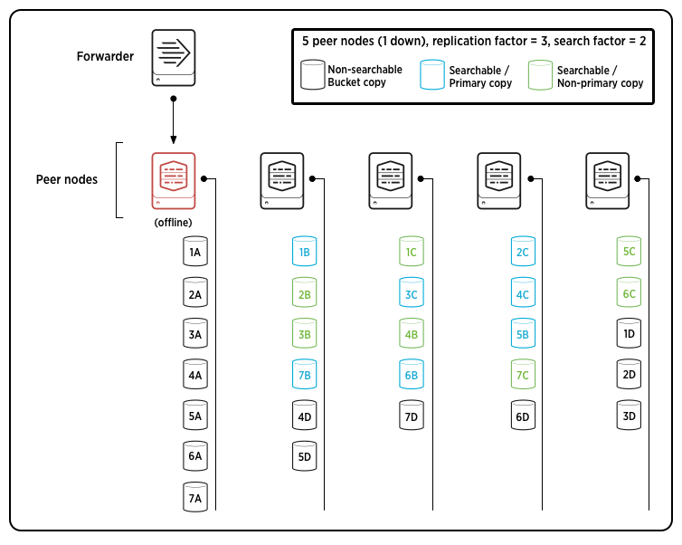

Indexes, indexers, and indexer clusters
This manual discusses Splunk Enterprise data repositories and the Splunk Enterprise components that create and manage them.
The index is the repository for Splunk Enterprise data. Splunk Enterprise transforms incoming data into events, which it stores in indexes.
An indexer is a Splunk Enterprise instance that indexes data. For small deployments, a single instance might perform other Splunk Enterprise functions as well, such as data input and search management. In a larger, distributed deployment, however, the functions of data input and search management are allocated to other Splunk Enterprise components. This manual focuses exclusively on the indexing function, in the context of either a single-instance or a distributed deployment.
An indexer cluster is a group of indexers configured to replicate each others' data, so that the system keeps multiple copies of all data. This process is known as index replication, or indexer clustering. By maintaining multiple, identical copies of data, clusters prevent data loss while promoting data availability for searching.
Indexes
As Splunk Enterprise indexes your data, it creates a number of files. These files fall into two main categories:
- The raw data in compressed form (rawdata)
- Indexes that point to the raw data (index files, also referred to as tsidx files), plus some metadata files
Together, these files constitute the Splunk Enterprise index. The files reside in sets of directories organized by age. These directories are called buckets. For more information, see "How Splunk Enterprise stores indexes" in this manual.
Splunk Enterprise manages its indexes to facilitate flexible searching and fast data retrieval, eventually archiving them according to a user-configurable schedule. Splunk Enterprise handles everything with flat files; it doesn't require any third-party database software running in the background.
During indexing, Splunk Enterprise processes incoming data to enable fast search and analysis, storing the results in the index as events. While indexing, Splunk Enterprise enhances the data in various ways, including by:
- Separating the datastream into individual, searchable events.
- Creating or identifying timestamps.
- Extracting fields such as host, source, and sourcetype.
- Performing user-defined actions on the incoming data, such as identifying custom fields, masking sensitive data, writing new or modified keys, applying breaking rules for multi-line events, filtering unwanted events, and routing events to specified indexes or servers.
This indexing process is also known as event processing.
To start indexing, you simply specify the data inputs that you want Splunk Enterprise to index. You can add more inputs at any time, and Splunk Enterprise will begin indexing them as well. See "What Splunk Enterprise can index" in the Getting Data In Manual to learn how to add data inputs. The Getting Data In Manual also describes how you can configure index-time event processing to meet the needs of your data. See "Overview of event processing".
Splunk Enterprise, by default, puts all user data into a single, preconfigured index. It also employs several other indexes for internal purposes. You can add new indexes and manage existing ones to meet your data requirements. See "Manage indexes" in this manual.
Indexers
The indexer is the Splunk Enterprise component that creates and manages indexes. The primary functions of an indexer are:
- Indexing incoming data.
- Searching the indexed data.
In single-machine deployments consisting of just one Splunk Enterprise instance, the indexer also handles the data input and search management functions. This type of small deployment might handle the needs of a single department in an organization.
For larger-scale needs, indexing is split out from the data input function and sometimes from the search management function as well. In these larger, distributed deployments, the Splunk Enterprise indexer might reside on its own machine and handle only indexing, along with searching of its indexed data. In those cases, other Splunk Enterprise components take over the non-indexing roles. Forwarders consume the data, indexers index and search the data, and search heads coordinate searches across the set of indexers. Here's an example of a scaled-out deployment:
For more information on using indexers in a distributed deployment, see "Indexers in a distributed deployment" in this manual.
A Splunk indexer is simply a Splunk Enterprise instance. To learn how to install a Splunk Enterprise instance, read the Installation Manual.
Indexer clusters
An indexer cluster is a group of Splunk Enterprise nodes that, working in concert, provide a redundant indexing and searching capability. There are three types of nodes in a cluster:
- A single master node to manage the cluster. The master node is a specialized type of indexer.
- Several peer nodes that handle the indexing function for the cluster, indexing and maintaining multiple copies of the data and running searches across the data.
- One or more search heads to coordinate searches across all the peer nodes.
Indexer clusters feature automatic failover from one peer node to the next. This means that, if one or more peers fail, incoming data continues to get indexed and indexed data continues to be searchable.
The first part of this manual contains configuration and management information relevant for all indexers, independent of whether they are part of a cluster. The second part of this manual, starting with the topic "About indexer clusters and index replication", is relevant only for clusters.
How indexing works
Splunk Enterprise can index any type of time-series data (data with timestamps). When Splunk Enterprise indexes data, it breaks it into events, based on the timestamps.
Event processing
Event processing occurs in two stages, parsing and indexing. All data that comes into Splunk Enterprise enters through the parsing pipeline as large (10,000 bytes) chunks. During parsing, Splunk Enterprise breaks these chunks into events which it hands off to the indexing pipeline, where final processing occurs.
While parsing, Splunk Enterprise performs a number of actions, including:
- Extracting a set of default fields for each event, including
host,source, andsourcetype. - Configuring character set encoding.
- Identifying line termination using linebreaking rules. While many events are short and only take up a line or two, others can be long.
- Identifying timestamps or creating them if they don't exist. At the same time that it processes timestamps, Splunk identifies event boundaries.
- Splunk can be set up to mask sensitive event data (such as credit card or social security numbers) at this stage. It can also be configured to apply custom metadata to incoming events.
In the indexing pipeline, Splunk Enterprise performs additional processing, including:
- Breaking all events into segments that can then be searched upon. You can determine the level of segmentation, which affects indexing and searching speed, search capability, and efficiency of disk compression.
- Building the index data structures.
- Writing the raw data and index files to disk, where post-indexing compression occurs.
The breakdown between parsing and indexing pipelines is of relevance mainly when deploying forwarders. Heavy forwarders can parse data and then forward the parsed data on to indexers for final indexing. Some source types - those that reference structured data - require configuration on the forwarder prior to indexing. See "Extract data from files with headers".
For more information about events and what happens to them during the indexing process, see the chapter "Configure event processing" in the Getting Data In Manual.
Note: Indexing is an I/O-intensive process.
This diagram shows the main processes inherent in indexing:

Note: This diagram represents a simplified view of the indexing architecture. It provides a functional view of the architecture and does not fully describe Splunk Enterprise internals. In particular, the parsing pipeline actually consists of three pipelines: parsing, merging, and typing, which together handle the parsing function. The distinction can matter during troubleshooting, but does not generally affect how you configure or deploy Splunk Enterprise.
What's in an index?
Splunk Enterprise stores all of the data it processes in indexes. An index is a collection of databases, which are subdirectories located in $SPLUNK_HOME/var/lib/splunk. Indexes consist of two types of files: rawdata files and index files. For detailed information, see "How Splunk Enterprise stores indexes" in this manual.
Default set of indexes
Splunk Enterprise comes with a number of preconfigured indexes, including:
- main: This is the default Splunk Enterprise index. All processed data is stored here unless otherwise specified.
- _internal: Stores Splunk Enterprise internal logs and processing metrics.
- _audit: Contains events related to the file system change monitor, auditing, and all user search history.
A Splunk Enterprise administrator can create new indexes, edit index properties, remove unwanted indexes, and relocate existing indexes. Splunk Enterprise administrators manage indexes through Splunk Web, the CLI, and configuration files such as indexes.conf. For more information, See "Managing indexes" in this manual.
Answers
Have questions? Visit Splunk Answers and see what questions and answers the Splunk community has around indexing.
Index time versus search time
Splunk Enterprise documentation includes many references to the terms "index time" and "search time". These terms distinguish between the types of processing that occur during indexing, and the types that occur when a search is run.
It is important to consider this distinction when administering Splunk Enterprise. For example, if you haven't yet started indexing data and you think you're going to have a lot of custom source types and hosts, you might want to get those in place before you start indexing. You can do this by defining custom source types and hosts (through rule-based source type assignment, source type overriding, input-based host assignment, and host overrides), so that these things are handled during the indexing process.
On the other hand, if you have already begun to index your data, you might want to handle the issue at search time. Otherwise, you will need to re-index your data, in order to apply the custom source types and hosts to your existing data as well as new data. After indexing, you can't change the host or source type assignments, but you can tag them with alternate values and manage the issue that way.
As a general rule, it is better to perform most knowledge-building activities, such as field extraction, at search time. Additional, custom field extraction, performed at index time, can degrade performance at both index time and search time. When you add to the number of fields extracted during indexing, the indexing process slows. Later, searches on the index are also slower, because the index has been enlarged by the additional fields, and a search on a larger index takes longer. You can avoid such performance issues by instead relying on search-time field extraction. For details on search-time field extraction, see "About fields" and "When Splunk Enterprise extracts fields" in the Knowledge Manager Manual.
At index time
Index-time processes take place just before event data is actually indexed.
The following processes occur during (or before) index time:
- Default field extraction (such as
host,source,sourcetype, andtimestamp) - Static or dynamic host assignment for specific inputs
- Default host assignment overrides
- Source type customization
- Index-time field extraction
- Event timestamping
- Event linebreaking
- Event segmentation (also happens at search time)
At search time
Search-time processes take place while a search is run, as events are collected by the search. The following processes occur at search time:
- Event segmentation (also happens at index time)
- Event type matching
- Search-time field extraction (automatic and custom field extractions, including multivalue fields and calculated fields)
- Field aliasing
- Addition of fields from lookups
- Source type renaming
- Tagging
Install an indexer
All full Splunk Enterprise instances serve as indexers by default. To learn how to install a Splunk Enterprise instance, read the Installation Manual. Then return to this manual to learn how to configure the indexer.
If you plan to deploy an indexer in a distributed deployment, next read the topic, Indexers in a distributed environment.
Indexers in a distributed deployment
Important: To better understand this topic, you should be familiar with Splunk Enterprise distributed environments, covered in the Distributed Deployment Manual.
The indexer is the Splunk Enterprise component that creates and manages indexes. The primary functions of an indexer are:
- Indexing incoming data.
- Searching the indexed data.
In single-machine deployments consisting of just one Splunk Enterprise instance, the indexer also handles the data input and search management functions.
For larger-scale needs, indexing is split out from the data input function and sometimes from the search management function as well. In these larger, distributed deployments, the indexer might reside on its own machine and handle only indexing, along with searching of its indexed data. In those cases, other Splunk Enterprise components take over the non-indexing roles.
For instance, you might have a set of Windows and Linux machines generating events, which need to go to a central indexer for consolidation. Usually the best way to do this is to install a lightweight instance of Splunk Enterprise, known as a forwarder, on each of the event-generating machines. These forwarders handle data input and send the data across the network to the indexer residing on its own machine.
Similarly, in cases where you have a large amount of indexed data and numerous concurrent users searching on it, it can make sense to split off the search management function from indexing. In this type of scenario, known as distributed search, one or more search heads distribute search requests across multiple indexers. The indexers still perform the actual searching of their own indexes, but the search heads manage the overall search process across all the indexers and present the consolidated search results to the user.
Here's an example of a scaled-out deployment:
While the fundamental issues of indexing and event processing remain the same for distributed deployments, it is important to take into account deployment needs when planning your indexing strategy.
Forward data to an indexer
To forward remote data to an indexer, you use forwarders, which are Splunk Enterprise instances that receive data inputs and then consolidate and send the data to a Splunk Enterprise indexer. Forwarders come in two flavors:
- Universal forwarders. These maintain a small footprint on their host machine. They perform minimal processing on the incoming data streams before forwarding them on to an indexer, also known as the receiver.
- Heavy forwarders. These retain most of the functionality of a full Splunk Enterprise instance. They can parse data before forwarding it to the receiving indexer. (See "How indexing works" for the distinction between parsing and indexing.) They can store indexed data locally and also forward the parsed data to a receiver for final indexing on that machine as well.
Both types of forwarders tag data with metadata such as host, source, and source type, before forwarding it on to the indexer.
Forwarders allow you to use resources efficiently when processing large quantities or disparate types of data coming from remote sources. They also enable a number of interesting deployment topologies, by offering capabilities for load balancing, data filtering, and routing.
For an extended discussion of forwarders, including configuration and detailed use cases, read the Forwarding Data Manual.
Search across multiple indexers
In distributed search, search heads send search requests to indexers and then merge the results back to the user. This is useful for a number of purposes, including horizontal scaling, access control, and managing geo-dispersed data.
For an extended discussion of distributed search and search heads, including configuration and detailed use cases, see the Distributed Search manual.
Indexer clusters also use search heads to coordinate searches across the cluster's peer nodes. See "About indexer clusters and index replication".
Deploy indexers in a distributed environment
To implement a distributed environment similar to the diagram earlier in this topic, you need to install and configure three types of components:
- Indexers
- Forwarders (typically, universal forwarders)
- Search head(s)
Install and configure the indexers
By default, all full Splunk Enterprise instances serve as indexers. For horizontal scaling, you can install multiple indexers on separate machines.
To learn how to install a Splunk Enterprise instance, read the Installation Manual.
Then return to this manual for information on configuring each individual indexer to meet the needs of your specific deployment.
Install and configure the forwarders
A typical distributed deployment has a large number of forwarders feeding data to a few indexers. For most forwarding purposes, the universal forwarder is the best choice. The universal forwarder is a separate downloadable from the full Splunk Enterprise instance.
To learn how to install and configure forwarders, read the Forwarding Data Manual.
Install and configure the search head(s)
You can install one or more search heads to handle your distributed search needs. Search heads are just full Splunk Enterprise instances that have been specially configured.
To learn how to configure a search head, read the Distributed Search manual.
Other deployment tasks
You need to configure Splunk Enterprise licensing by designating a license master. See the chapter Configure Splunk Enterprise licenses in the Admin Manual for more information.
You can use the Splunk Enterprise deployment server to simplify the job of updating the deployment components. For details on how to configure a deployment server, see the manual Updating Splunk Enterprise Instances.
Install a cluster of indexers
If data availability, data fidelity, and data recovery are key issues for your deployment, then you should consider deploying an indexer cluster, rather than a series of individual indexers. For further information, see "About indexer clusters and index replication" in this manual.
Manage indexes
About managing indexes
When you add data, the indexer processes it and stores it in an index. By default, data you feed to an indexer is stored in the main index, but you can create and specify other indexes for different data inputs.
An index is a collection of directories and files. These are located under $SPLUNK_HOME/var/lib/splunk. Index directories are also called buckets and are organized by age. For detailed information on index storage, see "How Splunk Enterprise stores indexes".
In addition to the main index, Splunk Enterprise comes preconfigured with a number of internal indexes. Internal indexes are named starting with an underscore (_). To see a full list of indexes in Splunk Web, click the Settings link in the upper portion of Splunk Web and then select Indexes. The list includes:
- main: The default Splunk Enterprise index. All processed external data is stored here unless otherwise specified.
- _internal: This index includes Splunk Enterprise internal logs and metrics.
- _audit: Events from the file system change monitor, auditing, and all user search history.
A number of topics in this manual describe ways you can manage your indexes. In particular the following topics are helpful in index management:
- Set up multiple indexes
- Remove indexes and data from Splunk
- Configure index storage
- Move the index database
- Use multiple partitions for index data
- Configure index size
- Set limits on disk usage
- Back up indexed data
- Set a retirement and archiving policy
For more information on the indexing process
To learn more about indexes, see:
- The topic "How indexing works" in this manual.
- The topic "How Splunk stores indexes" in this manual.
- The chapter "About clusters and index replication" in this manual.
- The chapter "Configure event processing" in the Getting Data In Manual.
- The chapter "Set up and use summary indexes" in the Knowledge Manager Manual, for information on working with extremely large datasets.
Set up multiple indexes
The main index, by default, holds all your events. The indexer also has a number of other indexes for use by its internal systems, as well as for additional features such as summary indexing and event auditing.
With a Splunk Enterprise license, you can add an unlimited number of additional indexes. The main index serves as the default index for any input or search command that doesn't specify an index, although you can change the default. You can add indexes using Splunk Web, the CLI, or indexes.conf.
This topic covers:
- The reasons why you might want multiple indexes.
- How to create new indexes.
- How to send events to specific indexes.
- How to search specific indexes.
Why have multiple indexes?
There are several key reasons for having multiple indexes:
- To control user access.
- To accommodate varying retention policies.
- To speed searches in certain situations.
The main reason you'd set up multiple indexes is to control user access to the data that's in them. When you assign users to roles, you can limit user searches to specific indexes based on the role they're in.
In addition, if you have different policies for retention for different sets of data, you might want to send the data to different indexes and then set a different archive or retention policy for each index.
Another reason to set up multiple indexes has to do with the way search works. If you have both a high-volume/high-noise data source and a low-volume data source feeding into the same index, and you search mostly for events from the low-volume data source, the search speed will be slower than necessary, because the indexer also has to search through all the data from the high-volume source. To mitigate this, you can create dedicated indexes for each data source and send data from each source to its dedicated index. Then, you can specify which index to search on. You'll probably notice an increase in search speed.
Create and edit indexes
You can create or edit indexes with Splunk Web, the CLI, or by editing indexes.conf directly.
Note: To add a new index to an indexer cluster, you must directly edit indexes.conf. You cannot add an index via Splunk Web or the CLI. For information on how to configure indexes.conf for clusters, see "Configure the peer indexes in an indexer cluster". That topic includes an example of creating a new cluster index.
Use Splunk Web
1. In Splunk Web, navigate to Settings > Indexes and click New.
2. To create a new index, enter:
- A name for the index. User-defined index names must consist of only numbers, lowercase letters, underscores, and hyphens. They cannot begin with an underscore or hyphen, or contain the word "kvstore".
- The path locations for index data storage:
- Home path; leave blank for default
$SPLUNK_DB/<index_name>/db - Cold db path; leave blank for default
$SPLUNK_DB/<index_name>/colddb - Thawed/resurrected db path, leave blank for default
$SPLUNK_DB/<index_name>/thaweddb
- Home path; leave blank for default
- The maximum size of the entire index. Defaults to 500000MB.
- The maximum size of the hot (currently written to) portion of this index. When setting the maximum size, you should use
auto_high_volumefor high volume indexes (such as the main index); otherwise, useauto. - The frozen archive path. Set this field if you want to archive frozen buckets. For information on bucket archiving, see "Archive indexed data".
Note: For detailed information on each of these settings, see "Configure index storage".
3. Click Save.
You can edit an index by clicking on the index name in the Indexes section of the Settings menu in Splunk Web. Properties that you cannot change in Splunk Web are grayed out. To change those properties, edit indexes.conf, then restart the indexer.
Note: Some index properties are configurable only by editing the indexes.conf file. Check the indexes.conf topic for a complete list of properties.
Use the CLI
Navigate to the $SPLUNK_HOME/bin/ directory and use the add index command. You do not need to stop the indexer first.
To add a new index called "fflanda", enter the following command:
splunk add index fflanda
Note: User-defined index names must consist of only numbers, lowercase letters, underscores, and hyphens. They cannot begin with an underscore or hyphen.
If you do not want to use the default path for your new index, you can use parameters to specify a new location:
splunk add index foo -homePath /your/path/foo/db -coldPath /your/pat/foo/colddb
-thawedPath /your/path/foo/thawedDb
You can also edit an index's properties from the CLI. For example, to edit an index called "fflanda" using the CLI, type:
splunk edit index fflanda -<parameter> <value>
For detailed information on index settings, see "Configure index storage".
Edit indexes.conf
To add a new index, add a stanza to indexes.conf in $SPLUNK_HOME/etc/system/local, identified by the name of the new index. For example:
[newindex]
homePath=<path for hot and warm buckets>
coldPath=<path for cold buckets>
thawedPath=<path for thawed buckets>
...
For information on index settings, see "Configure index storage" and the indexes.conf spec file.
Note: The index name, specified in the stanza, must consist of only numbers, lowercase letters, underscores, and hyphens. User-defined index names cannot begin with an underscore or hyphen.
You must restart the indexer after editing indexes.conf.
Important: For information on adding or editing index configurations on cluster nodes, see "Configure the peer indexes in an indexer cluster".
Send events to specific indexes
By default, all external events go to the index called main. However, you might want to send some events to other indexes. For example, you might want to route all data from a particular input to its own index. Or you might want to segment data or send event data from a noisy source to an index that is dedicated to receiving it.
Important: To send events to a specific index, the index must already exist on the indexer. If you route any events to an index that doesn't exist, the indexer will drop those events.
Send all events from a data input to a specific index
To send all events from a particular data input to a specific index, add the following line to the input's stanza in inputs.conf on the Splunk Enterprise component where the data is entering the system: either the indexer itself or a forwarder sending data to the indexer:
index = <index_name>
The following example inputs.conf stanza sends all data from /var/log to an index named fflanda:
[monitor:///var/log]
disabled = false
index = fflanda
Route specific events to a different index
Just as you can route events to specific queues, you can also route specific events to specific indexes. You configure this on the indexer itself, not on the forwarder sending data to the indexer, if any.
To route certain events to a specific index, edit props.conf and transforms.conf on the indexer:
1. Identify a common attribute for the events that can be used to differentiate them.
2. In props.conf, create a stanza for the source, source type, or host. This stanza specifies a transforms_name that corresponds to a regex-containing stanza you will create in transforms.conf.
3. In transforms.conf, create an stanza named with the transforms_name you specified in step 2. This stanza:
- Specifies a regular expression that matches the identified attribute from step 1.
- Specifies the alternate index that events matching the attribute should be routed to.
The sections below fill out the details for steps 2 and 3.
Edit props.conf
Add the following stanza to $SPLUNK_HOME/etc/system/local/props.conf:
[<spec>]
TRANSFORMS-<class_name> = <transforms_name>
Note the following:
-
<spec>is one of the following:-
<sourcetype>, the sourcetype of an event -
host::<host>, where<host>is the host for an event -
source::<source>, where<source>is the source for an event
-
-
<class_name>is any unique identifier.
-
<transforms_name>is whatever unique identifier you want to give to your transform intransforms.conf.
Edit transforms.conf
Add the following stanza to $SPLUNK_HOME/etc/system/local/transforms.conf:
[<transforms_name>]
REGEX = <your_custom_regex>
DEST_KEY = _MetaData:Index
FORMAT = <alternate_index_name>
Note the following:
-
<transforms_name>must match the<transforms_name>identifier you specified inprops.conf.
-
<your_custom_regex>must provide a match for the attribute you identified earlier, in step 1.
-
DEST_KEYmust be set to the index attribute_MetaData:Index.
-
<alternate_index_name>specifies the alternate index that the events will route to.
Example
This examples routes events of windows_snare_log source type to the appropriate index based on their log types. "Application" logs will go to an alternate index, while all other log types, such as "Security", will go to the default index.
To make this determination, it uses props.conf to direct events of windows_snare_log source type through the transforms.conf stanza named "AppRedirect", where a regex then looks for the log type, "Application". Any event with a match on "Application" in the appropriate location is routed to the alternate index, "applogindex". All other events go to the default index.
1. Identify an attribute
The events in this example look like this:
web1.example.com MSWinEventLog 1 Application 721 Wed Sep 06 17:05:31 2006
4156 MSDTC Unknown User N/A Information WEB1 Printers String
message: Session idle timeout over, tearing down the session. 179
web1.example.com MSWinEventLog 1 Security 722 Wed Sep 06 17:59:08 2006
576 Security SYSTEM User Success Audit WEB1 Privilege Use
Special privileges assigned to new logon: User Name: Domain: Logon
ID: (0x0,0x4F3C5880) Assigned: SeBackupPrivilege SeRestorePrivilege
SeDebugPrivilege SeChangeNotifyPrivilege SeAssignPrimaryTokenPrivilege 525
Some events contain the value "Application", while others contain the value "Security" in the same location.
2. Edit props.conf
Add this stanza to $SPLUNK_HOME/etc/system/local/props.conf:
[windows_snare_syslog]
TRANSFORMS-index = AppRedirect
This directs events of windows_snare_syslog sourcetype to the AppRedirect stanza in transforms.conf.
3. Edit transforms.conf
Add this stanza to $SPLUNK_HOME/etc/system/local/transforms.conf:
[AppRedirect]
REGEX = MSWinEventLog\s+\d+\s+Application
DEST_KEY = _MetaData:Index
FORMAT = applogindex
This stanza processes the events directed here by props.conf. Events that match the regex (because they contain the string "Application" in the specified location) get routed to the alternate index, "applogindex". All other events route as usual to the default index.
Search a specific index
When the indexer searches, it targets the default index (by default, main), unless the search explicitly specifies an index. For example, this search command searches in the hatch index:
index=hatch userid=henry.galeYou can also specify an alternate default index for a given role to search when you create or edit that role.
Remove indexes and indexed data
You can remove indexed data or even entire indexes from the indexer. These are the main options:
- Delete events from subsequent searches.
- Remove all data from one or more indexes.
- Remove or disable an entire index.
- Delete older data, based on a retirement policy.
Caution: Removing data is irreversible. If you want to get your data back once you've removed data using any of the techniques described in this topic, you must re-index the applicable data sources.
Delete events from subsequent searches
The Splunk search language provides the special operator delete to delete event data from subsequent searches. Before using delete , read this section carefully.
Note: You cannot run the delete operator during a real-time search; you cannot delete events as they come in. If you try to use delete during a real-time search, Splunk Enterprise will display an error.
Who can delete?
The delete operator can only be run by a user with the "delete_by_keyword" capability. By default, Splunk Enterprise ships with a special role, "can_delete" that has this capability (and no others). The admin role does not have this capability by default. It's recommended that you create a special user that you log into when you intend to delete index data.
For more information, refer to "Add and edit roles" in the Security Manual.
How to delete
First run a search that returns the events you want deleted. Make sure that this search returns only the events you want to delete, and no other events. Once you're certain of that, you can pipe the results of the search to the delete operator.
For example, if you want to remove the events you've indexed from a source called /fflanda/incoming/cheese.log so that they no longer appear in searches, do the following:
1. Disable or remove that source so that it no longer gets indexed.
2. Search for events from that source in your index:
source="/fflanda/incoming/cheese.log"3. Look at the results to confirm that this is the data you want to delete.
4. Once you've confirmed that this is the data you want to delete, pipe the search to delete:
source="/fflanda/incoming/cheese.log" | delete See the page about the delete operator in the Search Reference Manual for more examples.
Note: When running Splunk on Windows, substitute the forward slashes (/) in the examples with backslashes (\).
Piping a search to the delete operator marks all the events returned by that search so that subsequent searches do not return them. No user (even with admin permissions) will be able to see this data when searching.
Note: Piping to delete does not reclaim disk space. The data is not actually removed from the index; it is just invisible to searches.
The delete operator does not update the metadata of the events, so any metadata searches will still include the events although they are not searchable. The main All indexed data dashboard will still show event counts for the deleted sources, hosts, or sourcetypes.
The delete operation and indexer clusters
In the normal course of index replication, the effects of a delete operation get quickly propagated across all bucket copies in the cluster, typically within a few seconds or minutes, depending on the cluster load and amount of data and buckets affected by the delete operation. During this propagation interval, a search can return results that have already been deleted.
Also, if a peer that had primary bucket copies at the time of the delete operation goes down before all the results have been propagated, some of the deletes will be lost. In that case, you must rerun the operation after the primary copies from the downed peer have been reassigned.
Remove data from one or all indexes
To delete indexed data permanently from your disk, use the CLI clean command. This command completely deletes the data in one or all indexes, depending on whether you provide an <index_name> argument. Typically, you run clean before re-indexing all your data.
Note: The clean command does not work on clustered indexes.
How to use the clean command
Here are the main ways to use the clean command:
- To access the help page for
clean, type:
splunk help clean
- To permanently remove event data from all indexes, type:
splunk clean eventdata
- To permanently remove event data from a single index, type:
splunk clean eventdata -index <index_name>
where <index_name> is the name of the targeted index.
- Add the
-fparameter to forcecleanto skip its confirmation prompts.
Important: You must stop the indexer before you run the clean command.
Note: In pre-5.0 versions of Splunk Enterprise, running the clean command caused the indexer to reset the next bucket ID value for the index to 0. Starting with version 5.0, this is no longer the case. So, if the latest bucket ID was 3, after you run clean, the next bucket ID will be 4, not 0. For more information on bucket naming conventions and the bucket ID, refer to "What the index directories look like" in this manual.
Examples
This example removes event data from all indexes:
splunk stop
splunk clean eventdata
This example removes event data from the _internal index and forces Splunk to skip the confirmation prompt:
splunk stop
splunk clean eventdata -index _internal -f
Remove an index entirely
To remove an index entirely (and not just the data contained in it), use the CLI command remove index:
splunk remove index <index_name>
This command deletes the index's data directories and removes the index's stanza from indexes.conf.
Before running the command, look through all inputs.conf files (on your indexer and on any forwarders sending data to the indexer) and make sure that none of the stanzas are directing data to the index you plan to delete. In other words, if you want to delete an index called "nogood", make sure the following attribute/value pair does not appear in any of your input stanzas: index=nogood. Once the index has been deleted, the indexer will discard any data still being sent to that index.
When you run remove index, it first warns you if any of the inputs on the indexer (but not on any forwarders) are still configured to send data to the specified index. You'll see a message like this:
03-28-2012 23:59:22.973 -0700 WARN IndexAdminHandler - Events from the following 3 inputs will now be discarded, since they had targeted index=zzz:
03-28-2012 23:59:22.973 -0700 WARN IndexAdminHandler - type: monitor, id: /home/v/syslog-avg-1000-lines
03-28-2012 23:59:22.973 -0700 WARN IndexAdminHandler - type: monitor, id: /mnt/kickstart/internal/fermi
03-28-2012 23:59:22.973 -0700 WARN IndexAdminHandler - type: monitor, id: /mnt/kickstart/internal/flights
You can run remove index while splunkd is running. You do not need to restart splunkd after the command completes.
The index deletion process is ordinarily fast, but the duration depends on several factors:
- The amount of data being deleted.
- Whether you are currently performing heavy writes to other indexes on the same disk.
- Whether you have a large number of small
.tsidxfiles in the index you're deleting.
Disable an index without deleting it
Use the disable index CLI command to disable an index without deleting it:
splunk disable index <index_name>
Unlike the remove index command, disable index does not delete index data, and it is reversible (with the enable index command). However, once an index is disabled, splunkd will no longer accept data targeted at it.
You can also disable an index in Splunk Web. To do this, navigate to Settings > Indexes and click Disable to the right of the index you want to disable.
Delete older data based on retirement policy
When data in an index reaches a specified age or when the index grows to a specified size, it rolls to the "frozen" state, at which point the indexer deletes it from the index. Just before deleting the data, the indexer can move it to an archive, depending on how you configure your retirement policy.
For more information, refer to "Set a retirement and archiving policy" in this manual.
Optimize indexes
While the indexer is indexing data, one or more instances of the splunk-optimize process will run intermittently, merging index files together to optimize performance when searching the data. The splunk-optimize process can use a significant amount of cpu but only briefly. You can reduce the number of concurrent instances of splunk-optimize by changing the value of maxConcurrentOptimizes in indexes.conf, but this is not typically necessary.
If splunk-optimize does not run frequently enough, searching will be less efficient.
splunk-optimize runs only on hot buckets. You can run it on warm buckets manually, if you find one with a larger number of index (.tsidx) files; typically, more than 25. To run splunk-optimize, go to $SPLUNKHOME/bin and type:
splunk-optimize -d|--directory <bucket_directory>
splunk-optimize accepts a number of optional parameters. To see a list of available parameters, type:
splunk-optimize
For more information on buckets, see "How Splunk stores indexes".
Manage index storage
How the indexer stores indexes
As the indexer indexes your data, it creates a bunch of files. These files contain two types of data:
- The raw data in compressed form (rawdata)
- Indexes that point to the raw data, plus some metadata files (index files)
Together, these files constitute the Splunk Enterprise index. The files reside in sets of directories organized by age. Some directories contain newly indexed data; others contain previously indexed data. The number of such directories can grow quite large, depending on how much data you're indexing.
Why you might care
You might not care, actually. The indexer handles indexed data by default in a way that gracefully ages the data through several stages. After a long period of time, typically several years, the indexer removes old data from your system. You might well be fine with the default scheme it uses.
However, if you're indexing large amounts of data, have specific data retention requirements, or otherwise need to carefully plan your aging policy, you've got to read this topic. Also, to back up your data, it helps to know where to find it. So, read on....
How data ages
Each of the index directories is known as a bucket. To summarize so far:
- An "index" contains compressed raw data and associated index files.
- An index resides across many age-designated index directories.
- An index directory is called a bucket.
A bucket moves through several stages as it ages:
- hot
- warm
- cold
- frozen
- thawed
As buckets age, they "roll" from one stage to the next. As data is indexed, it goes into a hot bucket. Hot buckets are both searchable and actively being written to. An index can have several hot buckets open at a time.
When certain conditions occur (for example, the hot bucket reaches a certain size or splunkd gets restarted), the hot bucket becomes a warm bucket ("rolls to warm"), and a new hot bucket is created in its place. Warm buckets are searchable, but are not actively written to. There are many warm buckets.
Once further conditions are met (for example, the index reaches some maximum number of warm buckets), the indexer begins to roll the warm buckets to cold, based on their age. It always selects the oldest warm bucket to roll to cold. Buckets continue to roll to cold as they age in this manner. After a set period of time, cold buckets roll to frozen, at which point they are either archived or deleted. By editing attributes in indexes.conf, you can specify the bucket aging policy, which determines when a bucket moves from one stage to the next.
If the frozen data has been archived, it can later be thawed. Thawed data is available for searches.
Here are the stages that buckets age through:
| Bucket stage | Description | Searchable? |
|---|---|---|
| Hot | Contains newly indexed data. Open for writing. One or more hot buckets for each index. | Yes |
| Warm | Data rolled from hot. There are many warm buckets. Data is not actively written to warm buckets. | Yes |
| Cold | Data rolled from warm. There are many cold buckets. | Yes |
| Frozen | Data rolled from cold. The indexer deletes frozen data by default, but you can choose to archive it instead. Archived data can later be thawed. | No |
| Thawed | Data restored from an archive. If you archive frozen data, you can later return it to the index by thawing it. | Yes |
The collection of buckets in a particular stage is sometimes referred to as a database or "db": the "hot db", the "warm db", the "cold db", etc.
What the index directories look like
Each index occupies its own directory under $SPLUNK_HOME/var/lib/splunk. The name of the directory is the same as the index name. Under the index directory are a series of subdirectories that categorize the buckets by stage (hot/warm, cold, or thawed).
The buckets themselves are subdirectories within those directories. The bucket directory names are based on the age of the data.
Here is the directory structure for the default index (defaultdb):
| Bucket stage | Default location | Notes |
|---|---|---|
| Hot | $SPLUNK_HOME/var/lib/splunk/defaultdb/db/*
| There can be multiple hot subdirectories, one for each hot bucket. See "Bucket naming conventions". |
| Warm | $SPLUNK_HOME/var/lib/splunk/defaultdb/db/*
| There are separate subdirectories for each warm bucket. See "Bucket naming conventions". |
| Cold | $SPLUNK_HOME/var/lib/splunk/defaultdb/colddb/*
| There are multiple cold subdirectories. When warm buckets roll to cold, they get moved into this directory, but are not renamed. |
| Frozen | N/A: Frozen data gets deleted or archived into a directory location you specify. | Deletion is the default; see "Archive indexed data" for information on how to archive the data instead. |
| Thawed | $SPLUNK_HOME/var/lib/splunk/defaultdb/thaweddb/*
| Location for data that has been archived and later thawed. See "Restore archived data" for information on restoring archived data to a thawed state. |
The paths for the hot/warm, cold, and thawed directories are configurable, so, for example, you can store cold buckets in a separate location from hot/warm buckets. See "Configure index storage" and "Use multiple partitions for index data".
Important: All index locations must be writable.
Note: In pre-6.0 versions of Splunk Enterprise, replicated copies of cluster buckets always resided in the colddb directory, even if they were hot or warm buckets. Starting with 6.0, hot and warm replicated copies reside in the db directory, the same as for non-replicated copies.
Bucket naming conventions
Bucket names depend on:
- The stage of the bucket: hot or warm/cold/thawed
- The type of bucket directory: non-clustered, clustered originating, or clustered replicated
Important: Bucket naming conventions are subject to change.
Non-clustered buckets
A standalone indexer creates non-clustered buckets. These use one type of naming convention.
Clustered buckets
An indexer that is part of an indexer cluster creates clustered buckets. A clustered bucket has multiple exact copies. The naming convention for clustered buckets distinguishes the types of copies, originating or replicated.
Briefly, a bucket in an indexer cluster has multiple copies, according to its replication factor. When the data enters the cluster, the receiving indexer writes the data to a hot bucket. This receiving indexer is known as the source cluster peer, and the bucket where the data gets written is called the originating copy of the bucket.
As data is written to the hot copy, the source peer streams copies of the hot data, in blocks, to other indexers in the cluster. These indexers are referred to as the target peers for the bucket. The copies of the streamed data on the target peers are known as replicated copies of the bucket.
When the source peer rolls its originating hot bucket to warm, the target peers roll their replicated copies of that bucket. The warm copies are exact replicas of each other.
For an introduction to indexer cluster architecture and replicated data streaming, read "Basic indexer cluster architecture".
Bucket names
These are the naming conventions:
| Bucket type | Hot bucket | Warm/cold/thawed bucket |
|---|---|---|
| Non-clustered | hot_v1_<localid>
| db_<newest_time>_<oldest_time>_<localid>
|
| Clustered originating | hot_v1_<localid>
| db_<newest_time>_<oldest_time>_<localid>_<guid>
|
| Clustered replicated | <localid>_<guid>
| rb_<newest_time>_<oldest_time>_<localid>_<guid>
|
Note:
-
<newest_time>and<oldest_time>are timestamps indicating the age of the data in the bucket. The timestamps are expressed in UTC epoch time (in seconds). For example:db_1223658000_1223654401_2835is a warm, non-clustered bucket containing data from October 10, 2008, covering the exact period of 9am-10am. -
<localid>is an ID for the bucket. For a clustered bucket, the originating and replicated copies of the bucket have the same<localid>. -
<guid>is theguidof the source peer node. Theguidis located in the peer's$SPLUNK_HOME/etc/instance.cfgfile.
In an indexer cluster, the originating warm bucket and its replicated copies have identical names, except for the prefix (db for the originating bucket; rb for the replicated copies).
Note: In an indexer cluster, when data is streamed from the source peer to a target peer, the data first goes into a temporary directory on the target peer, identified by the hot bucket convention of <localid>_<guid>. This is true for any replicated bucket copy, whether or not the streaming bucket is a hot bucket. For example, during bucket fix-up activities, a peer might stream a warm bucket to other peers. When the replication of that bucket has completed, the <localid>_<guid> directory is rolled into a warm bucket directory, identified by the rb_ prefix.
Buckets and Splunk Enterprise administration
When you are administering Splunk Enterprise, it helps to understand how the indexer stores indexes across buckets. In particular, several admin activities require a good understanding of buckets:
- For information on setting a retirement and archiving policy, see "Set a retirement and archiving policy." You can base the retirement policy on either the size or the age of data.
- For information on how to archive your indexed data, see "Archive indexed data". To learn how to restore data from archive, read "Restore archived data."
- To learn how to back up your data, read "Back up indexed data." That topic also discusses how to manually roll hot buckets to warm, so that you can then back them up. Also, see "Best practices for backing up" on the Community Wiki.
- For information on setting limits on disk usage, see "Set limits on disk usage."
- For a list of configurable bucket settings, see "Configure index storage."
- For information on configuring index size, see "Configure index size."
- For information on partitioning index data, see "Use multiple partitions for index data."
- For information on how buckets function in indexer clusters, see "Buckets and indexer clusters."
In addition, see "indexes.conf" in the Admin Manual and "Understanding buckets" on the Community Wiki.
Configure index storage
You configure indexes in indexes.conf. How you edit indexes.conf depends on whether you're using index replication, also known as indexer clustering:
- For non-clustered indexes, edit a copy of
indexes.confin$SPLUNK_HOME/etc/system/local/or in a custom app directory in$SPLUNK_HOME/etc/apps/. Do not edit the copy in$SPLUNK_HOME/etc/system/default. For information on configuration files and directory locations, see "About configuration files".
- For clustered indexes, edit a copy of
indexes.confon the cluster master node and then distribute it to all the peer nodes, as described in "Configure the peer indexes in an indexer cluster".
This table lists the key indexes.conf attributes affecting buckets and what they configure. It also provides links to other topics that show how to use these attributes. For the most detailed information on these attributes, as well as others, always refer to the indexes.conf spec file.
| Attribute | What it configures | Default | For more information, see ... |
|---|---|---|---|
| homePath | The path that contains the hot and warm buckets. (Required.)
This location must be writable. | $SPLUNK_HOME/var/lib/splunk/ defaultdb/db/ (for the default index only)
| Use multiple partitions for index data |
| coldPath | The path that contains the cold buckets. (Required.)
This location must be writable. | $SPLUNK_HOME/var/lib/splunk/ defaultdb/colddb/ (for the default index only)
| Use multiple partitions for index data |
| thawedPath | The path that contains any thawed buckets. (Required.)
This location must be writable. | $SPLUNK_HOME/var/lib/splunk/ defaultdb/thaweddb/ (for the default index only)
| Use multiple partitions for index data |
| repFactor | Determines whether the index gets replicated to other cluster peers. (Required for indexes on cluster peer nodes.) | 0 (which means that the index will not get replicated to other peers; the correct behavior for non-clustered indexes). For clustered indexes, you must set repFactor to auto, which causes the index to get replicated.
| Configure the peer indexes in an indexer cluster |
| maxHotBuckets | The maximum number of hot buckets. This value should be at least 2, to deal with any archival data. The main default index, for example, has this value set to 10. | 3, for new, custom indexes. | How data ages |
| maxDataSize | Determines rolling behavior, hot to warm. The maximum size for a hot bucket. When a hot bucket reaches this size, it rolls to warm. This attribute also determines the approximate size for all buckets. | Depends; see indexes.conf. | Use multiple partitions for index data |
| maxWarmDBCount | Determines rolling behavior, warm to cold. The maximum number of warm buckets. When the maximum is reached, warm buckets begin rolling to cold. | 300 | Use multiple partitions for index data |
| maxTotalDataSizeMB | Determines rolling behavior, cold to frozen. The maximum size of an index. When this limit is reached, cold buckets begin rolling to frozen. | 500000 (MB) | Set a retirement and archiving policy |
| frozenTimePeriodInSecs | Determines rolling behavior, cold to frozen. Maximum age for a bucket, after which it rolls to frozen. | 188697600 (in seconds; approx. 6 years) | Set a retirement and archiving policy |
| coldToFrozenDir | Location for archived data. Determines behavior when a bucket rolls from cold to frozen. If set, the indexer will archive frozen buckets into this directory just before deleting them from the index. | If you don't set either this attribute or coldToFrozenScript, the indexer will just log the bucket's directory name and then delete it once it rolls to frozen.
| Archive indexed data |
| coldToFrozenScript | Script to run just before a cold bucket rolls to frozen. If you set both this attribute and coldToFrozenDir, the indexer will use coldToFrozenDir and ignore this attribute.
| If you don't set either this attribute or coldToFrozenDir, the indexer will just log the bucket's directory name and then delete it once it rolls to frozen.
| Archive indexed data |
| homePath.maxDataSizeMB
coldPath.maxDataSizeMB | Maximum size for homePath (hot/warm bucket storage) or coldPath (cold bucket storage). If either attribute is missing or set to 0, its path is not individually constrained in size.
| None | Configure index size according to bucket type |
| maxVolumeDataSizeMB | Maximum size for a volume. If the attribute is missing, the individual volume is not constrained in size. | None | Configure index size with volumes |
Note: For non-clustered indexes only, you can use Splunk Web to configure the path to your indexes. Go to Settings > System settings > General settings. Under the section Index settings, set the field Path to indexes. After doing this, you must restart the indexer from the CLI, not from within Splunk Web.
Move the index database
You can move the entire index database from one location to another. The sections in this topic provide procedures for doing so. The procedures assume that the index database is in its default location, created during the original installation.
You can also move individual indexes or parts of an index to separate locations. Once you do so, the procedures in this topic are no longer valid. For detailed information on the structure of Splunk Enterprise indexes, read "How the indexer stores indexes". For information on how to change the location(s) for a single index, read "Configure index storage".
For *nix users
1. Make sure the target file system has enough space - at least 1.2 times the size of the total amount of raw data you plan to index.
2. Create the target directory and make sure it has write permissions for the user Splunk Enterprise runs as. For example, if Splunk Enterprise runs as user "splunk", give it ownership of the directory:
mkdir /foo/bar
chown splunk /foo/bar/
For information on setting the user that Splunk Enterprise runs as, read this topic.
3. When the new index home is ready, stop the indexer. Navigate to the $SPLUNK_HOME/bin/ directory and run this command:
splunk stop
4. Copy the existing index file system to its new home:
cp -rp $SPLUNK_DB/* /foo/bar/
5. Unset the SPLUNK_DB environment variable:
unset SPLUNK_DB
6. Edit $SPLUNK_HOME/etc/splunk-launch.conf to reflect the new index directory. Change the SPLUNK_DB attribute in that file to point to your new index directory:
SPLUNK_DB=/foo/bar
7. Start the indexer. Navigate to $SPLUNK_HOME/bin/ and run this command:
splunk start
The indexer picks up where it left off, reading from, and writing to, the new copy of the index.
8. You can delete the old index database after verifying that the indexer can read and write to the new location.
For Windows users
1. Make sure the target drive or directory has enough space available.
Caution: Using mapped network drives for index stores is strongly discouraged and not supported.
2. From a command prompt, go to your target drive and make sure the target directory has the correct permissions, so that the splunkd process can write to files there:
C:\Program Files\Splunk> D:
D:\> mkdir \new\path\for\index
D:\> cacls D:\new\path\for\index /T /E /G <the user Splunk Enterprise runs as>:F
For more information about determining the user Splunk Enterprise runs as, review this topic on installing Splunk on Windows.
Note: Windows Vista, 7, Server 2003 and Server 2008 users can also use icacls to ensure directory permissions are correct; this Microsoft TechNet article gives information on specific command-line arguments.
3. Stop the indexer. Navigate to the %SPLUNK_HOME%\bin directory and run this command:
splunk stop
Note: You can also use the Services control panel to stop the splunkd and splunkweb services.
4. Copy the existing index file system to its new home:
xcopy "C:\Program Files\Splunk\var\lib\splunk\*.*" D:\new\path\for\index /s /e /v /o /k
5. Unset the SPLUNK_DB environment variable:
set SPLUNK_DB=
6. Edit %SPLUNK_HOME%\etc\splunk-launch.conf to reflect the new index directory. Change the SPLUNK_DB attribute in that file to point to your new index directory:
SPLUNK_DB=D:\new\path\for\index
Note: If the line in the configuration file that contains the SPLUNK_DB attribute has a pound sign (#) as its first character, the line is commented out, and the # needs to be removed.
7. Start the indexer. Navigate to the %SPLUNK_HOME%\bin directory and run this command:
splunk start
The indexer picks up where it left off, reading from, and writing to, the new copy of the index.
8. You can delete the old index database after verifying that the indexer can read and write to the new location.
Use Splunk Web to change the path to indexes
You can use Splunk Web to change the path to your indexes. Unlike the earlier procedures that actually move the indexes, when you change the path in Splunk Web, it only affects new data coming into your indexes. For that reason, it's recommended that you use Splunk Web for this purpose only for a new indexer - before you start adding data to it.
To change the path:
1. Go to Settings>System settings>General settings.
2. Under the Index settings section on that page, go to the field Path to indexes.
3. Enter a new path in that field. This is where you want newly indexed data to reside.
4. Unset the SPLUNK_DB environment variable, if it's currently set in your environment:
- For *nix, on the command line, type:
unset SPLUNK_DB
- For Windows, on the command line, type:
set SPLUNK_DB=
5. Use the CLI to restart the indexer. Navigate to $SPLUNK_HOME/bin/ (*nix) or %SPLUNK_HOME%\bin (Windows) and run this command:
splunk restart
Important: Do not use the restart function inside Splunk Web. This will not have the intended effect of causing the index directory to change. You must restart from the CLI.
Use multiple partitions for index data
The indexer can use multiple disks and partitions for its index data. It's possible to configure the indexer to use many disks/partitions/filesystems on the basis of multiple indexes and bucket types, so long as you mount them correctly and point to them properly from indexes.conf. However, we recommend that you use a single high performance file system to hold your index data for the best experience.
If you do use multiple partitions, the most common way to arrange the index data is to keep the hot/warm buckets on the local machine, and to put the cold bucket on a separate array of disks (for longer term storage). You'll want to run your hot/warm buckets on a machine with with fast read/write partitions, since most searching will happen there. Cold buckets should be located on a reliable array of disks.
Configure multiple partitions
To configure multiple partitions:
1. Set up partitions just as you'd normally set them up in any operating system.
2. Mount the disks/partitions.
3. Edit indexes.conf to point to the correct paths for the partitions. You set paths on a per-index basis, so you can also set separate partitions for different indexes. Each index has its own [<index>] stanza, where <index> is the name of the index. These are the settable path attributes:
-
homePath = <path on server>- This is the path that contains the hot and warm databases for the index.
- Caution: The path must be writable.
-
coldPath = <path on server>- This is the path that contains the cold databases for the index.
- Caution: The path must be writable.
thawedPath = <path on server>- This is the path that contains any thawed databases for the index.
Configure index size
You can configure index storage size in a number of ways:
- On a per-index basis
- For hot/warm and cold buckets separately
- Across indexes, using volumes
To configure index storage size, you set attributes in indexes.conf. For more information on the attributes mentioned in this topic, read "Configure index storage".
Caution: While processing indexes, the indexer might occasionally exceed the configured maximums for short periods of time. When setting limits, be sure to factor in some buffer space. Also, note that certain systems, such as most Unix systems, maintain a configurable reserve space on their partitions. You must take that reserve space, if any, into account when determining how large your indexes can grow.
Configure index size for each index
To set the maximum index size on a per-index basis, use the maxTotalDataSizeMB attribute. When this limit is reached, buckets begin rolling to frozen.
Configure index size according to bucket type
To set the maximum size for homePath (hot/warm bucket storage) or coldPath (cold bucket storage), use the maxDataSizeMB attributes:
# set hot/warm storage to 10,000MB
homePath.maxDataSizeMB = 10000
# set cold storage to 5,000MB
coldPath.maxDataSizeMB = 5000
The maxDataSizeMB attributes can be set globally or for each index. An index-level setting will override a global setting. To control bucket storage across groups of indexes, use the maxVolumeDataSizeMB attribute, described below.
Configure index size with volumes
You can manage disk usage across multiple indexes by creating volumes and specifying maximum data size for them. A volume represents a directory on the file system where indexed data resides.
Volumes can store data from multiple indexes. You would typically use separate volumes for hot/warm and cold buckets. For instance, you can set up one volume to contain the hot/warm buckets for all your indexes, and another volume to contain the cold buckets.
You can use volumes to define homePath and coldPath. You cannot use them to define thawedPath.
In addition, you must use volumes if you explicitly define bloomHomePath. For information on bloomHomePath, see the topic "Configure bloom filters" in this manual.
Configure a volume
To set up a volume, use this syntax:
[volume:<volume_name>]
path = <pathname_for_volume>
You can also optionally include a maxVolumeDataSizeMB attribute, which specfies the maximum size for the volume.
For example:
[volume:hot1]
path = /mnt/fast_disk
maxVolumeDataSizeMB = 100000
The example defines a volume called "hot1", located at /mnt/fast_disk, with a maximum size of 100,000MB.
Similarly, this stanza defines a volume called "cold1" that uses a maximum of 150,000MB:
[volume:cold1]
path = /mnt/big_disk
maxVolumeDataSizeMB = 150000
Use a volume
You can now define an index's homePath and coldPath in terms of volumes. For example, using the volumes defined above, you can define two indexes:
[idx1]
homePath = volume:hot1/idx1
coldPath = volume:cold1/idx1
[idx2]
homePath = volume:hot1/idx2
coldPath = volume:cold1/idx2
You can use volumes to manage index storage space in any way that makes sense to you. Usually, however, volumes correlate to hot/warm and cold buckets, because of the different storage requirements typical when dealing with different bucket types. So, you will probably use some volumes exclusively for designating homePath (hot/warm buckets) and others for coldPath (cold buckets).
When a volume containing warm buckets reaches its maxVolumeDataSizeMB, it starts rolling buckets to cold. When a volume containing cold buckets reaches its maxVolumeDataSizeMB, it starts rolling buckets to frozen. If a volume contains both warm and cold buckets (which will happen if an index's homePath and coldPath are both set to the same volume), the oldest bucket will be rolled to frozen.
Put it all together
This example shows how to use the per-index homePath.maxDataSizeMB and coldPath.maxDataSizeMB attributes in combination with volumes to maintain fine-grained control over index storage. In particular, it shows how to prevent bursts of data into one index from triggering massive bucket moves from other indexes. The per-index settings can be used to assure that no index will ever occupy more than a specified size, thereby alleviating the concern:
# global settings
# Inheritable by all indexes: no hot/warm bucket can exceed 1 TB.
# Individual indexes can override this setting.
homePath.maxDataSizeMB = 1000000
# volumes
[volume:caliente]
path = /mnt/fast_disk
maxVolumeDataSizeMB = 100000
[volume:frio]
path = /mnt/big_disk
maxVolumeDataSizeMB = 1000000
# indexes
[i1]
homePath = volume:caliente/i1
# homePath.maxDataSizeMB is inherited from the global setting
coldPath = volume:frio/i1
# coldPath.maxDataSizeMB not specified anywhere:
# This results in no size limit - old-style behavior
[i2]
homePath = volume:caliente/i2
homePath.maxDataSizeMB = 1000 # overrides the global default
coldPath = volume:frio/i2
coldPath.maxDataSizeMB = 10000 # limits the size of cold buckets
[i3]
homePath = /old/style/path
homePath.maxDataSizeMB = 1000
coldPath = volume:frio/i3
coldPath.maxDataSizeMB = 10000
Set limits on disk usage
Splunk Enterprise uses several methods to control disk space. Indexes consume most of the disk space. If you run out of disk space, the indexer stops indexing. You can set a minimum free space limit to control how low free disk space falls before indexing stops. Indexing resumes once space exceeds the minimum.
Note: To determine how much space you need for your indexes, see "Estimate your storage requirements" in the Capacity Planning Manual.
Set minimum free disk space
You can set a minimum amount of free disk space for the disk where indexed data is stored. If the limit is reached, the indexer stops operating. Both indexing and searching are affected:
- Periodically, the indexer checks space on all partitions that contain indexes. If the free disk space limit has been reached on any of those partitions, the indexer stops indexing data until more space is available. A UI banner and
splunkdwarning are posted to indicate the need to clear more disk space. - Before attempting to launch a search, the indexer requires that the specified amount of free space be available on the file system where the dispatch directory is stored,
$SPLUNK_HOME/var/run/splunk/dispatch
The default minimum free disk space is 5000MB.
Note:
- The indexer does not clear any of its disk space with this method. It simply pauses until more space becomes available.
- Incoming data can be lost while indexing is suspended.
You can set minimium free disk space through Splunk Web, the CLI, or the server.conf configuration file.
In Splunk Web
To specify minimum disk usage in Splunk Web:
1. Click Settings in the upper right portion of Splunk Web.
2. Click System settings.
3. Click General settings.
4. Under the Index settings section, set the field called Pause indexing if free disk space (in MB) falls below:
5. Enter the desired minimum free disk space in megabytes.
6. Click Save.
7. Restart the indexer for your changes to take effect.
From the command line interface (CLI)
You can set the minimum free disk space with the CLI. This example sets the minimum free disk space to 20,000MB (20GB):
splunk set minfreemb 20000
splunk restart
For information on using the CLI, see "About the CLI" in the Admin manual.
In server.conf
You can also set the minimum free disk space in the server.conf file. The relevant stanza/attribute is this:
[diskUsage]
minFreeSpace = <num>
Note that <num> represents megabytes. The default is 5000.
Control index storage
The indexes.conf file contains index configuration settings. You can control disk storage usage by specifying maximum index size or maximum age of data. When one of these limits is reached, the oldest indexed data will be deleted (the default) or archived. You can archive the data by using a predefined archive script or creating your own.
For detailed instructions on how to use indexes.conf to set maximum index size or age, see "Set a retirement and archiving policy".
For detailed information on index storage, see "How the indexer stores indexes".
Configure bloom filters
This topic talks about bloom filters and how Splunk Enterprise uses them to improve search performance, particularly for rare term searches.
Before you continue reading this topic, you should be familiar with how the indexer stores data and how the data ages after it has been indexed. Basically, indexed data resides in database directories consisting of subdirectories called buckets. Each index has its own set of databases. As data ages, it moves through several types of buckets (hot, warm, cold, and frozen). Read more about "How the indexer stores data" and "How data ages".
Why bloom filters?
A Bloom filter is a data structure that is used to test whether an element is a member of a set. Our implementation stores the bloom filter as a file on disk in each bucket. When you run a search, especially when you are searching for rare terms, using bloom filters significantly decreases the time it takes to retrieve events from an index.
As the indexer indexes your time-series data, it creates a compressed file that contains the raw data broken into events based on timestamps and a set of time-series index (tsidx) files. The tsidx files are lexicon files that act as a dictionary of all the keywords in your data (error codes, response times, etc.) and contain references to the location of events in the raw data. When you run a search, the indexer searches the tsidx files for the keywords and retrieves the events from the referenced raw data file.
Bloom filters work at the bucket level and use a separate file, bloomfilter, which is basically a hash table that can tell you that a keyword definitely does not exist in a bucket. Then, when you run a search, the indexer only need search the tsidx files in the buckets that the bloom filters do not rule out. The execution cost of retrieving events from disk grows with the size and number of tsidx files. Because they decrease the number of tsidx files that the indexer need search, bloom filters decrease the time it takes to search each bucket.
Instead of storing all of the unique keywords found in a bucket's tsidx files, the bloom filter computes a hash for each keyword. Multiple keywords can result in the same hash, which means that you can have false positives but never false negatives. Because of this, bloom filters can quickly rule out terms that definitely do not exist in a particular bucket and the indexer moves on to searching the next bucket. If the bloom filter cannot rule out a bucket (the keyword may or may not actually exist in the bucket), the indexer searches the bucket normally.
Configure bloom filters
Bloom filters are created when buckets roll from hot to warm. By default, they are deleted when the buckets roll to frozen, unless you have configured a different retention behavior. This section talks about the configuration file parameters you can use to configure and manage your bloomfilter files.
To specify whether or not you want to use bloom filters, use the use_bloomfilter parameter in limits.conf:
[search]
use_bloomfilter = true|false
* Control whether to use bloom filters to rule out buckets.
* Defaults to True.
To create a bloom filter for a specific index, edit the following Per Index options in indexes.conf:
bloomHomePath = <path on indexer>
* The location where the bloom filter files for the index are stored.
* If specified, it must be defined in terms of a volume definition.
* If not specified, bloom filter files for the index will be stored inside the bucket directories.
* The path must be writable.
* You must restart splunkd after changing this parameter.
createBloomfilter = true|false
* Determines whether to create bloom filter files for the index.
* Defaults to "true".
In addition, you must use volumes if you explicitly define bloomHomePath. A volume represents a directory on the file system where indexed data resides. For more information, read "Configure index size".
Note: A marker file, corrupt.bloomOnly.maker, appears temporarily when the bucket rolls from hot to warm. The name of this file is misleading; it does not indicate a corrupt bloomfilter. No remedial action is needed on your part; just ignore the file.
Determine which indexes.conf changes require restart
Some changes to indexes.conf require that you restart the indexer for the changes to take effect:
- Changing any of these attributes:
homePath, coldPath, thawedPath, bloomHomePath, summaryHomePath, tstatsHomePath, repFactor, rawChunkSizeBytes, minRawFileSyncSecs, syncMeta, maxConcurrentOptimizes, coldToFrozenDir - Adding or removing a volume
- Enabling or disabling an index with data
- Removing an index
You do not need to restart the indexer if you only make these changes:
- Adding new index stanzas
- Changing any attributes not listed as requiring restart
- Enabling or disabling an index with no data
Back up and archive your indexes
Back up indexed data
To decide how to back up indexed data, it helps to understand first how the indexer stores data and how the data ages once it has been indexed. Then you can decide on a backup strategy.
Before you read this topic, you should look at "How the indexer stores indexes" to get familiar with the structure of indexes and the options for configuring them. But if you want to jump right in, the next section below attempts to summarize the key points from that topic.
How data ages
Indexed data resides in database directories consisting of subdirectories called buckets. Each index has its own set of databases.
As data ages, it moves through several types of buckets. You determine how the data ages by by configuring attributes in indexes.conf. Read "Configure index storage" for a description of the settings in indexes.conf that control how data ages.
Briefly, here is a somewhat simplified version of how data ages in an index:
1. When the indexer first indexes data, it goes into a "hot" bucket. Depending on your configuration, there can be several hot buckets open at one time. Hot buckets cannot be backed up because the indexer is actively writing to them, but you can take a snapshot of them.
2. The data remains in the hot bucket until the policy conditions are met for it to be reclassified as "warm" data. This is called "rolling" the data into the warm bucket. This happens when a hot bucket reaches a specified size or age, or whenever splunkd gets restarted. When a hot bucket is rolled, its directory is renamed, and it becomes a warm bucket. (You can also manually roll a bucket from hot to warm, as described below.) It is safe to back up the warm buckets.
3. When the index reaches one of several possible configurable limits, usually a specified number of warm buckets, the oldest bucket becomes a "cold" bucket. The indexer moves the bucket to the colddb directory. The default number of warm buckets is 300.
4. Finally, at a time based on your defined policy requirements, the bucket rolls from cold to "frozen". The indexer deletes frozen buckets. However, if you need to preserve the data, you can tell the indexer to archive the data before deleting the bucket. See "Archive indexed data" for more information.
You can set retirement and archiving policy by controlling several different parameters, such as the size of indexes or buckets or the age of the data.
To summarize:
- hot buckets - Currently being written to; do not back these up.
- warm buckets - Rolled from hot; can be safely backed up.
- cold buckets - Rolled from warm; buckets are moved to another location.
- frozen buckets - The indexer deletes these, but you can archive their contents first.
You set the locations of index databases in indexes.conf. (See below for detailed information on the database locations for the default index.) You also specify numerous other attributes there, such as the maximum size and age of hot buckets.
Locations of the index database directories
Here's the directory structure for the default index (defaultdb):
| Bucket type | Default location | Notes |
|---|---|---|
| Hot | $SPLUNK_HOME/var/lib/splunk/defaultdb/db/*
| There can be multiple hot subdirectories. Each hot bucket occupies its own subdirectory, which uses this naming convention:
|
| Warm | $SPLUNK_HOME/var/lib/splunk/defaultdb/db/*
| There are separate subdirectories for each warm bucket. These are named as described below in "Warm/cold bucket naming convention". |
| Cold | $SPLUNK_HOME/var/lib/splunk/defaultdb/colddb/*
| There are multiple cold subdirectories. When warm buckets roll to cold, they get moved into this directory, but are not renamed. |
| Frozen | N/A: Frozen data gets deleted or archived into a directory location you specify. | Deletion is the default; see "Archive indexed data" for information on how to archive the data instead. |
| Thawed | $SPLUNK_HOME/var/lib/splunk/defaultdb/thaweddb/*
| Location for data that has been archived and later thawed. See "Restore archived data" for information on restoring archived data to a thawed state. |
The paths for hot/warm and cold directories are configurable, so you can store cold buckets in a separate location from hot/warm buckets. See "Configure index storage" and "Use multiple partitions for index data".
Important: All index locations must be writable.
Choose your backup strategy
There are two basic backup scenarios to consider:
- Ongoing, incremental backups of warm data
- Backup of all data - for example, before upgrading the indexer
How you actually perform the backup will, of course, depend entirely on the tools and procedures in place at your organzation, but this section should help provide you the guidelines you need to proceed.
Incremental backups
The general recommendation is to schedule backups of any new warm buckets regularly, using the incremental backup utility of your choice. If you're rolling buckets frequently, you should also include the cold database directory in your backups, to ensure that you don't miss any buckets that have rolled to cold before they've been backed up. Since bucket directory names don't change when they roll from warm to cold, you can just filter by name.
To back up hot buckets as well, you need to take a snapshot of the files, using a tool like VSS (on Windows/NTFS), ZFS snapshots (on ZFS), or a snapshot facility provided by the storage subsystem. If you do not have a snapshot tool available, you can manually roll a hot bucket to warm and then back it up, as described below. However, this is not generally recommended, for reasons also discussed below.
Back up all data
It is recommended that you back up all your data before upgrading the indexer. This means the hot, warm, and cold buckets.
There are obviously a number of ways to do this, depending on the size of your data and how much downtime you can afford. Here are some basic guidelines:
- For smaller amounts of data, shut down the indexer and just make a copy of your database directories before performing the upgrade.
- For larger amounts of data, you will probably instead want to snapshot your hot buckets prior to upgrade.
In any case, if you have been doing incremental backups of your warm buckets as they've rolled from hot, you should really need to backup only your hot buckets at this time.
Rolling buckets manually from hot to warm
To roll the buckets of an index manually from hot to warm, use the following CLI command, replacing <index_name> with the name of the index you want to roll:
splunk _internal call /data/indexes/<index_name>/roll-hot-buckets –auth <admin_username>:<admin_password>
Important: It is ordinarily not advisable to roll hot buckets manually, as each forced roll permanently decreases search performance over the data. As a general rule, larger buckets are more efficient to search. By prematurely rolling buckets, you're producing smaller, less efficient buckets. In cases where hot data needs to be backed up, a snapshot backup is the preferred method.
Note: It is not recommended to roll hot buckets manually in an environment that leverages accelerated data-model summaries and index-replication. If a hot bucket is rolled while other index-management jobs are in progress, the integrity of the data may be compromised.
Recommendations for recovery
If you experience a non-catastrophic disk failure (for example you still have some of your data, but the indexer won't run), Splunk recommends that you move the index directory aside and restore from a backup rather than restoring on top of a partially corrupted datastore. The indexer will automatically create hot directories on startup as necessary and resume indexing. Monitored files and directories will pick up where they were at the time of the backup.
Clustered data backups
Even though an indexer cluster already contains redundant copies of data, you might also want to back up the cluster data to another location; for example, to keep a copy of the data offsite as part of an overall disaster recovery plan.
The simplest way to do this is to back up the data on each individual peer node on your cluster, in the same way that you back up data on individual, non-clustered indexers, as described earlier in this topic. However, this approach will result in backups of duplicate data. For example, if you have a cluster with a replication factor of 3, the cluster is storing three copies of all the data across its set of peer nodes. If you then back up the data residing on each individual node, you end up with backups containing, in total, three copies of the data. You cannot solve this problem by backing up just the data on a single node, since there's no certainty that a single node contains all the data in the cluster.
The solution to this would be to identify exactly one copy of each bucket on the cluster and then back up just those copies. However, in practice, it is quite a complex matter to do that. One approach is to create a script that goes through each peer's index storage and uses the bucket ID value contained in the bucket name to identify exactly one copy of each bucket. The bucket ID is the same for all copies of a bucket. For information on the bucket ID, read "Warm/cold bucket naming convention". Another thing to consider when designing a cluster backup script is whether you want to back up just the bucket's rawdata or both its rawdata and index files. If the latter, the script must also identify a searchable copy of each bucket.
Because of the complications of cluster backup, it is recommended that you contact Splunk Professional Services for guidance in backing up single copies of clustered data. They can help design a solution customized to the needs of your environment.
Set a retirement and archiving policy
Configure data retirement and archiving policy by controlling the size of indexes or the age of data in indexes.
The indexer stores indexed data in directories called buckets. Buckets go through four stages of retirement. When indexed data reaches the final, frozen state, the indexer removes it from the index. You can configure the indexer to archive the data when it freezes, instead of deleting it entirely. See "Archive indexed data" for details.
| Bucket stage | Description | Searchable? |
|---|---|---|
| Hot | Contains newly indexed data. Open for writing. One or more hot buckets for each index. | Yes |
| Warm | Data rolled from hot. There are many warm buckets. | Yes |
| Cold | Data rolled from warm. There are many cold buckets. | Yes |
| Frozen | Data rolled from cold. The indexer deletes frozen data by default, but you can also archive it. Archived data can later be thawed. | No |
You configure the sizes, locations, and ages of indexes and their buckets by editing indexes.conf, as described in "Configure index storage".
Caution: When you change your data retirement and archiving policy settings, the indexer can delete old data without prompting you.
Set attributes for cold to frozen rolling behavior
The maxTotalDataSizeMB and frozenTimePeriodInSecs attributes in indexes.conf help determine when buckets roll from cold to frozen. These attributes are described in detail below.
Freeze data when an index grows too large: Set maxTotalDataSizeMB
You can use the size of an index to determine when data gets frozen and removed from the index. If an index grows larger than its maximum specified size, the oldest data is rolled to the frozen state.
The default maximum size for an index is 500,000MB. To change the maximum size, edit the maxTotalDataSizeMB attribute in indexes.conf. For example, to specify the maximum size as 250,000MB:
[main]
maxTotalDataSizeMB = 250000
Important: Specify the size in megabytes.
Restart the indexer for the new setting to take effect. Depending on how much data there is to process, it can take some time for the indexer to begin to move buckets out of the index to conform to the new policy. You might see high CPU usage during this time.
Freeze data when it grows too old: Set frozenTimePeriodInSecs
You can use the age of data to determine when a bucket gets rolled to frozen. When the most recent data in a particular bucket reaches the configured age, the entire bucket is rolled.
To specify the age at which data should freeze, edit the frozenTimePeriodInSecs attribute in indexes.conf. This attribute specifies the number of seconds to elapse before data gets frozen. The default value is 188697600 seconds, or approximately 6 years. This example configures the indexer to cull old events from its index when they become more than 180 days (15552000 seconds) old:
[main]
frozenTimePeriodInSecs = 15552000
Important: Specify the time in seconds.
Restart the indexer for the new setting to take effect. Depending on how much data there is to process, it can take some time for the indexer to begin to move buckets out of the index to conform to the new policy. You might see high CPU usage during this time.
Archive data
If you want to archive frozen data instead of deleting it entirely, you must tell the indexer to do so, as described in "Archive indexed data". You can create your own archiving script or you can just let the indexer handle the archiving for you. You can later restore ("thaw") the archived data, as described in "Restore archived data".
Other ways that buckets age
There are a number of other conditions that can cause buckets to roll from one stage to another, some of which can also trigger deletion or archiving. These are all configurable, as described in "Configure index storage". For a full understanding of all your options for controlling retirement policy, read that topic and look at the indexes.conf spec file.
For example, the indexer rolls buckets when they reach their maximum size. You can reduce bucket size by setting a smaller maxDataSize in indexes.conf so they roll faster. But note that it takes longer to search more small buckets than fewer large buckets. To get the results you are after, you will have to experiment a bit to determine the right size for your buckets.
Troubleshoot the archive policy
I ran out of disk space so I changed the archive policy, but it's still not working
If you changed your archive policy to be more restrictive because you've run out of disk space, you may notice that events haven't started being archived according to your new policy. This is most likely because you must first free up some space so the process has room to run. Stop the indexer, clear out ~5GB of disk space, and then start the indexer again. After a while (exactly how long depends on how much data there is to process) you should see INFO entries about BucketMover in splunkd.log showing that buckets are being archived.
Archive indexed data
You can configure the indexer to archive your data automatically as it ages; specifically, at the point when it rolls to "frozen". To do this, you configure indexes.conf.
Caution: By default, the indexer deletes all frozen data. It removes the data from the index at the moment it becomes frozen. If you need to keep the data around, you must configure the indexer to archive the data before removing it. You do this by either setting the coldToFrozenDir attribute or specifying a valid coldToFrozenScript in indexes.conf.
For detailed information on data storage, see "How the indexer stores indexes". For information on editing indexes.conf, see "Configure index storage".
How the indexer archives data
The indexer rotates old data out of the index based on your data retirement policy, as described in "Set a retirement and archiving policy". Data moves through several stages, which correspond to file directory locations. Data starts out in the hot database, located as subdirectories ("buckets") under $SPLUNK_HOME/var/lib/splunk/defaultdb/db/. It then moves to the warm database, also located as subdirectories under $SPLUNK_HOME/var/lib/splunk/defaultdb/db. Eventually, data is aged into the cold database $SPLUNK_HOME/var/lib/splunk/defaultdb/colddb.
Finally, data reaches the frozen state. This can happen for a number of reasons, as described in "Set a retirement and archiving policy". At this point, the indexer erases the data from the index. If you want the indexer to archive the frozen data before erasing it from the index, you must specify that behavior. You can choose two ways of handling the archiving:
- Let the indexer perform the archiving automatically.
- Specify an archiving script for the indexer to run.
The archiving behavior depends on which of these indexes.conf attributes you set:
-
coldToFrozenDir. This attribute specifes a location where the indexer will automatically archive frozen data. -
coldToFrozenScript. This attribute specifes a user-supplied script that the indexer will run when the data is frozen. Typically, this will be a script that archives the frozen data. The script can also serve some other purpose altogether. While the indexer ships with one example archiving script that you can edit and use ($SPLUNK_HOME/bin/coldToFrozenExample.py), you can actually specify any script you want the indexer to run.
Note: You can only set one or the other of these attributes. The coldToFrozenDir attribute takes precedence over coldToFrozenScript, if both are set.
If you don't specify either of these attributes, the indexer runs a default script that simply writes the name of the bucket being erased to the log file $SPLUNK_HOME/var/log/splunk/splunkd_stdout.log. It then erases the bucket.
Let the indexer archive the data for you
If you set the coldToFrozenDir attribute in indexes.conf, the indexer will automatically copy frozen buckets to the specified location before erasing the data from the index.
Add this stanza to $SPLUNK_HOME/etc/system/local/indexes.conf:
[<index>]
coldToFrozenDir = "<path to frozen archive>"
Note the following:
-
<index>specifies which index contains the data to archive. -
<path to frozen archive>specifies the directory where the indexer will put the archived buckets.
Note: When you use Splunk Web to create a new index, you can also specify a frozen archive path for that index. See "Set up multiple indexes" for details.
How the indexer archives the frozen data depends on whether the data was originally indexed in a pre-4.2 release:
- For buckets created from version 4.2 and on, the indexer will remove all files except for the rawdata file.
- For pre-4.2 buckets, the script simply gzip's all the
.tsidxand.datafiles in the bucket.
This difference is due to a change in the format of rawdata. Starting with 4.2, the rawdata file contains all the information the indexer needs to reconstitute an index bucket.
For information on thawing these buckets, see "Restore archived indexed data".
Specify an archiving script
If you set the coldToFrozenScript attribute in indexes.conf, the script you specify will run just before the indexer erases the frozen data from the index.
You'll need to supply the actual script. Typically, the script will archive the data, but you can provide a script that performs any action you want.
Add this stanza to $SPLUNK_HOME/etc/system/local/indexes.conf:
[<index>]
coldToFrozenScript = ["<path to program that runs script>"] "<path to script>"
Note the following:
-
<index>specifies which index contains the data to archive. -
<path to script>specifies the path to the archiving script. The script must be in$SPLUNK_HOME/binor one of its subdirectories. -
<path to program that runs script>is optional. You must set it if your script requires a program, such as python, to run it. - If your script is located in
$SPLUNK_HOME/binand is namedmyColdToFrozen.py, set the attribute like this:
coldToFrozenScript = "$SPLUNK_HOME/bin/python" "$SPLUNK_HOME/bin/myColdToFrozen.py"
- For detailed information on the archiving script, see the indexes.conf spec file.
The indexer ships with an example archiving script that you can edit, $SPLUNK_HOME/bin/coldToFrozenExample.py.
Note: If using the example script, edit it to specify the archive location for your installation. Also, rename the script or move it to another location to avoid having changes overwritten when you upgrade the indexer. This is an example script and should not be applied to a production instance without editing to suit your environment and testing extensively.
The example script archives the frozen data differently, depending on whether the data was originally indexed in a pre-4.2 release:
- For buckets created from version 4.2 and on, it will remove all files except for the rawdata file.
- For pre-4.2 buckets, the script simply gzip's all the
.tsidxand.datafiles.
This difference is due to a change in the format of rawdata. Starting with 4.2, the rawdata file contains all the information the indexer needs to reconstitute an index bucket.
For information on thawing these buckets, see "Restore archived indexed data".
As a best practice, make sure the script you create completes as quickly as possible, so that the indexer doesn't end up waiting for the return indicator. For example, if you want to archive to a slow volume, set the script to copy the buckets to a temporary location on the same (fast) volume as the index. Then use a separate script, outside the indexer, to move the buckets from the temporary location to their destination on the slow volume.
Clustered data archiving
Indexer clusters contain redundant copies of indexed data. If you archive that data using the techniques described above, you archive multiple copies of the data.
For example, if you have a cluster with a replication factor of 3, the cluster stores three copies of all its data across its set of peer nodes. If you set up each peer node to archive its own data when it rolls to frozen, you end up with three archived copies of the data. You cannot solve this problem by archiving just the data on a single node, since there's no certainty that a single node contains all the data in the cluster.
The solution to this would be to archive just one copy of each bucket on the cluster and discard the rest. However, in practice, it is quite a complex matter to do that. If you want guidance in archiving single copies of clustered data, contact Splunk Professional Services. They can help design a solution customized to the needs of your environment.
Specifying the archive destination
If you choose to take the easy approach and archive multiple copies of the clustered data, you must guard against name collisions. You cannot route the data from all peer nodes into a single archive directory, because multiple, identically named copies of the bucket will exist across the cluster (for deployments where replication factor > 2), and the contents of a directory must be named uniquely. Instead, you need to ensure that the buckets from each of your peer nodes go to a separate archive directory. This, of course, will be somewhat difficult to manage if you specify a destination directory in shared storage by means of the coldToFrozenDir attribute in indexes.conf, because the indexes.conf file must be the same across all peer nodes, as discussed in "Configure the peer indexes in an indexer cluster". One alternative approach would be to create a script that directs each peer's archived buckets to a separate location on the shared storage, and then use the coldToFrozenScript attribute to specify that script.
Restore archived indexed data
You restore archived data by moving the archived bucket into your thawed directory (for example, $SPLUNK_HOME/var/lib/splunk/defaultdb/thaweddb) and then processing it, as described later in this topic. Data in thaweddb is not subject to the server's index aging scheme (hot > warm> cold > frozen). You can put archived data in the thawed directory for as long as you need it. When the data is no longer needed, simply delete it or move it out of thawed.
Important: You restore archived data differently depending on whether it was originally indexed in Splunk Enterprise version 4.2 or later. This is because Splunk Enterprise changed its rawdata format in 4.2.
See "Archive indexed data" for information on how to archive data in the first place. You can also use that page as guidance if you want to re-archive data after you've thawed it.
Restrictions when restoring an archive to a different instance of the indexer
For the most part, you can restore an archive to any instance of the indexer, not just the one that originally indexed it. This, however, depends on a couple of factors:
- Splunk Enterprise version. You cannot restore a bucket created by Splunk Enterprise 4.2 or later to a pre-4.2 indexer. The bucket data format changed between 4.1 and 4.2, and pre-4.2 indexers do not understand the new format. This means:
- 4.2+ buckets: You can restore a 4.2+ bucket to any 4.2+ instance.
- Pre-4.2 buckets: You can restore a pre-4.2 bucket to any indexer, pre-4.2 or post-4.2, aside from a few OS-related issues, described in the next bullet.
- OS version. You can usually restore buckets to an indexer running on a different OS. Specifically:
- 4.2+ buckets: You can restore a 4.2+ bucket to an indexer running any operating system.
- Pre-4.2 buckets: You can restore a pre-4.2 bucket to an indexer running any operating system, with the restriction that you cannot restore pre-4.2 data to a system of different endian-ness. For example, data generated on 64-bit systems is not likely to work well on 32-bit systems, and data cannot be moved from PowerPC or Sparc systems to x86 or x86-64 systems, and vice versa.
In addition, make sure that you do not introduce bucket ID conflicts to your index when restoring the archived bucket. This issue is discussed later.
How to tell whether your archive bucket contains 4.2+ data
Before thawing the archive bucket, you need to identify whether the archive bucket is pre- or post-4.2. Here's how to tell the difference, assuming you archived the buckets using coldToFrozenDir or the provided example script:
- 4.2+ bucket: The bucket directory contains only the rawdata directory, which contains
journal.gz. - Pre-4.2 bucket: The bucket directory contains gzipped versions of
.tsidxand.datafiles, along with a rawdata directory containing files named<int>.gz.
Important: If you archived the data through some script of your own, the resulting bucket could contain just about anything.
If you archived the buckets using coldToFrozenDir or the provided example script, you can use the following procedures to thaw them.
Thaw a 4.2+ archive
*nix users
Here is an example of safely restoring a 4.2+ archive bucket to thawed:
1. Copy your archive bucket into the thawed directory:
cp -r db_1181756465_1162600547_1001 $SPLUNK_HOME/var/lib/splunk/defaultdb/thaweddb
Note: The bucket id cannot conflict with any other bucket in the index. This example assumes that the bucket id '1001' is unique for the index. If it isn't, choose some other, non-conflicting bucket ID.
2. Execute the splunk rebuild command on the archive bucket to rebuild the indexes and associated files:
splunk rebuild $SPLUNK_HOME/var/lib/splunk/defaultdb/thaweddb/db_1181756465_1162600547_1001
3. Restart the indexer:
splunk restart
Windows users
Here is an example of safely restoring a 4.2+ archive bucket to thawed:
1. Copy your archive bucket into the thawed directory:
xcopy D:\MyArchive\db_1181756465_1162600547_1001 %SPLUNK_HOME%\var\lib\splunk\defaultdb\thaweddb\db_1181756465_1162600547_1001 /s /e /vNote: The bucket id cannot conflict with any other bucket in the index. This example assumes that the bucket id '1001' is unique for the index. If it isn't, choose some other, non-conflicting bucket ID.
2. Execute the splunk rebuild command on the archive bucket to rebuild the indexes and associated files:
splunk rebuild %SPLUNK_HOME%\var\lib\splunk\defaultdb\thaweddb\db_1181756465_1162600547_1001
3. Restart the indexer:
splunk restart
Thaw a pre-4.2 archive
*nix users
Here is an example of safely restoring a pre-4.2 archive bucket to thawed:
1. Copy your archive bucket to a temporary location in the thawed directory:
# cp -r db_1181756465_1162600547_0 $SPLUNK_HOME/var/lib/splunk/defaultdb/thaweddb/temp_db_1181756465_1162600547_0
2. If the bucket was compressed when originally archived, uncompress the contents in the thawed directory.
3. Rename the temporary bucket to something that the indexer will recognize:
# cd $SPLUNK_HOME/var/lib/splunk/defaultdb/thaweddb/
# mv temp_db_1181756465_1162600547_0 db_1181756465_1162600547_1001
Note: You must choose a bucket id that does not conflict with any other bucket in the index. This example assumes that the bucket id '1001' is unique for the index. If it isn't, choose some other, non-conflicting bucket ID.
4. Refresh the manifests:
# cd $SPLUNK_HOME/bin
# ./splunk login
# ./splunk _internal call /data/indexes/main/rebuild-metadata-and-manifests
After a few moments, the contents of your newly thawed bucket should be searchable again.
Windows users
Here is an example of safely restoring a pre-4.2 archive bucket to thawed:
1. Copy your archive bucket to the thawed directory:
> xcopy D:\MyArchive\db_1181756465_1162600547_0 %SPLUNK_HOME%\var\lib\splunk\defaultdb\thaweddb\temp_db_1181756465_1162600547_0 /s /e /v
2. If the bucket was compressed when originally archived, uncompress the contents in the thawed directory.
3. Rename the temporary bucket to something that the indexer will recognize:
> cd %SPLUNK_HOME%\var\lib\splunk\defaultdb\thaweddb
> move temp_db_1181756465_1162600547_0 db_1181756465_1162600547_1001
Note: You must choose a bucket id that does not conflict with any other bucket in the index. This example assumes that the bucket id '1001' is unique for the index. If it isn't, choose some other, non-conflicting bucket ID.
4. Refresh the manifests:
> cd %SPLUNK_HOME%\bin
> splunk login
> splunk _internal call /data/indexes/main/rebuild-metadata-and-manifests
After a few moments, the contents of your newly thawed bucket should be searchable again.
Clustered data thawing
You can thaw archived clustered data onto individual peer nodes the same way that you thaw data onto any individual indexer. However, as described in "Archive indexed data", it is difficult to archive just a single copy of clustered data in the first place. If, instead, you archive data across all peer nodes in a cluster, you can later thaw the data, placing the data into the thawed directories of the peer nodes from which it was originally archived. You will end up with replication factor copies of the thawed data on your cluster, since you are thawing all of the original data, including the copies.
Note: Data does not get replicated from the thawed directory. So, if you thaw just a single copy of some bucket, instead of all the copies, only that single copy will reside in the cluster, in the thawed directory of the peer node where you placed it.
Overview of indexer clusters and index replication
About indexer clusters and index replication
Indexer clusters are groups of Splunk Enterprise indexers configured to replicate each others' data, so that the system keeps multiple copies of all data. This process is known as index replication. By maintaining multiple, identical copies of Splunk Enterprise data, clusters prevent data loss while promoting data availability for searching.
Indexer clusters feature automatic failover from one indexer to the next. This means that, if one or more indexers fail, incoming data continues to get indexed and indexed data continues to be searchable.
The key benefits of index replication are:
- Data availability. An indexer is always available to handle incoming data, and the indexed data is available for searching.
- Data fidelity. You never lose any data. You have assurance that the data sent to the cluster is exactly the same data that gets stored in the cluster and that a search can later access.
- Data recovery. Your system can tolerate downed indexers without losing data or losing access to data.
- Disaster recovery. With multisite clustering, your system can tolerate the failure of an entire data center.
- Search affinity. With multisite clustering, search heads can access the entire set of data through their local sites, greatly reducing long-distance network traffic.
The key trade-off in index replication is between the benefits of data availability/recovery and the costs of storage (and, to a minor degree, increased processing load). The degree of data recovery that the cluster possesses is directly proportional to the number of copies of data it maintains. But maintaining more copies of data means higher storage requirements. To manage this trade-off to match the needs of your enterprise, you can configure the number of copies of data that you want the cluster to maintain. This is known as the replication factor.
You can also use clusters to scale indexing capacity, even in situations where index replication is not a requirement. See "Use indexer clusters to scale indexing".
Note: Search head clusters provide high availability and scalabilty for groups of search heads. They are a separate feature from indexer clusters, but you can combine them with indexer clusters to build a high availability, scalable solution across your entire Splunk Enterprise deployment. See "About search head clustering" in the Distributed Search manual.
Parts of an indexer cluster
An indexer cluster is a group of Splunk Enterprise instances, or nodes, that, working in concert, provide a redundant indexing and searching capability. Each cluster has three types of nodes:
- A single master node to manage the cluster.
- Several to many peer nodes to index and maintain multiple copies of the data and to search the data.
- One or more search heads to coordinate searches across the set of peer nodes.
The master node manages the cluster. It coordinates the replicating activities of the peer nodes and tells the search head where to find data. It also helps manage the configuration of peer nodes and orchestrates remedial activities if a peer goes down.
The peer nodes receive and index incoming data, just like non-clustered, stand-alone indexers. Unlike stand-alone indexers, however, peer nodes also replicate data from other nodes in the cluster. A peer node can index its own incoming data while simultaneously storing copies of data from other nodes. You must have at least as many peer nodes as the replication factor. That is, to support a replication factor of 3, you need a minimum of three peer nodes.
The search head runs searches across the set of peer nodes. You must use a search head to manage searches across indexer clusters.
For most purposes, it is recommended that you use forwarders to get data into the cluster.
Here is a diagram of a basic, single-site indexer cluster, containing three peer nodes and supporting a replication factor of 3:

This diagram shows a simple deployment, similar to a small-scale non-clustered deployment, with some forwarders sending load-balanced data to a group of indexers (peer nodes), and the indexers sending search results to a search head. There are two additions that you don't find in a non-clustered deployment:
- The indexers are streaming copies of their data to other indexers.
- The master node, while it doesn't participate in any data streaming, coordinates a range of activities involving the search peers and the search head.
Multisite indexer clusters
Multisite indexer clusters allow you to maintain complete copies of your indexed data in multiple locations. This offers the advantages of enhanced disaster recovery and search affinity. You can specify the number of copies of data on each site. Multisite clusters are similar in most respects to basic, single-site clusters, with some differences in configuration and behavior. See "Multisite indexer clusters".
How to set up a cluster
Clusters are easy to set up. The process is similar to setting up a group of stand-alone indexers. Basically, you install the indexers and perform a bit of configuration.
The main difference is that you also need to identify and enable the cluster nodes. You designate one Splunk Enterprise instance as the master node and other instances as peer nodes. You need at least as many peer nodes as the size of your replication factor. To increase indexing capacity for horizontal scaling, you just add more peer nodes.
You also need to set up one or more search heads to manage searches across the peers and to consolidate the results for the user.
You enable cluster nodes in the same way that you configure any settings in Splunk Enterprise: through Splunk Web or the CLI, or directly, by editing configuration files.
See the chapter "Deploy the indexer cluster".
How to search a cluster
You search a cluster the same way you search any non-clustered group of indexers. You submit your searches through a search head.
What happens behind the scenes is a bit different, though. Once you have submitted your search, the search head consults the master node to determine the current set of peer nodes. The search head then distributes the search tasks directly to those peers. The peers do their part and send their results back to the search head, which then consolidates the results and returns them to Splunk Web. From the user's standpoint, it is no different than searching any standalone indexer or non-clustered group of indexers. See "How search works in an indexer cluster."
With a multisite cluster, you can also implement search affinity. In search affinity, a search head gets search results only from indexers local to its site, when possible. At the same time, the search still has access to the full set of data. See "Implement search affinity in a multisite indexer cluster."
Before you go any further
Clusters are easy to set up and use, but you need to have a good grounding in the basics of Splunk Enterprise indexing and deployment first. Before you continue, make sure you know this stuff:
- How to configure indexers. See "How the indexer stores indexes", along with the other topics in the current manual that describe managing indexes.
- What a search head does. For an introduction to distributed search and search heads, see "About distributed search" in the Distributed Search manual.
- How to use a forwarder to get data into an indexer. See "Use forwarders" in the Getting Data In manual.
Migrating from a non-clustered Splunk Enterprise deployment?
Clustered indexers have several different requirements from non-clustered indexers. It is important that you be aware of these issues before you migrate your indexers. For details, see "Key differences between clustered and non-clustered Splunk Enterprise deployments of indexers". After you read that material, go to "Migrate non-clustered indexers to a clustered environment" for details on the actual migration process.
Multisite indexer clusters
In Splunk Enterprise 6.1, indexer clusters have built-in site-awareness, meaning that you can explicitly configure a multisite indexer cluster on a site-by-site basis. This simplifies and extends the ability to implement a cluster that spans multiple physical sites, such as data centers.
Use cases
Multisite clusters offer two key benefits over single-site clusters:
- Improved disaster recovery. By storing copies of your data at multiple locations, you maintain access to the data if a disaster strikes at one location. Multisite clusters provide site failover capability. If a site goes down, indexing and searching can continue on the remaining sites, without interruption or loss of data.
- Search affinity. If you configure each site so that it has both a search head and a full set of searchable data, the search head on each site will limit its searches to local peer nodes. This eliminates any need, under normal conditions, for search heads to access data on other sites, greatly reducing network traffic between sites.
Multisite configuration
You configure multisite clusters somewhat differently from basic, single-site clusters. These are the key differences for multisite clusters:
- You assign a site to each node.
- You can specify the replication and search factors on a site-by-site basis. That is, you can specify the number of copies and searchable copies that you want to maintain on each site, along with the number that you want to maintain on the cluster overall.
There are a few other configuration differences as well. See "Multisite deployment overview".
Multisite architecture
The architecture of single-site and multisite clusters is similar. These are the main differences for multisite clusters:
- Each node belongs to an assigned site.
- Replication of bucket copies occurs in a site-aware manner.
- Search heads distribute their searches across local peers only, whenever possible.
For more information on multisite cluster architecture, read "Multisite indexer cluster architecture".
For more information
These chapters and topics describe multisite clusters in detail:
- "Deploy and configure a multisite indexer cluster". This chapter contains topics that describe multisite configuration, including search affinity configuration and multisite replication and search factors.
- "Manage a multisite indexer cluster". This chapter covers issues such as handling master site failure and converting a multisite cluster to single-site.
- "Migrate an indexer cluster from single-site to multisite". This topic describes how to convert a single-site cluster to multisite.
Other topics in this manual differentiate multisite and single-site clusters as needed.
The basics of indexer cluster architecture
This topic introduces indexer cluster architecture. It describes the nodes of a single-site cluster and how they work together. It also covers some essential concepts and describes briefly how clusters handle indexing and searching.
Multisite cluster architecture is similar to single-site cluster architecture. There are, however, a few areas of significant difference. For information on multisite cluster architecture and how it differs from single-site cluster architecture, read the topic "Multisite indexer cluster architecture".
For a deeper dive into cluster architecture, read the chapter "How indexer clusters work".
Cluster nodes
A cluster includes three types of nodes:
- A single master node to manage the cluster.
- Multiple peer nodes to index and replicate data and to search the data.
- One or more search heads to coordinate searches across all the peer nodes.
In addition, a cluster deployment usually employs forwarders to ingest and forward data to the peers.
Master nodes, peer nodes, and search heads are all specialized Splunk Enterprise instances. All nodes must reside on separate instances and separate machines. For example, the master node cannot reside on the same instance or machine as a peer node or a search head.
Here is a diagram of a simple single-site cluster, with a few peers and some forwarders sending data to them:
Some of what is happening in this diagram might not make sense yet; read on.
Master node
The master node manages the cluster. It coordinates the replicating activities of the peer nodes and tells the search head where to find data. It also helps manage the configuration of peer nodes and orchestrates remedial activities if a peer goes offline.
Unlike the peer nodes, the master does not index external data. A cluster has exactly one master node.
Peer node
Peer nodes perform the indexing function for the cluster. They receive and index incoming data. They also send replicated data to other peer nodes in the cluster and receive replicated data from other peers. A peer node can index its own external data while simultaneously receiving and sending replicated data. Like all indexers, peers also search across their indexed data in response to search requests from the search head.
The number of peer nodes you deploy is dependent on two factors: the cluster replication factor and the indexing load. For example, if you have a replication factor of 3 (which means you intend to store three copies of your data), you need at least three peers. If you have more indexing load than three indexers can handle, you can add more peers to increase capacity.
Search head
The search head manages searches across the set of peer nodes. It distributes search queries to the peers and consolidates the results. You initiate all searches from the search head. A cluster must have at least one search head.
Forwarder
Forwarders function the same as in any Splunk Enterprise deployment. They consume data from external sources and then forward that data to indexers, which, in clusters, are the peer nodes. You are not required to use forwarders to get data into a cluster, but, for most purposes, you will want to. This is because only with forwarders can you enable indexer acknowledgment, which ensures that incoming data gets reliably indexed. In addition, to deal with potential peer node failures, it is advisable to use load-balancing forwarders. That way, if one peer goes down, the forwarder can switch its forwarding to other peers in the load-balanced group. For more information on forwarders in a clustered environment, read "Use forwarders to get your data into the indexer cluster" in this manual.
Important concepts
To understand how a cluster functions, you need to be familiar with a few concepts:
- Replication factor. This determines the number of copies of data the cluster maintains and therefore, the cluster's fundamental level of failure tolerance.
- Search factor. This determines the number of searchable copies of data the cluster maintains, and therefore how quickly the cluster can recover its searching capability after a peer node goes down.
- Buckets. Buckets are the basic units of index storage. A cluster maintains replication factor number of copies of each bucket.
This section provides a brief introduction to these concepts.
Replication factor
As part of configuring the master, you specify the number of copies of data that you want the cluster to maintain. The number of copies is called the cluster's replication factor. The replication factor is a key concept in index replication, because it determines the cluster's failure tolerance: a cluster can tolerate a failure of (replication factor - 1) peer nodes. For example, if you want to ensure that your system can handle the failure of two peer nodes, you must configure a replication factor of 3, which means that the cluster stores three identical copies of your data on separate nodes. If two peers go down, the data is still available on a third peer. The default value for the replication factor is 3.
Here is a high-level representation of a cluster with three peers and a replication factor of 3:
In this diagram, one peer is receiving data from a forwarder, which it processes and then streams to two other peers. The cluster will contain three complete copies of the peer's data. This diagram represents a very simplified version of peer replication, where all data is coming into the system through a single peer. In most three-peer clusters, all three peers would be receiving external data from a forwarder, as well as replicated data from other peers.
For a detailed discussion of the replication factor and the trade-offs involved in adjusting its value, see the topic "Replication factor".
Important: Multisite clusters use a significantly different version of the replication factor. See "Multisite replication and search factors".
Search factor
When you configure the master, you also designate a search factor. The search factor determines the number of immediately searchable copies of data the cluster maintains.
Searchable copies of data require more storage space than non-searchable copies, so it is best to limit the size of your search factor to fit your exact needs. For most purposes, use the default value of 2. This allows the cluster to continue searches with little interruption if a single peer node goes down.
The difference between a searchable and a non-searchable copy of some data is this: The searchable copy contains both the data itself and some extensive index files that the cluster uses to search the data. The non-searchable copy contains just the data. Even the data stored in the non-searchable copy, however, has undergone initial processing and is stored in a form that makes it possible to recreate the index files later, if necessary.
For a detailed discussion of the search factor and the trade-offs involved in adjusting its value, see the topic "Search factor".
Important: Multisite clusters use a significantly different version of the search factor. See "Multisite replication and search factors".
Buckets
Splunk Enterprise stores indexed data in buckets, which are directories containing files of data. An index typically consists of many buckets.
A complete cluster maintains replication factor number of copies of each bucket, with each copy residing on a separate peer node. The bucket copies are either searchable or non-searchable. A complete cluster also has search factor number of searchable copies of each bucket.
Buckets contain two types of files: a rawdata file, which contains the data along with some metadata, and - for searchable copies of buckets - index files into the data.
The cluster replicates data on a bucket-by-bucket basis. The original bucket and its copies on other peer nodes have identical sets of rawdata. Searchable copies also contain the index files.
Each time a peer creates a new bucket, it communicates with the master to get a list of peers to stream the bucket's data to. If you have a cluster in which the number of peer nodes exceeds the replication factor, a peer might stream data to a different set of peers each time it creates a new bucket. Eventually, the copies of the peer's original buckets are likely to be spread across a large number of peers, even if the replication factor is only 3.
You need a good grasp of buckets to understand cluster architecture. For an overview of buckets in general, read "How the indexer stores indexes". Then read the topic "Buckets and indexer clusters". It provides detailed information on bucket concepts of particular importance for a clustered deployment.
How indexing works
Clustered indexing functions like non-clustered indexing, except that the cluster stores multiple copies of the data. Each peer node receives, processes, and indexes external data - the same as any non-clustered indexer. The key difference is that the peer node also streams, or "replicates", copies of the processed data to other peers in the cluster, which then store those copies in their own buckets. Some of the peers receiving the processed data might also index it. The replication factor determines the number of peers that receive the copies of data. The search factor determines the number of peers that index the data.
A peer node can be indexing external data while simultaneously storing, and potentially indexing, copies of replicated data sent to it from other peers. For example, if you have a three-peer cluster configured with a replication factor of 3, each peer can be ingesting and indexing external data while also storing copies of replicated data streamed to it by the other peers. If the cluster's search factor is 2, one of the peers receiving a copy of streamed data will also index it. (In addition, the peer that originally ingests the data always indexes its own copy.) This diagram shows the movement of data into peers, both from forwarders and from other peers:
You can set up your cluster so that all the peer nodes ingest external data. This is the most common scenario. You do this simply by configuring inputs on each peer node. However, you can also set up the cluster so that only a subset of the peer nodes ingest data. No matter how you disperse your inputs across the cluster, all the peer nodes can, and likely will, also store replicated data. The master determines, on a bucket-by-bucket basis, which peer nodes will get replicated data. You cannot configure this, except in the case of multisite clustering, where you can specify the number of copies of data that each site's set of peers receives.
In addition to replicating indexes of external data, the peers also replicate their internal indexes, such as _audit, _internal, etc.
The master manages the peer-to-peer interactions. Most importantly, it tells each peer what peers to stream its data to. Once the master has communicated this, the peers then exchange data with each other, without the master's involvement, unless a peer node goes down. The master also keeps track of which peers have searchable data and ensures that there are always search factor number of copies of searchable data available. When a peer goes down, the master coordinates remedial activities.
For detailed information, read the topic "How clustered indexing works".
For information on how indexing works in a multisite cluster, read "Multisite indexing".
How search works
In an indexer cluster, a search head coordinates all searches. The process is similar to how distributed searches work in a non-clustered environment. The main difference is that the search head relies on the master to tell it who its search peers are. Also, there are various processes in place to ensure that a search occurs over one and only one copy of each bucket.
To ensure that exactly one copy of each bucket participates in a search, one searchable copy of each bucket in the cluster is designated as primary. Searches occur only across the set of primary copies.
The set of primary copies can change over time, for example, in response to a peer node going down. If some of the bucket copies on the downed node were primary, other searchable copies of those buckets will be made primary to replace them. If there are no other searchable copies (because the cluster has a search factor of 1), non-searchable copies will first have to be made searchable before they can be designated as primary.
The master rebalances primaries across the set of peers whenever a peer joins or rejoins the cluster, in an attempt to improve distribution of the search load. See "Rebalance the indexer cluster primary buckets".
The master keeps track of all bucket copies on all peer nodes, and the peer nodes themselves know the status of their bucket copies. That way, in response to a search request, a peer knows which of its bucket copies to search.
Periodically, the search head gets a list of active search peers from the master. To handle searches, it then communicates directly with those peers, as it would for any distributed search, sending search requests and replication bundles to the peers and consolidating search results returned from the peers.
For example, assume a cluster of three peers is maintaining 20 buckets that need to be searched to fulfill a particular search request coming from the search head. Primary copies of those 20 buckets could be spread across all three peers, with 10 primaries on the first peer, six on the second, and four on the third. Each peer gets the search request and then determines for itself whether its particular copy of a bucket is primary and therefore needs to participate in the search.
For detailed information, read the topic "How search works in an indexer cluster".
Important: There are key differences in how searching works in a multisite cluster. For example, each site in the cluster typically has a complete set of primary buckets, so that a search head can perform its searches entirely on data local to its site. For more information, read "Multisite searching".
How clusters deal with peer node failure
If a peer node goes down, the master coordinates attempts to reproduce the peer's buckets on other peers. For example, if a downed node was storing 20 copies of buckets, of which 10 were searchable (including three primary bucket copies), the master will direct efforts to create copies of those 20 buckets on other nodes. It will likewise attempt to replace the 10 searchable copies with searchable copies of the same buckets on other nodes. And it will replace the primary copies by changing the status of corresponding searchable copies on other peers from non-primary to primary.
Replication factor and node failure
If there are less peer nodes remaining than the number specified by the replication factor, the cluster will not be able to replace the 20 missing copies. For example, if you have a three-node cluster with a replication factor of 3, the cluster cannot replace the missing copies when a node goes down, because there is no other node where replacement copies can go.
Except in extreme cases, however, the cluster should be able to replace the missing primary bucket copies by designating searchable copies of those buckets on other peers as primary, so that all the data continues to be accessible to the search head.
The only case in which the cluster cannot maintain a full set of primary copies is if a replication factor number of nodes goes down. For example, if you have a cluster of five peer nodes, with a replication factor of 3, the cluster will still be able to maintain a full set of primary copies if one or two peers go down but not if a third peer goes down.
Search factor and node failure
The search factor determines whether full search capability can quickly resume after a node goes down. To ensure rapid recovery from one downed node, the search factor must be set to at least 2. That allows the master to immediately replace primaries on the downed node with existing searchable copies on other nodes.
If instead the search factor is set to 1, that means the cluster is maintaining just a single set of searchable bucket copies. If a peer with some primary copies goes down, the cluster must first convert a corresponding set of non-searchable copies on the remaining peers to searchable before it can designate them as primary to replace the missing primaries. While this time-intensive process is occurring, the cluster has an incomplete set of primary buckets. Searches can continue, but only across the available primary buckets. Eventually, the cluster will replace all the missing primary copies. Searches can then occur across the full set of data.
If, on the other hand, the search factor is at least 2, the cluster can immediately assign primary status to searchable copies on the remaining nodes. The activity to replace the searchable copies from the downed node will still occur, but in the meantime searches can continue uninterrupted across all the cluster's data.
For detailed information on peer failure, read the topic "What happens when a peer node goes down".
For information on how a multisite cluster handles peer node failure, read "How multisite indexer clusters deal with peer node failure".
How clusters deal with master node failure
If a master node goes down, peer nodes can continue to index and replicate data, and the search head can continue to search across the data, for some period of time. Problems eventually will arise, however, particularly if one of the peers goes down. There is no way to recover from peer loss without the master, and the search head will then be searching across an incomplete set of data. Generally speaking, the cluster continues as best it can without the master, but the system is in an inconsistent state and results cannot be guaranteed.
For detailed information on master failure, read the topic "What happens when a master node goes down".
Multisite indexer cluster architecture
This topic describes the architecture of multisite indexer clusters. It focuses primarily on how multisite clusters differ from single-site clusters. For an overview of cluster architecture, focusing on single-site clusters, read "The basics of indexer cluster architecture".
How multisite and single-site architecture differ
Multisite clusters differ from single-site clusters in these key respects:
- Each node (master/peer/search head) has an assigned site.
- Replication of bucket copies occurs with site-awareness.
- Search heads distribute their searches across local peers only, when possible.
- Bucket-fixing activities respect site boundaries when applicable.
Multisite cluster nodes
Multisite and single-site nodes share these characteristics:
- Clusters have three types of nodes: master, peers, and search heads.
- Each cluster has exactly one master node.
- The cluster can have any number of peer nodes and search heads.
Multisite nodes differ in these ways:
- Every node belongs to a specific site. Physical location typically determines a site. That is, if you want your cluster to span servers in Boston and Philadelphia, you assign all nodes in Boston to site1 and all nodes in Philadelphia to site2.
- A typical multisite cluster has search heads on each site. This is necessary for search affinity, which increases search efficiency by allowing a search head to access all data locally.
Here is an example of a two-site cluster.
Note the following:
- The master node controls the entire cluster. Although the master resides physically on a site, the master is not actually a member of any site. However, each master has a built-in search head, and that search head requires that you specify a site for the master as a whole. Note that the master's search head is for testing purposes only. Do not use it in a production environment.
- Each site has its own search head, which searches the set of peer nodes on its site. This is an example of a cluster that has been configured for search affinity.
- The peers replicate data across site boundaries. This behavior is fundamental for both disaster recovery and search affinity.
Multisite replication and search factors
As with their single-site counterparts, multisite replication and search factors determine the number of bucket copies and searchable bucket copies, respectively, in the cluster. The difference is that the multisite replication and search factors also determine the number of copies on each site. A multisite replication factor for a three-site cluster might look like this:
site_replication_factor = origin:2, site1:1, site2:1, site3:1, total:4
This replication factor specifies that each site will get one copy of each bucket, except when the site is the originating site for the data, in which case it will get two copies. It also specifies that the total number of copies across the cluster is four.
In this particular example, the replication factor explicitly specifies all sites, but that is not a requirement. An explicit site is a site that the replication factor explicitly specifies. A non-explicit site is a site that the replication factor does not explicitly specify.
Here is another example of a multisite replication factor for a three-site cluster. This replication factor specifies only two of the sites explicitly:
site_replication_factor = origin:2, site1:1, site2:2, total:5
In this example, the number of copies that the non-explicit site3 gets varies. If site1 is the origin, site1 gets two copies, site2 gets two copies, and site3 gets the remainder of one copy. If site2 is the origin, site1 gets one copy, site2 gets two copies, and site3 gets two copies. If site3 is the origin, site1 gets one copy, site2 gets two copies, and site3 gets two copies.
Note: In this example, the total value cannot be 4. It must be at least 5. This is because, when the replication factor has non-explicit sites, the total must be at least the sum of all explicit site and origin values.
For details on replication factor syntax and behavior, read "Configure the site replication factor".
The site search factor works the same way. For details, read "Configure the site search factor".
Multisite indexing
Multisite indexing is similar to single-site indexing, described in "The basics of indexer cluster architecture". A single master coordinates replication across all the peers on all the sites.
This section briefly describes the main multisite differences, using the example of a three-site cluster with this replication factor:
site_replication_factor = origin:2, site1:1, site2:1, site3:1, total:4
These are the main multisite issues to be aware of:
- Data replication occurs across site boundaries, based on the replication factor. If, in the example, a peer in site1 ingests the data, it will stream one copy of the data to another peer in site1 (to fulfill the
originsetting of 2), one copy to a peer in site2, and one copy to a peer in site3.
- Multisite replication has the concept of the origin site, which allows the cluster to handle data differently for the site that it originates on. The example illustrates this. If site1 originates the data, it gets two copies. If another site originates the data, site1 gets only one copy.
- As with single-site replication, you cannot specify the exact peers that will receive the replicated data. However, you can specify the sites whose peers will receive the data.
For information on how the cluster handles migrated single-site buckets, see "Migrate an indexer cluster from single-site to multisite".
Multisite searching: search affinity
Multisite searching is similar in most ways to single-site searching, described in "The basics of indexer cluster architecture". Each search occurs across a set of primary bucket copies. There is one key difference, however.
Multisite clusters provide search affinity, which allows searches to occur on site-local data. Search affinity is always enabled in a multisite cluster, but you must perform a few steps to take advantage of it. Specifically, you must ensure that both the searchable data and the search heads are available locally.
To accomplish this, you configure the search factor so that each site has at least one full set of searchable data. The master then ensures that each site has a complete set of primary bucket copies, as long as the sites are functioning properly. This is known as the valid state.
With search affinity, the search heads still distribute their search requests to all peers in the cluster, but only the peers on the same site as the search head respond to the request by searching their primary bucket copies and returning results to the search head.
If the loss of some of a site's peers means that the site no longer has a full set of primaries (and thus is no longer in the valid state), bucket fix-up activities will attempt to return the site to the valid state. During the fix-up period, peers on remote sites will participate in searches, as necessary, to ensure that the search head still gets a full set of results. After the site regains its valid state, the search head once again uses only local peers to fulfill its searches.
For more information on search affinity and how to configure the search factor to support it, see "Implement search affinity in a multisite indexer cluster". For more information on the internals of search processing, including search affinity, see "How search works in an indexer cluster".
Multisite clusters and node failure
The way that multisite clusters deal with node failure has some significant differences from single-site clusters.
Important: Before reading this section, you must understand the concept of a "reserve" bucket copy. A reserve copy is a copy awaiting assignment to a peer. As a consequence of multisite peer node failure, some bucket copies might not be immediately assigned to a peer. For example, in a cluster with a total replication factor of 5, the master might tell the originating peer to stream buckets to just three other peers. This results in four copies (the original plus the three streamed copies), with the fifth copy awaiting assignment to a peer once certain conditions are met. The fifth, unassigned copy is known as a reserve copy. This section describes how the cluster must sometimes reserve copies when peer nodes fail.
How multisite clusters deal with peer node failure
When a peer goes down, bucket fix-up happens within the same site, if possible. The cluster tries to replace any missing bucket copies by adding copies to peers remaining on that site. (In all cases, each peer can have at most one copy of any particular bucket.) If it is not possible to fix up all buckets by adding copies to peers within the site, then, depending on the replication and search factors, the cluster might make copies on peers on other sites.
The fix-up behavior under these circumstances depends partially on whether the failed peer was on an explicit or non-explicit site.
If enough peers go down on an explicit site such that the site can no longer meet its site-specific replication factor, the cluster does not attempt to compensate by making copies on peers on other sites. Rather, it assumes that the requisite number of peers will eventually return to the site. For new buckets also, it holds copies in reserve for the return of peers to the site. In other words, it does not assign those copies to peers on a different site, but instead waits until the first site has peers available and then assigns the copies to those peers.
For example, given a three-site cluster (site1, site2, site3) with this replication factor:
site_replication_factor = origin:2, site1:1, site2:2, total:5
the cluster ordinarily maintains two copies on site2. But if enough peers go down on site2, so that only one remains and the site can no longer meet its replication factor of 2, that remaining peer gets one copy of all buckets in the cluster, and the cluster reserves another set of copies for the site. When a second peer rejoins site2, the cluster streams the reserved copies to that peer.
When a non-explicit site loses enough peers such that it can no longer maintain the number of bucket copies that it already has, the cluster compensates by adding copies to other sites to make up the difference. For example, assume that the non-explicit site3 in the example above has two copies of some bucket, and that it then loses all but one of its peers, so that it can only hold one copy of each bucket. The cluster compensates by streaming a copy of that bucket to a peer on one of the other sites, assuming there is at least one peer that does not yet have a copy of that bucket.
For information on how a cluster handles the case where all the peer nodes on a site fail, see See "How the cluster handles site failure".
How the cluster handles site failure
Site failure is just a special case of peer node failure. Cluster fix-up occurs following the rules described earlier for peer node failure. Of particular note, the cluster might hold copies in reserve against the eventual return of the site.
For any copies of existing buckets that are held in reserve, the cluster does not add copies to other sites during its fix-up activities. Similarly, for any new buckets added after the site goes down, the cluster reserves some number of copies until the site returns to the cluster.
Here is how the cluster determines the number of copies to reserve:
- For explicit sites, the cluster reserves the number of copies and searchable copies specified in the site's search and replication factors.
- For non-explicit sites, the cluster reserves one searchable copy if the
totalcomponents of the site's search and replication factors are sufficiently large, after handling any explicit sites, to accommodate the copy. (If the search factor isn't sufficiently large but the replication factor is, the cluster reserves one non-searchable copy.)
For example, say you have a three-site cluster with two explicit sites (site1 and site2) and one non-explicit site (site3), with this configuration:
site_replication_factor = origin:2, site1:1, site2:2, total:5
site_search_factor = origin:1, site1:1, site2:1, total:2
In the case of a site going down, the cluster reserves bucket copies like this:
- If site1 goes down, the cluster reserves one searchable copy.
- If site2 goes down, the cluster reserves two copies, including one that is searchable.
- If site3 goes down, the cluster reserves one non-searchable copy.
Once the reserved copies are accounted for, the cluster replicates any remaining copies to other available sites, both during fix-up of existing buckets and when adding new buckets.
When the site returns to the cluster, bucket fix-up occurs for that site to the degree necessary to ensure that the site has, at a minimum, its allocation of reserved bucket copies, both for new buckets and for buckets that were on the site when it went down.
If the site that fails is the site on which the master resides, you can bring up a stand-by master on one of the remaining sites. See "Handle indexer cluster master site failure".
How multisite clusters deal with master node failure
A multisite cluster handles master node failure the same as a single-site cluster. The cluster continues to function as best it can under the circumstances. See "What happens when a master node goes down".
Deploy the indexer cluster
Indexer cluster deployment overview
This topic describes the main steps to deploying indexer clusters. Subsequent topics describe these steps in detail.
Before you attempt to deploy a cluster, you must be familiar with several areas of Splunk Enterprise administration:
- How to configure indexers. In particular, see "How the indexer stores indexes", along with the other topics in this manual that describe managing indexes.
- What a search head does. For an introduction to distributed search, see "About distributed search" in the Distributed Search manual. Note, however, that you configure search heads for indexer clusters somewhat differently from other search heads. For information on the differences see "Search head configuration overview" in this manual.
- How to use a forwarder to get data into an indexer. See "Use forwarders" in the Getting Data In manual.
Important: This chapter assumes that you are deploying independent search heads in the indexer cluster. For information on how to incorporate search heads that are members of a search head cluster, see "Integrate the search head cluster with an indexer cluster" in the Distributed Search manual.
Migrating from a non-clustered Splunk Enterprise deployment?
Clustered indexers (peers) have several different requirements from non-clustered indexers. It is important that you be aware of these issues before you migrate your indexers. See "Key differences between clustered and non-clustered deployments of indexers". After you read that material, go to "Migrate non-clustered indexers to a clustered environment" for the actual migration process.
Important: Before migrating an indexer from non-clustered to clustered, be certain of your needs. The process goes in one direction only. There is no supported procedure for converting an indexer from clustered to non-clustered.
Deploying a multisite cluster?
Multisite indexer clusters are considerably more complex than single-site clusters. Deploying them requires that you consider some additional issues and perform an entirely different set of configurations. If you are deploying a multisite cluster, read this topic first and then read "Multisite indexer cluster deployment overview".
Deploy a cluster
When you deploy a cluster, you enable and configure the cluster master and the peer nodes that perform the indexing. You also enable a search head to search data in the cluster. In addition, you usually set up forwarders to send data to the cluster. Here is a diagram of a small cluster, showing the various nodes that you deploy:
These are the key steps in deploying clusters:
1. Identify your requirements:
a. Understand your data availability and failover needs. See "About indexer clusters".
b. Determine whether you will be deploying a basic, single-site cluster or a multisite cluster. Multisite clusters offer strong disaster recovery capabilities because they allow you to distribute copies of your data across multiple locations. They also enable search affinity, which reduces network traffic by limiting searches to local data. For more information, read "Multisite indexer clusters".
c. Decide what replication factor you want to implement. The replication factor is the number of copies of raw data that the cluster maintains. Your optimal replication factor depends on factors specific to your environment, but essentially involves a trade-off between failure tolerance and storage capacity. A higher replication factor means that more copies of the data will reside on more peer nodes, so your cluster can tolerate more node failures without loss of data availability. But it also means that you will need more nodes and more storage to handle the additional data. For multisite clusters, you also need to decide how many copies to put on each site. For more information, see "Replication factor".
Warning: Make sure you start by choosing the right replication factor for your needs. It is inadvisable to increase the replication factor after the cluster contains a significant amount of data. The cluster would need to perform a large amount of bucket copying to match the increased replication factor, slowing significantly the overall performance of your cluster while the copying is occurring.
d. Decide what search factor you want to implement. The search factor tells the cluster how many searchable copies of indexed data to maintain. This helps determine the speed with which a cluster can recover from a downed node. A higher search factor allows the cluster to recover more quickly, but it also requires more storage space and processing power. For most single-site deployments, the default search factor value of 2 represents the right trade-off, allowing searches usually to continue with little interruption when a node goes down. For multisite clusters, you also need to decide how many searchable copies to put on each site. For more information, see "Search factor".
Warning: Make sure you start by choosing the right search factor for your needs. It is inadvisable to increase the search factor after the cluster contains a significant amount of data. The cluster would need to perform a large amount of processing (transforming non-searchable bucket copies into searchable copies) to match the increased search factor, and this will have an adverse effect on the overall performance of your cluster while the processing is occurring.
e. Identify other factors that also determine the size of your cluster; for example, the quantity of data you will be indexing. It usually makes sense to keep all your indexers in a single cluster, so for horizontal scaling, you will need to add peer nodes beyond those required by the replication factor. Similarly, depending on the anticipated search load, you might need to add more than one search head.
f. Study the topic "System requirements and other deployment considerations for indexer clusters" for information on other key issues.
2. Install the Splunk Enterprise cluster instances on your network. At a minimum, you will need (replication factor + 2) instances:
- You need at least the replication factor number of peer nodes, but you might want to add more peers to boost indexing capacity, as mentioned in step 1e.
- You also need two more instances, one for the master node and the other for the search head.
For multisite clusters, you must also take into account the search head and peer node requirements of each site, as determined by your search affinity and disaster recovery needs. See "Multisite indexer cluster deployment overview".
For information on how to install Splunk Enterprise, read the Installation Manual.
3. Enable clustering on the instances:
a. Enable the master node. See "Enable the master node".
b. Enable the peer nodes. See "Enable the peer nodes".
c. Enable the search head. See "Enable the search head".
Important: For multisite clusters, the process of enabling cluster nodes is different. See "Multisite indexer cluster deployment overview".
4. Complete the peer node configuration:
a. Configure the peers' index settings. This step is necessary only if you need to augment the set of default indexes and apps. In general, all the peers must use the same set of indexes, so if you add indexes (or apps that define indexes) to one peer, you must add them to all peers, using a cluster-specific distribution method. There might also be other configurations that you need to coordinate across the set of peers. See "Prepare the peers for index replication" for information on how to do this.
b. Configure the peers' data inputs. For most purposes, it is best to use forwarders to send data to the peers, as discussed in "Use forwarders to get your data into the indexer cluster". As that topic states, you will usually want to deploy load-balancing forwarders with indexer acknowledgment enabled.
After you enable the nodes and set up data inputs for the peers, the cluster automatically begins indexing and replicating the data.
5. Configure the master node to forward its data to the peer nodes. This best practice provides several advantages. See "Best practice: Forward master node data to the indexer layer".
Other deployment scenarios
This chapter also provides guidance on a few other cluster deployment scenarios:
- Add indexers with existing data to a cluster. See "Migrate non-clustered indexers to a clustered environment".
- Migrate a single-site cluster to multisite. See "Migrate an indexer cluster from single-site to multisite".
- Employ clusters purely for index scalability, where index replication is not a requirement. See "Use indexer clusters to scale indexing".
Key differences between clustered and non-clustered deployments of indexers
This topic describes key differences between clustered and non-clustered indexers. In particular, it discusses issues regarding system requirements and deployment.
Read this topic carefully if you plan to migrate your current set of indexers to a cluster.
Do not use deployment server or third-party deployment tools with cluster peers
Neither the deployment server nor any third party deployment tool (such as Puppet or CFEngine, among others) is supported as a means to distribute configurations or apps to cluster peers (indexers).
To distribute configurations across the set of cluster peers, instead use the configuration bundle method outlined in the topic "Update common peer configurations". As that topic explains, the configuration bundle method involves first placing peer apps on the master node, which then distributes those apps to the peer nodes in a coordinated fashion.
For information on how to migrate app distribution from the deployment server to the configuration bundle method, see "Migrate apps to a cluster".
Note: You can use deployment server to distribute updates to search heads in indexer clusters, as long as they are standalone search heads. You cannot use the deployment server to distribute updates to members of a search head cluster.
Differences in system requirements
Peer nodes have some different system requirements compared to non-clustered indexers. Before migrating your indexer, read the topic "System requirements and other deployment considerations for indexer clusters". In particular, be aware of the following differences:
- When you convert an indexer to a cluster peer, disk usage will go up significantly. Make sure that you have sufficient disk space available, relative to daily indexing volume, search factor, and replication factor. For detailed information on peer disk usage, read "Storage considerations".
- Cluster nodes cannot share Splunk Enterprise instances. The master node, peer nodes, and search head must each run on its own instance.
Other considerations and differences from a non-cluster deployment
In addition, note the following:
- For most types of cluster deployments, you should enable indexer acknowledgment for the forwarders sending data to the peer. See "How indexer acknowledgment works".
- There will be some overall reduction in performance due to a few factors. The primary one is indexer acknowledgment. In addition, the need to store, and potentially index, replicated data coming from other peer nodes has some affect on performance.
- When restarting cluster peers, you should use Splunk Web or one of the cluster-aware CLI commands, such as
splunk offlineorsplunk rolling-restart. Do not usesplunk restart. For details, see "Restart the entire indexer cluster or a single cluster node".
Migrate a non-clustered indexer
To learn how to migrate an existing indexer to a cluster and the ramifications of doing so, read the topic "Migrate non-clustered indexers to a clustered environment".
System requirements and other deployment considerations for indexer clusters
Indexer clusters are groups of Splunk Enterprise indexers, so, for the most part, you just need to adhere to the system requirements for indexers. For detailed software and hardware requirements for indexers, read "System requirements" in the Installation Manual. The current topic notes additional requirements for clusters.
Summary of key requirements
These are the main issues to note:
- Each cluster node (master, peer, or search head) must reside on a separate Splunk Enterprise instance.
- Each node instance must run on a separate machine or virtual machine, and each machine must be running the same operating system.
- All nodes must be connected over a network.
For example, to deploy a cluster consisting of three peers, one master, and one search head, you need five Splunk Enterprise instances running on five machines connected over a network. And all machines must be running the same operating system.
These are some additional issues to be aware of:
- Compared to a non-clustered deployment, clusters require more storage, to accommodate the multiple copies of data.
- Index replication, in and of itself, does not increase your licensing needs.
- You cannot use a deployment server to distribute updates to peers.
See the remainder of this topic for details.
Required Splunk Enterprise instances
Each cluster node must reside on its own Splunk Enterprise instance. Therefore, the cluster must consist of at least (replication factor + 2) instances: a minimum of replication factor number of peer nodes, plus one master node and one or more search heads. For example, if you want to deploy a cluster with a replication factor of 3, you must set up at least five instances: three peers, one master, and one search head. To learn more about the replication factor, see "Replication factor" in this manual.
The size of your cluster depends on other factors besides the replication factor, such as the amount of data you need to index. See "Indexer cluster deployment overview".
Important: While the master has search capabilities, you should only use those capabilities for debugging purposes. The resources of the master must be dedicated to fulfilling its critical role of coordinating cluster activities. Under no circumstances should the master be employed as a production search head. See "Additional roles for the master node".
Splunk Enterprise version compatibility
You can implement clustering on any group of indexers, version 5.0 or above.
For master nodes running Splunk Enterprise version 6.1 and below
Peer nodes and search heads must run the same version as the master.
For master nodes running Splunk Enterprise version 6.2 and above
Peer nodes and search heads can run different versions from the master, subject to these restrictions:
- The peer nodes and search heads must run version 6.1 or above.
- The peer nodes and search heads must run the same or a lower version than the master node.
- The peer nodes and search heads within a site must all run the same version.
This means, for example, regarding compatibility between peers and the master:
- A 6.1 peer node is compatible with a 6.2 master.
- A 6.2 peer node is compatible with a 6.2 master.
- A 6.2 peer node is not compatible with a 6.1 master.
- A 6.0 peer node is not compatible with a 6.2 master.
The examples are also true if you substitute "search head" for "peer node".
In addition, regarding compatibility between peers and search heads on multisite clusters:
- A 6.1 peer node is not compatible with a 6.2 search head or peer node at the same site.
- A 6.1 search head is not compatible with a 6.2 peer node or search head at the same site.
- A mixed environment consisting of all 6.1 peers and search heads at one site and all 6.2 peers and search heads at a second site is compatible with a 6.2 master.
Run a 6.2+ master against 6.1 peer nodes
To run a 6.2+ master against 6.1Â peer nodes, you must set the attribute use_batch_mask_changes in the master's server.conf file to false.
To avoid restarting the master, you can set this attribute through the CLI:
splunk edit cluster-config -use_batch_mask_changes false
You can also set this attribute when configuring the master instance for the first time:
splunk edit cluster-config -mode master -use_batch_mask_changes false
Caution: After upgrading all peer nodes to 6.2, you must revert use_batch_mask_changes to true.
Machine requirements
Each node of the cluster (master node, peer nodes, and search head) must run on its own, separate machine or virtual machine. Other than that, the hardware requirements, aside from storage, are basically the same as for any Splunk Enterprise instance. See "Reference hardware" in the Capacity Planning Manual.
The main difference is in the storage requirements for peer nodes, discussed below.
Note: The storage needs of the master node are significantly lower than those specified in the "Reference hardware" topic, since the master does not index external data.
In addition, all cluster instances must be running on the same operating system.
Synchronization of system clocks across the cluster
It is important that you synchronize the system clocks on all machines, virtual or physical, that are running Splunk Enterprise instances participating in the cluster. Specifically, this means your master node, peer nodes, and search heads. Otherwise, various issues can arise, such as timing problems between the master and peer nodes, search failures, or premature expiration of search artifacts.
The synchronization method you use depends on your specific set of machines. Consult the system documentation for the particular machines and operating systems on which you are running Splunk Enterprise. For most environments, Network Time Protocol (NTP) is the best approach.
Storage considerations
When determining storage requirements for your clustered indexes, you need to consider the increased capacity, across the set of peer nodes, necessary to handle the multiple copies of data.
Clusters use the usual settings for managing index storage, as described in "Configure index storage".
Determine your storage requirements
It is important to ensure you have enough disk space to accommodate the volume of data your peer nodes will be processing. For a general discussion of Splunk Enterprise data volume and how to estimate your storage needs, refer to "Estimating your storage requirements" in the Installation Manual. That topic provides information on how to estimate storage for non-clustered indexers, so you need to supplement its guidelines to account for the extra copies of data that a cluster stores.
With a cluster, in addition to considering the volume of incoming data, you must consider the replication factor and search factor to arrive at your total storage requirements across the set of peer nodes. With a replication factor of 3, you are storing three copies of your data. You will need extra storage space to accommodate these copies, but you will not need three times as much storage. Replicated copies of non-searchable data are smaller than copies of searchable data, because they include only the data and not the associated index files. So, for example, if your replication factor is 3 and your search factor is 2, you will need more than two, but less than three, times the storage capacity compared to storing the same data on non-clustered indexers.
Exactly how much less storage your non-searchable copies require takes some investigation on your part. The index files excluded by non-searchable copies can vary greatly in size, depending on factors described in "Estimating your storage requirements" in the Installation Manual.
Important: A master is not aware of the amount of storage on individual peer nodes, and therefore it does not take available storage into account when it makes decisions about which peer node should receive a particular set of replicated data. It also makes arbitrary decisions about which peer should make some set of replicated data searchable (in cases where the search factor is 2 or greater). Therefore, you must ensure that each peer node has sufficient storage not only for the data originating on that peer, but also for any replicated copies of data that might get streamed to it from other peers. You should continue to monitor storage usage throughout the life of the cluster.
Storage requirement examples
As a ballpark figure, incoming syslog data, after it has been compressed and indexed, occupies approximately 50% of its original size:
- 15% for the rawdata file.
- 35% for associated index files.
In practice, this estimate can vary substantially, based on the factors described in "Estimating your storage requirements" in the Installation Manual.
Assume you have 100GB of syslog data coming into Splunk Enterprise. In the case of a non-clustered indexer, that data would occupy approximately 50GB (50% of 100GB) of storage on the indexer. However, in the case of clusters, storage calculations must factor in the replication factor and search factor to arrive at total storage requirements across all the cluster peers. (As mentioned earlier, you cannot easily predict exactly how much storage will be required on any specific peer.)
Here are two examples of estimating cluster storage requirements, both assuming 100GB of incoming syslog data, resulting in 15GB for each set of rawdata and 35GB for each set of index files:
- 3 peer nodes, with replication factor = 3; search factor = 2: This requires a total of 115GB across all peer nodes (averaging 38GB/peer), calculated as follows:
- Total rawdata = (15GB * 3) = 45GB.
- Total index files = (35GB * 2) = 70 GB.
- 5 peer nodes, with replication factor = 5; search factor = 3: This requires a total of 180GB across all peer nodes (averaging 36GB/peer), calculated as follows:
- Total rawdata = (15GB * 5) = 75GB.
- Total index files = (35GB * 3) = 105 GB.
Storage hardware
In pre-6.0 versions of Splunk Enterprise, replicated copies of cluster buckets always resided in the colddb directory, even if they were hot or warm buckets. Starting with 6.0, hot and warm replicated copies reside in the db directory, the same as for non-replicated copies. This eliminates any need to consider faster storage for colddb for clustered indexes, compared to non-clustered indexes.
Licensing information
As with any Splunk Enterprise deployment, your licensing requirements are driven by the volume of data your indexers process. Contact your Splunk sales representative to purchase additional license volume. Refer to "How licensing works" in the Admin Manual for more information about Splunk Enterprise licensing.
There are just a few license issues that are specific to index replication:
- All cluster members, including masters, peers, and search heads, need to be in an Enterprise license pool, even if they're not expected to index any data.
- Cluster members must share the same licensing configuration.
- Only incoming data counts against the license; replicated data does not.
- You cannot use index replication with a free license.
Ports that the cluster nodes use
These ports must be available to cluster nodes:
- On the master:
- The management port (by default, 8089) must be available to all other cluster nodes.
- On each peer:
- The management port must be available to all other cluster nodes.
- The replication port must be available to all other peer nodes.
- The receiving port must be available to all forwarders sending data to that peer.
- On each search head:
- The management port must be available to all other nodes.
- The http port (by default, 8000) must be available to any browsers accessing data from the search head.
Deployment server and clusters
Do not use deployment server with cluster peers.
The deployment server is not supported as a means to distribute configurations or apps to cluster peers. To distribute configurations across the set of cluster peers, instead use the configuration bundle method outlined in the topic "Update common peer configurations".
For information on how to migrate app distribution from deployment server to the configuration bundle method, see "Migrate apps to a cluster".
Additional roles for the master node
As a general rule, you should dedicate the Splunk Enterprise instance running the master node to that single purpose. Under limited circumstances, however, the master instance can also fulfill certain other lightweight functions:
- You can use the master's built-in search head for debugging purposes.
- You might be able to run a search head cluster deployer on the master, depending on the master's load.
- You might be able to run a distributed management console on the master instance, depending on the master's load.
To run a deployer or a distributed management console on the master, the master's cluster should stay below the following limits:
- 30 indexers
- 100,000 buckets
- 10 indexes
- 10 search heads
Enable the indexer cluster master node
Before reading this topic, read "Indexer cluster deployment overview".
A cluster has one, and only one, master node. The master node coordinates the activities of the peer nodes. It does not itself store or replicate data (aside from its own internal data).
Important: A master node cannot do double duty as a peer node or a search node. The Splunk Enterprise instance that you enable as master node must perform only that single indexer cluster role. In addition, the master cannot share a machine with a peer. Under certain limited circumstances, however, the master instance can handle a few other lightweight functions. See "Additional roles for the master node".
You must enable the master node as the first step in deploying a cluster, before setting up the peer nodes.
The procedure in this topic explains how to use Splunk Web to enable a master node. You can also enable a master in two other ways:
- Directly edit the master's
server.conffile. See "Configure the master with server.conf" for details. Some advanced settings can only be configured by editing this file. - Use the CLI
edit cluster-configcommand. See "Configure the master with the CLI" for details.
Important: This topic explains how to enable a master for a single-site cluster only. If you plan to deploy a multisite cluster, see "Configure multisite indexer clusters with server.conf".
Enable the master
To enable an indexer as the master node:
1. Click Settings in the upper right corner of Splunk Web.
2. In the Distributed environment group, click Indexer clustering.
3. Select Enable indexer clustering.
4. Select Master node and click Next.
5. There are a few fields to fill out:
- Replication Factor.The replication factor determines how many copies of data the cluster maintains. The default is 3. For more information on the replication factor, see "Replication factor". Be sure to choose the right replication factor now. It is inadvisable to increase the replication factor later, after the cluster contains significant amounts of data.
- Search Factor. The search factor determines how many immediately searchable copies of data the cluster maintains. The default is 2. For more information on the search factor, see "Search factor". Be sure to choose the right search factor now. It is inadvisable to increase the search factor later, once the cluster has significant amounts of data.
- Security Key. This is the key that authenticates communication between the master and the peers and search heads. The key must be the same across all cluster instances. If you leave the field empty here, leave it empty on the peers and search heads as well.
6. Click Enable master node.
The message appears, "You must restart Splunk for the master node to become active. You can restart Splunk from Server Controls."
7. Click Go to Server Controls. This takes you to the Settings page where you can initiate the restart.
Important: When the master starts up for the first time, it will block indexing on the peers until you enable and restart the full replication factor number of peers. Do not restart the master while it is waiting for the peers to join the cluster. If you do, you will need to restart the peers a second time.
View the master dashboard
After the restart, log back into the master and return to the Clustering page in Splunk Web. This time, you see the master clustering dashboard. For information on the dashboard, see "View the master dashboard".
Perform additional configuration
For information on post-deployment master node configuration, see "Master configuration overview".
Enable the peer nodes
Before reading this topic, read "Indexer cluster deployment overview".
You ordinarily need to enable multiple peer nodes to deploy a cluster. At a minimum, you must enable at least replication factor number of peers - and potentially more to accommodate horizontal scaling.
Before enabling the set of peers, you must enable and restart the master node, as described in "Enable the master node". When the master starts up for the first time, it will block indexing on the peers until you have enabled and restarted the replication factor number of peers.
The procedure in this topic explains how to use Splunk Web to enable a peer node. You can also enable a peer in two other ways:
- Directly edit the peer's
server.conffile. See "Configure peer nodes with server.conf" for details. - Use the CLI
edit cluster-configcommand. See "Configure peer nodes with the CLI" for details.
Important: This topic explains how to enable a peer for a single-site cluster only. If you plan to deploy a multisite cluster, see "Configure multisite indexer clusters with server.conf".
Enable the peer
To enable an indexer as a peer node:
1. Click Settings in the upper right corner of Splunk Web.
2. In the Distributed environment group, click Indexer clustering.
3. Select Enable indexer clustering.
4. Select Peer node and click Next.
5. There are a few fields to fill out:
- Master IP address or Hostname. Enter the master's IP address or hostname. For example:
https://10.152.31.202. - Master port. Enter the master's management port. For example:
8089. - Peer replication port. This is the port on which the peer receives replicated data streamed from the other peers. You can specify any available, unused port for this purpose. This port must be different from the management or receiving ports.
- Security key. This is the key that authenticates communication between the master and the peers and search heads. The key must be the same across all cluster instances. If the master has a security key, you must enter it here.
6. Click Enable peer node.
The message appears, "You must restart Splunk for the peer node to become active."
7. Click Go to Server Controls. This takes you to the Settings page where you can initiate the restart.
8. Repeat this process for all the cluster's peer nodes.
When you have enabled the replication factor number of peers, the cluster can start indexing and replicating data, as described in "Enable the master node".
View the peer dashboard
After the restart, log back into the peer node and return to the Clustering page in Splunk Web. This time, you see the peer's clustering dashboard. For information on the dashboard, see "View the peer dashboard".
Configure the peers
After enabling the peers, you need to perform additional configuration before you start indexing data. For details, read these topics:
- "Configure the peer indexes in an indexer cluster"
- "Use forwarders to get your data into the indexer cluster"
You might also need to configure some other settings on the peers. See "Peer node configuration overview".
Enable the search head
Before reading this topic, read "Indexer cluster deployment overview".
To search the cluster, you need to enable at least one search head in the indexer cluster.
Before enabling the search head, you must enable and restart the master node, as described in "Enable the master node".
The procedure in this topic explains how to use Splunk Web to enable a search head. You can also enable a search head in two other ways:
- Directly edit the search head's
server.conffile. See "Configure the search head with server.conf" for details. Some advanced settings, including multi-cluster search, can only be configured by editing this file. - Use the CLI
edit cluster-configcommand. See "Configure the search head with the CLI" for details.
Important: This topic explains how to enable a search head for a single-site cluster only. If you plan to deploy a multisite cluster, see "Configure multisite indexer clusters with server.conf". If you plan to incorporate search heads that are members of a search head cluster, see "Integrate the search head cluster with an indexer cluster" in the Distributed Search manual.
Enable the search head
To enable a Splunk instance as a search head in an indexer cluster:
1. Click Settings in the upper right corner of Splunk Web.
2. In the Distributed environment group, click Indexer clustering.
3. Select Enable indexer clustering.
4. Select Search head node and click Next.
5. There are a few fields to fill out:
- Master IP address or Hostname. Enter the master's IP address or hostname. For example:
https://10.152.31.202. - Master port. Enter the master's management port. For example:
8089. - Security key. This is the key that authenticates communication between the master and the peers and search heads. The key must be the same across all cluster instances. If the master has a security key, you must enter it here.
6. Click Enable search head node.
The message appears, "You must restart Splunk for the search node to become active. You can restart Splunk from Server Controls."
7. Click Go to Server Controls. This takes you to the Settings page where you can initiate the restart.
Next steps
Now that you have enabled the search head, you can:
- View the search head dashboard
- Allow the search head to search other clusters
- Add search heads to the cluster
- Perform additional configuration on the search head
View the search head dashboard
After the restart, log back into the search head and return to the Clustering page in Splunk Web. This time, you see the search head's clustering dashboard. See "View the search head dashboard" for more information.
Allow the search head to search multiple clusters
From the dashboard, you can add additional clusters for the search head to search. For details, see "Search across multiple indexer clusters".
Add search heads to an indexer cluster
You can set up multiple search heads to accommodate more simultaneous searches. For information on how to determine your search head needs, see "Hardware capacity planning" in the Capacity Planning manual.
If you want to set up more search heads for an indexer cluster, just repeat the enablement procedure for additional instances. If you want to deploy a search head cluster, so that the search heads share configurations and jobs, see the additional configuration instructions in the topic "Integrate the search head cluster with an indexer cluster" in the Distributed Search manual.
Perform additional configuration
For more information on configuration of search heads in an indexer cluster, see "Search head configuration overview".
Best practice: Forward master node data to the indexer layer
It is considered a best practice to forward all master node internal data to the indexer (peer node) layer. This has several advantages:
- It accumulates all data in one place. This simplifies the process of managing your data: You only need to manage your indexes and data at one level, the indexer level.
- It enables diagnostics for the master node if it goes down. The data leading up to the failure is accumulated on the indexers, where a search head can later access it.
The preferred approach is to forward the data directly to the indexers, without indexing separately on the master. You do this by configuring the master as a forwarder. These are the main steps:
1. Make sure that all necessary indexes exist on the indexers. This is normally the case, unless you have created custom indexes on the master node. Since _audit and _internal exist on indexers as well as the master, you do not need to create separate versions of those indexes to hold the corresponding master data.
2. Configure the master as a forwarder. Create an outputs.conf file on the master node that configures it for load-balanced forwarding across the set of peer nodes. You must also turn off indexing on the master, so that the master does not both retain the data locally as well as forward it to the peers.
Here is an example outputs.conf file:
# Turn off indexing on the master
[indexAndForward]
index = false
[tcpout]
defaultGroup = my_peers_nodes
forwardedindex.filter.disable = true
indexAndForward = false
[tcpout:my_peers_nodes]
server=10.10.10.1:9997,10.10.10.2:9997,10.10.10.3:9997
autoLB = true
This example assumes that each peer node's receiving port is set to 9997.
For details on configuring outputs.conf, read "Configure forwarders with outputs.conf" in the Forwarding Data manual.
Prepare the peers for index replication
After you enable the peers, you might need to perform further configuration to prepare them for index replication.
If you use only the default set of indexes and default configurations, you can start replicating data right away. However, if you need to install apps or change configurations on the peers, you usually must apply the set of changes to all peers. In particular, if you need to add indexes (including indexes defined by an app), you must do so in a way that ensures that the peers use a common set of indexes.
For information on how to configure indexes across cluster peers, read "Configure the peer indexes in an indexer cluster".
For information on how to configure apps across peers, as well as other peer configuration issues, read "Peer node configuration overview".
Use forwarders to get your data into the indexer cluster
Cluster peer nodes can get their data directly from any of the same sources as a non-clustered indexer. However, if data fidelity matters to you, you will use forwarders to initially consume the data before forwarding it to the peer nodes, rather than ingesting the data directly into the nodes. The node that receives the data from the forwarder is called the receiver or the receiving node.
There are two key reasons for using forwarders to send data to your cluster:
- To ensure that all incoming data gets indexed. By activating the forwarder's optional indexer acknowledgment feature, you can ensure that all incoming data gets indexed and stored on the cluster. It works like this: When a peer receives a block of data from a forwarder, it sends the forwarder an acknowledgment after it successfully indexes the data. If the forwarder does not receive an acknowledgment from the peer, it resends the data. The forwarder continues to resend the data until it gets the acknowledgment. Indexer acknowledgment is the only way to ensure end-to-end data fidelity. See "How indexer acknowledgment works" later in this topic.
- To handle potential node failure. With forwarder load balancing, if one receiving node in the load-balanced group goes down, the forwarder continues to send its data to the remaining peers in the group. Without load balancing, the forwarder has no way to continue sending data if its receiving node goes down. See "How load balancing works" later in this topic.
Important: Before continuing, you must be familiar with forwarders and how to use them to get data into Splunk. For an introduction to forwarders, read "About forwarding and receiving" in the Forwarding Data manual. Subsequent topics in that manual describe all aspects of deploying and configuring forwarders.
To use forwarders to get data into clusters, you must perform two types of configuration:
- Configure the connection from forwarder to peer node.
- Configure the forwarder's data inputs.
Note: This topic assumes you are deploying universal forwarders, but the steps are basically the same for light or heavy forwarders.
Configure the connection from forwarder to peer node
There are three steps to setting up connections between forwarders and peer nodes:
1. Configure the peer nodes to receive data from forwarders.
2. Configure the forwarders to send data to the peer nodes.
3. Enable indexer acknowledgment for each forwarder. This step is required to ensure end-to-end data fidelity. If that is not a requirement for your deployment, you can skip this step.
Once you are finished setting up the connection, you need to configure the data inputs that control the data that streams into the forwarders (and onwards to the cluster). How to do this is the subject of a later section in this topic, "Configure the forwarder's data inputs".
1. Configure the peer nodes to receive data from forwarders
In order for a peer to receive data from forwarders, you must configure the peer's receiving port. For information on how to configure the receiving port, read "Enable a receiver" in the Forwarding Data manual.
Important: One of the ways you can specify the receiving port is by editing the peer's inputs.conf file in $SPLUNK_HOME/etc/system/local/. For many clusters, you can simplify peer input configuration by deploying a single, identical inputs.conf file across all the peers. In that case, the receiving port you specify in the common copy of inputs.conf will supersede any ports you enable on each individual peer. For details on how to create and deploy a common inputs.conf across all peers, read "Update common peer configurations".
2. Configure the forwarders to send data to the peer nodes
When you set up a forwarder, you specify its receiving peer by providing the peer's IP address and receving port number. For example: 10.10.10.1:9997. You do this in the forwarder's outputs.conf file, as described in "Configure forwarders with outputs.conf" in the Forwarding Data manual. To specify the receiving peer, set the server attribute, like this:
server=10.10.10.1:9997
The receiving port that you specify here is the port configured in step 1.
To set up the forwarder to use load-balancing, so that the data goes to multiple peer nodes in sequence, you configure a load-balanced group of receiving peers. For example, this attribute/value pair in outputs.conf specifies a load-balanced group of three peers:
server=10.10.10.1:9997,10.10.10.2:9997,10.10.10.3:9997
To learn more about configuring load balancing, read "Set up load balancing" in the Forwarding Data manual.
Note: There are several other ways that you can specify a forwarder's receiving peer(s). For example:
- You can specify the receiving peer during forwarder deployment (for Windows forwarders only), as described in "Deploy a Windows forwarder manually" in the Forwarding Data manual.
- You can specify the receiver with the CLI command
add forward-server, as described in "Deploy a *nix forwarder manually" in the Forwarding Data manual.
Both of these methods work by modifying the underlying outputs.conf file. No matter what method you use to specify the receiving peers, you still need to directly edit the underlying outputs.conf file if you want to turn on indexer acknowledgment, as described in the next step.
3. Enable indexer acknowledgment for each forwarder
Note: This step is required to ensure end-to-end data fidelity. If that is not a requirement for your deployment, you can skip this step.
To ensure that the cluster receives and indexes all incoming data, you must turn on indexer acknowledgment for each forwarder.
To configure indexer acknowledgment, set the useACK attribute in each forwarder's outputs.conf:
[tcpout:<peer_target_group>]
useACK=true
For detailed information on configuring indexer acknowledgment, read "Protect against loss of in-flight data" in the Forwarding Data manual.
Important: For indexer acknowledgment to work properly, the forwarders' wait queues must be configured to the optimal size. For forwarders at version 5.0.4 or above, the system handles this automatically. For earlier version forwarders, follow the instructions in the version of the "Protect against loss of in-flight data" topic for that forwarder version. Specifically, read the subtopic on adjusting the maxQueueSize setting.
Example: A load-balancing forwarder with indexer acknowledgment
Here's a sample outputs.conf configuration for a forwarder that's using load balancing to send data in sequence to three peers in a cluster. It assumes that each of the peers has previously been configured to use 9997 for its receiving port:
[tcpout]
defaultGroup=my_LB_peers
[tcpout:my_LB_peers]
autoLBFrequency=40
server=10.10.10.1:9997,10.10.10.2:9997,10.10.10.3:9997
useACK=true
The forwarder starts by sending data to one of the peers listed for the server attribute. After 40 seconds, it switches to another peer, and so on. If, at any time, it doesn't receive acknowledgment from the current receiving node, it resends the data, this time to the next available node.
Configure the forwarder's data inputs
Once you've specified the connection between the forwarder and the receiving peer(s), you must specify the data inputs to the forwarder, so that the forwarder has data to send to the cluster. You usually do this by editing the forwarder's inputs.conf file. Read the Getting Data In manual, starting with "What Splunk can index" for detailed information on configuring data inputs. The topic in that manual entitled "Use forwarders" provides an introduction to specifying data inputs on forwarders.
How indexer acknowledgment works
In brief, indexer acknowledgment works like this: The forwarder sends data continuously to the receiving peer, in blocks of approximately 64kB. The forwarder maintains a copy of each block in memory until it gets an acknowledgment from the peer. While waiting, it continues to send more data blocks.
If all goes well, the receiving peer:
1. receives the block of data, parses and indexes it, and writes the data (raw data and index data) to the file system.
2. streams copies of the raw data to each of its target peers.
3. sends an acknowledgment back to the forwarder.
The acknowledgment assures the forwarder that the data was successfully written to the cluster. Upon receiving the acknowledgment, the forwarder releases the block from memory.
If the forwarder does not receive the acknowledgment, that means there was a failure along the way. Either the receiving peer went down or that peer was unable to contact its set of target peers. The forwarder then automatically resends the block of data. If the forwarder is using load-balancing, it sends the block to another receiving node in the load-balanced group. If the forwarder is not set up for load-balancing, it attempts to resend data to the same node as before.
Important: To ensure end-to-end data fidelity, you must explicitly enable indexer acknowledgment for each forwarder that's sending data to the cluster, as described earlier in this topic. If end-to-end data fidelity is not a requirement for your deployment, you can skip this step.
For more information on how indexer acknowledgment works, read "Protect against loss of in-flight data" in the Forwarding Data manual.
How load balancing works
In load balancing, the forwarder distributes incoming data across several receiving peer nodes. Each node gets a portion of the total data, and together the receiving nodes get all the data.
Splunk forwarders perform "automatic load balancing". The forwarder routes data to different nodes based on a specified time interval. For example, assume you have a load-balanced group consisting of three peer nodes: A, B, and C. At some specified interval, such as every 30 seconds, the forwarder switches the data stream to another node in the group, selected at random. So, the forwarder might switch from node B to node A to node C, and so on. If one node is down, the forwarder immediately switches to another.
Note: To expand on this a bit, each of the forwarder's inputs has its own data stream. At the specified interval, the forwarder switches the data stream to the newly selected node, if it's safe to do so. If it cannot safely switch the data stream to the new node, it keeps the connection to the previous node open and continues to send the data stream to that node until it has been safely sent.
Load balancing, in conjunction with indexer acknowledgment, is of key importance in a clustered deployment because it helps ensure that you don't lose any data in case of node failure. If a forwarder does not receive indexer acknowledgment from the node it is sending data to, it resends the data to the next available node in the load-balanced group.
For more information on forwarder load balancing, read "Set up load balancing" in the Forwarding Data manual. For information on how load balancing works with indexer acknowledgment, read "Protect against loss of in-flight data" in the Forwarding Data manual.
Configure inputs directly on the peers
If you decide not to use forwarders to handle your data inputs, you can set up inputs on each peer in the usual fashion; for example, by editing inputs.conf. For information on configuring inputs, read "Configure your inputs" in the Getting Data In Manual.
Use indexer clusters to scale indexing
The main purpose of indexer clusters is to enable index replication. However, clusters can also be generally useful in scale-out deployment topologies as a way to manage multiple indexers, even when index replication isn't a requirement.
For example, say you want to create a deployment of three indexers and one search head, so that you can index larger quantities of data than a single indexer is capable of. The customary way of doing this, and the only way possible prior to Splunk Enterprise 5.0, is to set up each of the indexers independently, add in a search head, and then use a tool like deployment server to coordinate the indexer configurations.
With clustering, you can instead configure this deployment scenario as a cluster, with three peer nodes replacing the three independent indexers. Even if you don't need index replication and its key advantages like data availability and disaster tolerance, there are several reasons why it might be beneficial to use a cluster to coordinate multiple indexer instances:
- Simplified management and coordination of indexer configuration (in place of using deployment server or performing manual updates). See "Update common peer configurations" for details.
- Simplified set up and control of distributed search. See "Enable the search head".
- Better insight into the state of your indexers through the clustering dashboards. See "View the master dashboard".
- Ability to take advantage of additional cluster management capabilities as they're developed.
The main downsides of employing a cluster for scaling indexing capacity are these:
- You must install an additional Splunk Enterprise instance to function as the cluster master node.
- The cluster does not support heterogeneous indexers. All cluster nodes must be at the same version level. In addition, all peer nodes in a cluster must use the same
indexes.confconfiguration. For further details, see the next section, "Cluster peer management compared to deployment server". - You cannot use the deployment server to distribute configurations or apps across the cluster peers. For further details, see the next section, "Cluster peer management compared to deployment server".
Cluster peer management compared to deployment server
One useful cluster feature is the ability to manage and update the configuration for all indexers (peer nodes) from a central location, the master node. In that respect, it's similar in function to the deployment server. Unlike the deployment server, however, cluster peer management does not have any concept of server classes. Because of this, and because of the way clusters coordinate their activities, you cannot specify different app or indexes.conf configurations for different groups of indexers. (All peer nodes in a cluster must use the same indexes.conf configurations, as well as some other configurations, as described in "Peer node configuration overview".) If you need to maintain a heterogeneous set of indexers, you cannot employ clusters for scaling purposes.
On the other hand, the configuration bundle method used to download updates to peer nodes has certain advantages over the deployment server. Specifically, it not only distributes updates, it also validates them on the peers, and then (when necessary) initiates a rolling restart of the peers. See "Update common peer configurations" for details.
Important: Do not use deployment server or third-party distributed configuration management software, such as Puppet or Chef, to deploy updates directly to peer nodes. You can use such tools to deploy updates to the master, which then deploys those updates to the peers. See "Use deployment server to distribute the apps to the master".
Configure a cluster for scale-out deployment
To set up a cluster for scale-out deployment, without index replication, just set both the replication factor and search factor to 1. This causes the cluster to function purely as a coordinated set of Splunk Enterprise instances, without data replication. The cluster will not make any duplicate copies of the data, so you can keep storage size and processing overhead to a minimum.
Migrate non-clustered indexers to a clustered environment
Read the topic "Key differences between clustered and non-clustered deployments of indexers" carefully if you plan to migrate your current set of indexers to an indexer cluster. That topic describes issues that you must understand before initiating the migration process.
You can add a non-clustered indexer to a cluster (as a peer node) at any time. To do so, just enable the indexer as a peer, as described in "Enable the peer nodes".
Once the indexer has been made a peer, it participates in the cluster the same as any other peer. Any new data coming into the peer gets replicated according to the cluster's replication factor, and the peer is also a candidate for receiving replicated data from other peers. Data already on the indexer does not get automatically replicated, but it does participate in searches, as described below.
Important: Before migrating an indexer from non-clustered to clustered, be certain of your needs. The process goes in one direction only. There is no supported procedure for converting an indexer from clustered to non-clustered.
Manage legacy data
The term "legacy data" means data stored on an indexer prior to its conversion to a cluster peer.
How the cluster handles legacy indexed data
When you add an existing indexer to the cluster, the cluster does not replicate any buckets that are already on the indexer.
Buckets already on the indexer prior to its being added to the cluster are called "standalone" buckets. Searches will still occur across those buckets and will be combined with search results from the cluster's replicated buckets.
Is there any way to migrate my legacy data?
Because of the high processing cost of converting standalone buckets to replicated buckets (due to the need to make multiple searchable and non-searchable copies of those buckets to fulfill the cluster's replication and search factors), it is generally a bad idea to attempt to do so, particularly in the case of indexers with large numbers of standalone buckets. There is no supported procedure for this conversion. If, however, you have a strong need for such a conversion, contact Splunk Professional Services to discuss the trade-offs and requirements for this operation.
Migrate apps to a cluster
In your current, non-clustered environment, you might be using deployment server to distribute apps to your set of indexers. You will no longer be able to do so once you convert the indexers to cluster peer nodes. See "Key differences between clustered and non-clustered deployments of indexers" for details.
To distribute apps to peer nodes, you must instead use the configuration bundle method described in "Update common peer configurations and apps". You place the apps in a special location on the master node, and the master pushes the apps to each indexer when you first enable it as a peer. If you need to add or change apps later on, you make the changes and additions on the master and then tell the master to push the updated configuration bundle to the entire set of peers.
For information on how the configuration bundle method compares with the deployment server, see "Cluster peer management compared to deployment server".
Important: You must use the configuration bundle method to distribute apps to peer nodes; the deployment server is unsupported for that purpose.
How to migrate apps
It's recommended that you migrate apps at the time that you enable the cluster. The procedure described below describes how to do that.
Important: You must be familiar with the preceding topics in the current chapter before attempting this procedure. Start with "Indexer cluster deployment overview" and read onwards until you return to this topic.
This procedure assumes that you are starting with a distributed search environment with a set of indexers configured as deployment clients of a deployment server. The deployment server is being used to push apps to the indexers. It is these indexers that you will be converting to cluster peer nodes. Once they've become peer nodes, you can no longer use the deployment server to push apps to them; instead, you must use the configuration bundle method.
To migrate your apps at the time of cluster enablement, follow these steps:
1. Enable the master, as described in "Enable the master node".
2. On the deployment server, locate the set of apps that it pushes to the indexers that you're planning to migrate. These should be under the deployment server's $SPLUNK_HOME/etc/deployment-apps directory.
3. Copy these apps from the deployment server to the cluster master's $SPLUNK_HOME/etc/master-apps directory. See "Structure of the configuration bundle" for information on the master-apps directory.
4. Examine each app in master-apps for any indexes.conf file(s). In those files, locate any stanzas that define new indexes. In each of those stanzas, add this attribute/value pair:
repFactor=auto
This enables replication for the index. See "The indexes.conf repFactor attribute" for more information.
Note: If you are the creator and maintainer of the app, you can also make this change in $SPLUNK_HOME/etc/master-apps/<appname>/default/indexes.conf.
5. Convert each indexer to a cluster peer, one at a time:
- a. Reconfigure the indexer so that it's no longer a deployment client.
- b. Delete the apps in the indexer's
$SPLUNK_HOME/etc/appsdirectory.
- c. Enable the indexer as a cluster peer, as described in "Enable the peer nodes".
- d. Restart the peer to complete the enablement process.
- e. Verify that the master has pushed the expected set of apps to the peer's
$SPLUNK_HOME/etc/slave-appsdirectory.
6. Once all peers have been enabled, go to the master dashboard and verify that the expected set of indexes is being replicated. This dashboard is described in "View the master dashboard".
For more information on configuring cluster peers, see these topics:
- "Configure the peer indexes in an indexer cluster"
- "Peer node configuration overview"
- "Update common peer configurations and apps"
Upgrade an indexer cluster
Important: The instructions in this topic assume you are upgrading all nodes to the new version at the same time. This is not necessary in all cases. See "Splunk Enterprise version compatibility" for information on mixed version clusters.
The upgrade process differs considerably depending on the nature of the upgrade. This topic covers these scenarios:
- Upgrading from 6.x
- Upgrading from 5.x
- Upgrading to a new maintenance release (for example, from 6.1.1 to 6.1.2)
- Upgrading from 5.0.1 or earlier
Migrating from single-site to multisite?
If you want to convert a single-site indexer cluster to multisite, perform the 6.2 upgrade first and then read "Migrate an indexer cluster from single-site to multisite".
Upgrade from 6.x to 6.2
When you upgrade from a 6.0 or 6.1 indexer cluster to a 6.2 cluster, you must take all cluster nodes offline. You cannot perform a rolling, online upgrade.
Perform the following steps:
1. Stop the master.
2. Stop all the peers and search heads.
When bringing down the peers, use the splunk stop command, not splunk offline.
3. Upgrade the master node, following the normal procedure for any Splunk Enterprise upgrade, as described in "How to upgrade Splunk Enterprise" in the Installation Manual. Do not upgrade the peers yet.
4. Start the master, accepting all prompts, if it is not already running.
5. Run splunk enable maintenance-mode on the master. To confirm that the master has entered maintenance mode, run splunk show maintenance-mode. This step prevents unnecessary bucket fix-ups. See "Use maintenance mode".
6. Upgrade the peer nodes and search heads, following the normal procedure for any Splunk Enterprise upgrade, as described in "How to upgrade Splunk Enterprise" in the Installation Manual.
7. Start the peer nodes and search heads, if they are not already running.
8. Run splunk disable maintenance-mode on the master. To confirm that the master has left maintenance mode, run splunk show maintenance-mode.
You can view the master dashboard to verify that all cluster nodes are up and running.
Upgrade from 5.x to 6.x
When you upgrade from a 5.x indexer cluster to a 6.x cluster, you must take all cluster nodes offline. You cannot perform a rolling, online upgrade.
Perform the following steps:
1. On the master, run the safe_restart_cluster_master script with the --get_list option:
splunk cmd python safe_restart_cluster_master.py <master_uri> --auth <username>:<password> --get_list
Note: For the master_uri parameter, use the URI and port number of the master node. For example: https://10.152.31.202:8089
This command puts a list of all cluster bucket copies and their states into the file $SPLUNK_HOME/var/run/splunk/cluster/buckets.xml. This list gets fed back to the master after the master upgrade.
Important: To obtain a copy of this script, copy and paste it from here: "The safe_restart_cluster_master script".
For information on why this step is needed, see "Why the safe_restart_cluster_master script is necessary".
2. Stop the master.
3. Stop all the peers and search heads.
When bringing down the peers, use the splunk stop command, not splunk offline.
4. Upgrade the master node, following the normal procedure for any Splunk Enterprise upgrade, as described in "How to upgrade Splunk Enterprise" in the Installation Manual. Do not upgrade the peers yet.
5. Start the master, accepting all prompts, if it is not already running.
6. Run the splunk apply cluster-bundle command, using the syntax described in "Update cluster peer configurations and apps". (This step is necessary to avoid extra peer restarts, due to a 6.0 change in how the configuration bundle checksum is calculated.)
7. Run splunk enable maintenance-mode on the master. To confirm that the master has entered maintenance mode, run splunk show maintenance-mode. This step prevents unnecessary bucket fix-ups. See "Use maintenance mode".
8. Upgrade the peer nodes and search heads, following the normal procedure for any Splunk Enterprise upgrade, as described in "How to upgrade Splunk Enterprise" in the Installation Manual.
9. Start the peer nodes and search heads, if they are not already running.
10. On the master, run the safe_restart_cluster_master script again, this time with the freeze_from option, specifying the location of the bucket list created in step 1:
splunk cmd python safe_restart_cluster_master.py <master_uri> --auth <username>:<password> --freeze_from <path_to_buckets_xml>
For example:
splunk cmd python safe_restart_cluster_master.py <master_uri> --auth admin:changeme --freeze_from $SPLUNK_HOME/var/run/splunk/cluster/buckets.xml
This feeds the master the list of frozen buckets obtained in step 1.
11. Run splunk disable maintenance-mode on the master. To confirm that the master has left maintenance mode, run splunk show maintenance-mode.
You can view the master dashboard to verify that all cluster nodes are up and running.
Why the safe_restart_cluster_master script is necessary
The safe_restart_cluster_master script takes care of a problem in the way the 5.x master node handles frozen bucket copies. This problem is fixed starting with release 6.0; however, it is still an issue during master upgrades from 5.x. This section provides detail on the issue.
When a peer freezes a copy of a bucket, the master stops doing fix-ups on that bucket. It operates under the assumption that the other peers will eventually freeze their copies of that bucket as well.
This works well as long as the master continues to run. However, because (in 5.x) the knowledge of frozen buckets is not persisted on either the master or the peers, if you subsequently restart the master, the master will treat frozen copies (in the case where unfrozen copies of that bucket still exist on other peers) as missing copies and will perform its usual fix-up activities to return the cluster to a complete state. If the cluster has a lot of partially frozen buckets, this process can be lengthy. Until the process is complete, the master will not be able to commit the next generation.
To prevent this situation from occurring when you restart the master after upgrading to 6.0, you must run the safe_restart_cluster_master script on the master. As described in the upgrade procedure, when you initially run this script on the 5.x master with the --get_list option, it creates a list of all cluster bucket copies and their states, including whether they are frozen. When you then rerun it after upgrading the master to 6.x, using the freeze_from option, it feeds the list to the upgraded master so that it doesn't attempt fix-up of the frozen buckets.
The safe_restart_cluster_master script
To perform steps 1 and 9 of the upgrade procedure, you must run the safe_restart_cluster_master script. This script does not currently ship with the product. To obtain the script, copy the listing directly below and save it to $SPLUNK_HOME/bin/safe_restart_cluster_master.py.
Important: You must also copy and save the parse_xml_v3 script, as described in the next section, "The parse_xml_v3 script".
Here are the contents of the script:
import httplib2
from urllib import urlencode
import splunk, splunk.rest, splunk.rest.format
from parse_xml_v3 import *
import json
import re
import time
import os
import subprocess
#before restarting the master, store the buckets list in /var/run/splunk/cluster
BUCKET_LIST_PATH = os.path.join(os.environ['SPLUNK_HOME'] , 'var' , 'run' , 'splunk' , 'cluster' , 'buckets.xml')
def get_buckets_list(master_uri, auth):
f = open(BUCKET_LIST_PATH,'w')
atom_buckets = get_xml_feed(master_uri +'/services/cluster/master/buckets?count=-1',auth,'GET')
f.write(atom_buckets)
f.close()
def change_quiet_period(master_uri, auth):
args={'quite_period':'600'}
return get_response_feed(master_uri+'/services/cluster/config/system?quiet_period=600',auth, 'POST')
def num_peers_up(master_uri, auth):
count = 0
f= open('peers.xml','w')
atom_peers = get_xml_feed(master_uri+'/services/cluster/master/peers?count=-1',auth,'GET')
f.write(atom_peers)
regex= re.compile('"status">Up')
f.close()
file = open('peers.xml','r')
for line in file:
match = regex.findall(line)
for line in match:
count = count + 1
file.close()
os.remove('peers.xml')
return count
def wait_for_peers(master_uri,auth,original_number):
while(num_peers_up(master_uri,auth) != original_number):
num_peers_not_up = original_number - num_peers_up(master_uri,auth)
print "Still waiting for " +str(num_peers_not_up) +" peers to join ..."
time.sleep(5)
print "All peers have joined"
def get_response_feed(url, auth, method='GET', body=None):
(user, password) = auth.split(':')
h = httplib2.Http(disable_ssl_certificate_validation=True)
h.add_credentials(user, password)
if body is None:
body = {}
response, content = h.request(url, method, urlencode(body))
if response.status == 401:
raise Exception("Authorization Failed", url, response)
elif response.status != 200:
raise Exception(url, response)
return splunk.rest.format.parseFeedDocument(content)
def get_xml_feed(url, auth, method='GET', body=None):
(user, password) = auth.split(':')
h = httplib2.Http(disable_ssl_certificate_validation=True)
h.add_credentials(user, password)
if body is None:
body = {}
response, content = h.request(url, method, urlencode(body))
if response.status == 401:
raise Exception("Authorization Failed", url, response)
elif response.status != 200:
raise Exception(url, response)
return content
def validate_rest(master_uri, auth):
return get_response_feed(master_uri + '/services/cluster/master/info', auth)
def freeze_bucket(master_uri, auth, bid):
return get_response_feed(master_uri + '/services/cluster/master/buckets/' + bid + '/freeze', auth, 'POST')
def freeze_from_file(master_uri,auth,path=BUCKET_LIST_PATH):
file = open(path) #read the buckets.xml from either path supplied or BUCKET_LIST_PATH
handler = BucketHandler()
parse(file, handler)
buckets = handler.getBuckets()
fcount = 0
fdone = 0
for bid, bucket in buckets.iteritems():
if bucket.frozen:
fcount += 1
try:
freeze_bucket(master_uri,auth, bid)
fdone += 1
except Exception as e:
print e
print "Total bucket count:: ", len(buckets), "; number frozen: ", fcount, "; number re-frozen: ", fdone
def restart_master(master_uri,auth):
change_quiet_period(master_uri,auth)
original_num_peers = num_peers_up(master_uri,auth)
print "\n" + "Issuing restart at the master" +"\n"
subprocess.call([os.path.join(os.environ["SPLUNK_HOME"],"bin","splunk"), "restart"])
print "\n"+ "Master was restarted" + "\n"
print "\n" + "Waiting for all " +str(original_num_peers) + " peers to come back up" +"\n"
wait_for_peers(master_uri,auth,original_num_peers)
print "\n" + "Making sure we have the correct number of frozen buckets" + "\n"
if __name__ == '__main__':
usage = "usage: %prog [options] <master_uri> --auth admin:changeme"
parser = OptionParser(usage)
parser.add_option("-a","--auth", dest="auth", metavar="user:password", default=':',
help="Splunk authentication parameters for the master instance");
parser.add_option("-g","--get_list", action="store_true",help="get a list of frozen buckets and strore them in buckets.xml");
parser.add_option("-f", "--freeze_from",dest="freeze_from",
help="path to the file that contains the list of buckets to be frozen. ie path to the buckets.xml generated by the get_list option above");
(options, args) = parser.parse_args()
if len(args) == 0:
parser.error("master_uri is required")
elif len(args) > 1:
parser.error("incorrect number of arguments")
master_uri = args[0]
try:
validate_rest(master_uri, options.auth)
except Exception as e:
print "Failed to access the master info endpoint make sure you've supplied the authentication credentials"
raise
# Let's get a list of frozen buckets, stored in
if(options.get_list):
print "Only getting the list of buckets and storing it at " + BUCKET_LIST_PATH
get_buckets_list(master_uri,options.auth)
elif(options.freeze_from):
print "Reading the list of buckets from" + options.freeze_from + "and refreezing them"
freeze_from_file(master_uri,options.auth,options.freeze_from)
else:
print "Restarting the master safely to preserve knowledge of frozen buckets"
get_buckets_list(master_uri,options.auth)
restart_master(master_uri,options.auth)
freeze_from_file(master_uri,options.auth,BUCKET_LIST_PATH)
The parse_xml_v3 script
The parse_xml_v3 script contains certain helper functions needed by the safe_restart_cluster_master script. This script does not currently ship with the product. To obtain the script, copy the listing directly below and save it to $SPLUNK_HOME/bin/parse_xml_v3.py.
Here are the contents of the script:
import sys
from xml.sax import ContentHandler, parse
from optparse import OptionParser
class PeerBucketFlags:
def __init__(self):
self.primary = False
self.searchable = False
class Bucket:
def __init__(self):
self.peer_flags = {} # key is peer guid
self.frozen = False
class BucketHandler(ContentHandler):
def __init__(self):
ContentHandler.__init__(self)
self.buckets = {}
self.in_entry = False
self.in_peers = False
self.save_title = False
self.save_frozen = False
self.peer_nesting = 0
self.current_peer_flags = {}
self.current_guid = None
self.current_frozen_flag = ''
self.current_peer_field = None
self.current_peer_field_value = ''
self.current_bucket = ''
def getBuckets(self):
return self.buckets
def startDocument(self):
pass
def endDocument(self):
pass
def startElement(self, name, attrs):
if name == 'entry':
self.in_entry = True
elif self.in_entry and name == 'title':
self.save_title = True
elif self.in_entry and name == 's:key' and attrs.get('name') == 'frozen':
self.save_frozen = True
elif name == 's:key' and attrs.get('name') == 'peers':
self.in_peers = True
elif self.in_peers and name == 's:key':
self.peer_nesting += 1
if self.peer_nesting == 1:
self.current_peer_flags = PeerBucketFlags()
self.current_guid = attrs.get('name').encode('ascii')
elif self.peer_nesting == 2:
self.current_peer_field = attrs.get('name').encode('ascii')
self.current_peer_field_value = ''
def endElement(self,name):
if name == 'entry':
self.in_entry = False
self.current_bucket=''
elif self.save_title:
try:
(idx, local_id, origin_guid) = self.current_bucket.split('~')
except ValueError as e:
print "Invalid? ", self._locator.getLineNumber()
print self.current_bucket
print e
raise
self.buckets[self.current_bucket] = Bucket()
self.save_title = False
elif self.save_frozen:
if self.current_frozen_flag in [1, '1', 'True', 'true']:
self.buckets[self.current_bucket].frozen = True
self.current_frozen_flag = ''
self.save_frozen = False
elif self.peer_nesting == 2 and name == 's:key':
if self.current_peer_field == 'bucket_flags':
self.current_peer_flags.primary = (self.current_peer_field_value == '0xffffffffffffffff')
elif self.current_peer_field == 'search_state':
self.current_peer_flags.searchable = self.current_peer_field_value == 'Searchable'
# Nesting level goes down in either case.
self.peer_nesting -= 1
elif self.peer_nesting == 1 and name == 's:key':
self.buckets[self.current_bucket].peer_flags[self.current_guid] = self.current_peer_flags
self.peer_nesting -= 1
elif self.in_peers and self.peer_nesting == 0 and name == 's:key':
self.in_peers = False
def characters(self, content):
if self.save_title:
self.current_bucket += content.encode('ascii').strip()
elif self.save_frozen:
self.current_frozen_flag += content.encode('ascii').strip()
if self.peer_nesting > 0:
s = content.encode('ascii').strip()
if s:
self.current_peer_field_value += s
Upgrade to a new maintenance release
To upgrade a cluster to a new maintenance release (for example, from 6.1 to 6.1.1), you do not need to bring down the entire cluster at once. Instead, you can perform a rolling, online upgrade, in which you upgrade the nodes one at a time.
Important: Even with a rolling upgrade, you must upgrade all nodes expeditiously. Proper functioning of the cluster depends on all nodes running the same version of Splunk Enterprise, as stated in "System requirements and other deployment considerations for indexer clusters". Therefore, do not begin the upgrade process until you are ready to upgrade all cluster nodes. If you upgrade the master but not the peers, the cluster might start to generate various errors and warnings. This is generally okay for a short duration, but you should complete the upgrade of all nodes as quickly as possible.
To upgrade a cluster node, follow the normal procedure for any Splunk Enterprise upgrade, with the few exceptions described below. For general information on upgrading Splunk Enterprise instances, see "How to upgrade Splunk Enterprise".
Perform the following steps:
1. Upgrade the master node
Upgrade the master node first.
For information on what happens when the master goes down, as well as what happens when it comes back up, read "What happens when the master node goes down".
2. Put the master into maintenance mode
Run splunk enable maintenance-mode on the master. To confirm that the master has entered maintenance mode, run splunk show maintenance-mode. This step prevents unnecessary bucket fix-ups. See "Use maintenance mode".
3. Upgrade the peer nodes
When upgrading peer nodes, note the following:
- Peer upgrades can disrupt ongoing searches.
- To minimize downtime and limit any disruption to indexing and searching, upgrade the peer nodes one at a time.
- To bring a peer down prior to upgrade, use the
offlinecommand, as described in "Take a peer offline". To ensure sufficient time for the upgrade, you might need to extend the restart period by adjusting therestart_timeoutattribute, as explained in that topic.
- During the interim between when you upgrade the master and when you finish upgrading the peers, the cluster might generate various warnings and errors.
- For multisite clusters, the site order of peer upgrades doesn't matter. Maintenance mode has no notion of sites.
4. Upgrade the search heads
The only impact to the cluster when you upgrade the search heads is the expected disruption to searches during that time.
5. Take the master out of maintenance mode
Run splunk disable maintenance-mode on the master. To confirm that the master has left maintenance mode, run splunk show maintenance-mode.
Upgrade from 5.0.1 or earlier
During an upgrade from 5.0.1 or earlier, the /cluster directory under $SPLUNK_HOME/etc/master-apps (on the master) and $SPLUNK_HOME/etc/slave-apps (on the peers) gets renamed to /_cluster. This happens automatically. For more details on this directory, see "Update common peer configurations".
When the master restarts after an upgrade from 5.0.1 or earlier, it performs a rolling restart on the set of peer nodes, to push the latest version of the configuration bundle (with the renamed /_cluster directory).
Configure the indexer cluster
Indexer cluster configuration overview
To configure the indexer cluster, you configure the individual nodes. You perform two types of configuration:
- Configuration of the behavior of the cluster itself.
- Configuration of the cluster's indexing and search behavior.
The current chapter provides an overview of the ways to configure cluster behavior specifically.
Configuration of each node type
The settings for each node type handle different aspects of the cluster:
- Master node. Configuration of overall cluster behavior.
- Peer node. Configuration of individual peer node and cluster indexing behavior.
- Search head. Configuration of individual search head and search behavior in an indexer cluster.
See the chapters on specific node types for information on configuring each node type. The chapter "Configure the peers," for example, includes some topics on configuring the peer cluster node settings and other topics that describe how to configure the indexes that a peer uses.
Methods for configuring cluster behavior
Initial configuration of each node occurs during deployment. If you need to change the configuration of a cluster node post-deployment, you have these choices:
- You can edit the configuration from the node's dashboard in Splunk Web, as described in "Configure the indexer cluster with the dashboards".
- You can directly edit the
[clustering]stanza in the node'sserver.conffile. See "Configure the indexer cluster with server.conf" for details. To configure some advanced settings, you must edit this file.
- You can use the CLI. See "Configure and manage the indexer cluster with the CLI" for details.
Configure the indexer cluster with the dashboards
To configure an indexer cluster node through its dashboard:
1. Click Settings on the upper right side of Splunk Web on the node.
2. In the Distributed Environment group, click Indexer clustering.
3. Select the Edit button on the upper right side of the dashboard.
For information on the settings for each node type, see:
- "Configure the master with the dashboard"
- "Configure peer nodes with the dashboard"
- "Configure the search head with the dashboard"
Configure the indexer cluster with server.conf
Before reading this topic, see "About configuration files" and the topics that follow it in the Admin Manual. Those topics explain how Splunk Enterprise uses configuration files.
Indexer cluster settings reside in the server.conf file, located in $SPLUNK_HOME/etc/system/local/. When you deploy a cluster node through Splunk Web or the CLI, the node saves the settings to that file. You can also edit server.conf file directly, either to deploy initially or to change settings later.
The main server.conf stanza that controls indexer clustering is [clustering]. Besides the basic attributes that correspond to settings in Splunk Web, server.conf provides a number of advanced settings that control communication between cluster nodes. Unless advised by Splunk Support, do not change those settings.
This topic discusses some issues that are common to all node types. For specific instructions for each node type, see:
- "Configure the master with server.conf".
- "Configure peer nodes with server.conf".
- "Configure the search head with server.conf".
For details on all the clustering attributes, including the advanced ones, read the server.conf specification.
For multisite cluster configurations, also read "Configure multisite indexer clusters with server.conf".
Example configuration
Here is an example master node configuration:
[clustering]
mode = master
replication_factor = 4
search_factor = 3
pass4SymmKey = whatever
This example specifies that:
- the instance is a cluster master node.
- the cluster's replication factor is 4.
- the cluster's search factor is 3.
- the secret key is "whatever".
Peer node and search head configuration are similar.
Configure the secret key
You can optionally set the pass4SymmKey attribute to configure a secret key that authenticates communication between the master, peers and, search heads. If you set it for one cluster node, you must also give it the same value for all other cluster nodes.
You must set the key inside the [clustering] stanza for indexer clustering. You can also set pass4SymmKey in the [general] stanza for licensing.
Important: You should save a copy of the key in a safe place. Once an instance starts running, the secret key changes from clear text to encrypted form, and it is no longer recoverable from server.conf. If you later want to add a new node, you will need to use the clear text version to set the key.
Restart after modifying server.conf?
After you configure an instance as a cluster node for the first time, you need to restart it for the change to take effect.
If you make a configuration change later on, you might not need to restart the instance, depending on the type of change. Avoid restarting peers when possible. Restarting the set of peers can result in prolonged amounts of bucket-fixing.
Initial configuration
After initially configuring instances as cluster nodes, you need to restart all of them (master, peers, and search head) for the changes to take effect. You can do this by invoking the CLI restart command on each node:
$SPLUNK_HOME/bin/splunk restart
When the master starts up for the first time, it blocks indexing on the peers until you enable and restart the replication factor number of peers. Do not restart the master while it is waiting for the peers to join the cluster. If you do, you will need to restart the peers a second time.
Important: Although you can use the CLI restart command when you initially enable an instance as a cluster peer node, do not use it for subsequent restarts. The restart command is not compatible with index replication once replication has begun. For more information, including a discussion of safe restart methods, read "Restart a single peer".
Subsequent configuration changes
If you change any of the following attributes in the server.conf file, you do not need to restart the node.
On a peer node or search head:
-
master_uri -
pass4SymmKey
On a master node:
-
quiet_period -
heartbeat_timeout -
restart_timeout -
max_peer_build_load -
max_peer_rep_load -
pass4SymmKey
All other cluster-related configuration changes require a restart.
Configure and manage the indexer cluster with the CLI
You can use the CLI to perform a wide set of indexer cluster activities, including:
- Enabling cluster nodes
- Editing cluster configurations
- Viewing cluster information
- Managing the cluster
Some clustering commands are available only for a specific node type, such as the master node.
Enable cluster nodes
You can enable instances as cluster nodes with the splunk edit cluster-config command. After enabling an instance, you must restart it.
This topic discusses some issues that are common to all node types. For specific instructions for each node type, see:
- "Configure the master with the CLI"
- "Configure peer nodes with the CLI"
- "Configure the search head with the CLI"
For details on the specific command-line options, read "Configure the indexer cluster with server.conf".
For multisite cluster configurations, also read "Configure multisite indexer clusters with the CLI".
Example configuration
To enable an instance as a master node, set mode to "master" and configure other cluster options as needed:
splunk edit cluster-config -mode master -replication_factor 4 -search_factor 3
splunk restart
Peer node and search head configuration are similar.
Specify a security key
You can optionally specify a security key for the cluster by appending the -secret flag when you enable each cluster node. For example:
splunk edit cluster-config -mode slave -master_uri https://10.160.31.200:8089 -replication_port 9887 -secret your_key
The security key authenticates communication between the master and the peers and search heads. The key, if specified, must be the same across all cluster instances. If, for example, you specify it for the master, you must also specify it for all peers and search heads.
Edit cluster configurations
You can also use the CLI to edit the cluster node configuration after the node has been enabled. How you do this depends on the type of cluster node. See the topics covering CLI configuration of the different node types.
View cluster information
There are a number of splunk list commands that return different types of cluster information. For example, to get detailed information on each peer in the cluster, run this command on the master:
splunk list cluster-peers
To get information on the cluster configuration, run this command from any node:
splunk list cluster-config
See the CLI clustering help for the full set of splunk list commands.
Manage the cluster
You can also use the CLI to perform a number of different actions on the cluster. Those actions are described in their own topics:
- Use the
splunk offlinecommand to take a peer offline. - Use the
splunk apply cluster-bundlecommand to update common peer configurations. - Use the
splunk rolling-restart cluster-peerscommand to restart all the cluster peers. - Use the
splunk enable maintenance-modecommand to enable maintenance mode. - Use the
splunk remove excess-bucketscommand to remove excess bucket copies. - Configure multi-cluster search.
Get help on the CLI commands
The CLI provides online help for its commands. For general help on the full set of clustering commands, go to $SPLUNKHOME/bin and type:
splunk help cluster
For help on specific commands, specify the command name. For example:
splunk help list cluster-config
For general information on the CLI, read the "Administer Splunk Enterprise with the command line interface (CLI)" chapter in the Admin Manual, or type:
splunk help
Configure the master
Master configuration overview
You initially configure the master when you enable it, as described in "Enable the master node". This is usually all the configuration the master needs.
Change the configuration
If you need to edit the configuration, you have these choices:
- You can edit the configuration from the master node dashboard in Splunk Web. See "Configure the master with the dashboard".
- You can directly edit the
[clustering]stanza in the master'sserver.conffile. To configure some advanced settings, you must edit this file. See "Configure the master with server.conf".
- You can use the CLI. See "Configure the master with the CLI".
After you change the master configuration, you must restart the master for the changes to take effect.
Important: The master has the sole function of managing the other cluster nodes. Do not use it to index external data or to search the cluster.
Changes that require caution
Be careful when making changes to these settings:
- Replication factor and search factor. It is inadvisable to increase either of these settings after your indexer cluster contains significant amounts of data. This will kick off a great deal of bucket activity, affecting the cluster's performance adversely while bucket copies are being created or made searchable.
- Heartbeat timeout. Do not change the
heartbeat_timeoutattribute from its default value of 60 (seconds) unless instructed to do so by Splunk Support. In particular, do not decrease it. This can overload the peers.
Configure a stand-by master
To prepare for master node failure, configure a stand-by master that can take over if the current master goes down. See "Replace the master node on the indexer cluster".
Configure a multisite master
A multisite master has a number of configuration differences and additions, compared to a basic, single-site cluster. See "Configure multisite indexer clusters with server.conf".
Configure the master with the dashboard
You can edit the master configuration through its dashboard:
1. Click Settings on the upper right side of Splunk Web.
2. In the Distributed Environment group, click Indexer clustering.
3. Select the Edit button on the upper right side of the dashboard.
Note: The Edit button is disabled for multisite clusters.
The Edit button presents several options:
- Node Type. Change the instance's node type. Caution: It is extremely unlikely that you will want to change the node type for nodes in an active cluster. Consider the consequences carefully before doing so.
- Master Node Configuration. Change these master node settings:
- Replication Factor. Change the cluster's replication factor. Warning: It is inadvisable to increase the replication factor after your cluster contains significant amounts of data. Doing so will kick off a great deal of bucket activity, which will have an adverse effect on the cluster's performance while bucket copies are being created.
- Search Factor. Change the cluster's search factor. Warning: It is inadvisable to increase the replication factor after your cluster contains significant amounts of data. Doing so will kick off a great deal of bucket activity, which will have an adverse effect on the cluster's performance while bucket copies are being made searchable.
- Security Key. Change the secret key. Only change the secret key if you are also changing it for all other nodes in the cluster. The key must be the same across all instances in a cluster.
- Distribute Configuration Bundle. Distribute updated configurations and apps to the set of peer nodes. For details of this process, see the topic "Update cluster peer configurations and apps".
- Disable Indexer Clustering. Remove this node from the cluster. Warning: If you remove the master node from the cluster, the entire cluster will eventually fail.
For information on using this dashboard to view cluster status, see "View the master dashboard".
Configure the master with server.conf
Read this first
Before reading this topic, see:
- "Configure the indexer cluster with server.conf". This topic explains the basics of cluster configuration. It provides details on issues that are common to all cluster node types.
Enable the master node
The following example shows the basic settings that you must configure when enabling a master node. The configuration attributes correspond to fields on the Enable clustering page of Splunk Web.
[clustering]
mode = master
replication_factor = 4
search_factor = 3
pass4SymmKey = whatever
This example specifies that:
- the instance is a cluster master node.
- the cluster's replication factor is 4.
- the cluster's search factor is 3.
- the secret key is "whatever".
Important: When the master starts up for the first time, it will block indexing on the peers until you enable and restart the full replication factor number of peers. Do not restart the master while it is waiting for the peers to join the cluster. If you do, you will need to restart the peers a second time.
Note: When you enable the master node in Splunk Web, the resulting server.conf stanza includes attributes only for non-default values. For example, if you accept the default replication factor of 3 and do not enter a new value for it, the resulting stanza does not include the replication_factor attribute.
Edit the master settings
You can change these settings later, if necessary. For example, to change the cluster's secret key, you edit the pass4SymmKey value on each node.
For details on all cluster attributes, including some advanced ones that rarely require editing, read the server.conf specification.
Configure the master with the CLI
Read this first
Before reading this topic, see:
- "Configure and manage the indexer cluster with the CLI". This topic explains the basics of indexer cluster configuration with the CLI. It provides details on issues that are common to all cluster node types.
Enable the master node
The following example shows the basic settings that you must configure when enabling a master node. The configuration attributes correspond to fields on the Enable clustering page of Splunk Web.
splunk edit cluster-config -mode master -replication_factor 4 -search_factor 3
splunk restart
Important: When the master starts up for the first time, it will block indexing on the peers until you enable and restart the full replication factor number of peers. Do not restart the master while it is waiting for the peers to join the cluster. If you do, you will need to restart the peers a second time.
Edit the master settings
You can also use the CLI to edit the configuration later. Use the splunk edit cluster-config command, the same command used to enable the master initially.
Refer to the CLI clustering help, along with the server.conf specification file, for the list of configurable settings.
Warning: Do not increase the replication factor or search factor on the master
Although it is possible to change the settings for the replication factor and search factor, it is inadvisable to increase either of them after your cluster contains significant amounts of data. Doing so will kick off a great deal of bucket activity, which will have an adverse effect on the cluster's performance while bucket copies are being created or made searchable.
Replace the master node on the indexer cluster
You might need to replace the master node for either of these reasons:
- The node fails.
- You need to move the master to a different machine or site.
Although there is currently no master failover capability, you can prepare the indexer cluster for master failure by configuring a stand-by master that you can immediately bring up if the primary master goes down. You can use the same method to replace the master intentionally.
This topic describes the key steps in replacing the master:
1. Back up the files that the stand-by/replacement master needs.
Important: This is a preparatory step. You must do this before the master fails or otherwise gets removed from the system.
2. Prepare the peers and search head to connect to the new master.
3. Replace the old master with the new master.
Important: In the case of a multisite cluster, you need to prepare for the possible failure of the site that houses the master. See "Handle master site failure".
Back up the files that the replacement master needs
In preparing a replacement master, you need to copy over only the master's static state.
Note: You do not copy or otherwise deal with the dynamic state of the cluster. The cluster peers as a group hold all information about the dynamic state of a cluster, such as the status of all cluster copies. They will communicate this information to the master node as necessary; for example, when a downed master returns to the cluster or when a stand-by master replaces a downed master. The master will then use that information to rebuild its map of the cluster's dynamic state.
There are two static configurations on the master that you need to back up so that you can later copy them to the replacement master:
- The master's
server.conffile, which is where the master cluster settings are stored. You need to back up this file whenever you change the master's cluster configuration.
- The master's
$SPLUNK_HOME/etc/master-appsdirectory, which is where common peer configurations are stored, as described in "Update cluster peer configurations". You need to back up this directory whenever you update the set of content that you are pushing to the peer nodes.
Ensure that the peer and search head nodes can find the new master
You can choose between two approaches for ensuring that the peer nodes and search head can locate the replacement instance and recognize it as the master:
- The replacement uses the same IP address and management port as the primary master. To ensure that the replacement uses the same IP address, you need to employ DNS-based failover, a load balancer, or some other technique. The management port is set during installation but you can change it later by editing
web.conf.
- The replacement does not use the same IP address or management port as the primary master. In this case, after you bring up the new master, you must update the
master_urisetting on all the peers and search heads to point to the new master's IP address and management port.
Important: Neither approach requires a restart of the peer or search head nodes.
Replace the master
Assuming that you are keeping back-ups of the two sets of static configuration files, it is a simple process to replace a master:
1. Stop the old master, if this is a planned replacement. If the replacement is due to a failed master, then this step has already been accomplished for you.
2. Install, start, and stop a new Splunk Enterprise instance. This will be the replacement master.
3. Copy the sslKeysfilePassword setting from the replacement master's server.conf file to a temporary location.
4. Copy the back-up of the old master's server.conf and $SPLUNK_HOME/etc/master-apps files to the replacement master.
5. Delete the sslKeysfilePassword setting in the copied server.conf and replace it with the version of the setting saved in step 3.
6. Start the replacement master.
7. Make sure that the peer and search head nodes are pointing to the new master through one of the methods described above in "Ensure that the peer and search head nodes can find the new master".
Note: If you want to skip steps 3 and 5, you can simply replace the [general] and [clustering] stanzas on the replacement master instead of copying the entire server.conf file.
For information on the consequences of a master failing, see "What happens when the master node goes down".
Configure the peers
Peer node configuration overview
Configuration of the peer nodes falls under two categories:
- Configuration of the basic indexer cluster settings, such as the master URI and the replication port.
- Configuration of input, indexing, and related settings. This includes the deployment of apps to the peer nodes.
Initial configuration
Most peer cluster configuration happens during initial deployment:
1. When you enable the peer, you specify its cluster settings, such as its master node and the port on which it receives replicated data. See "Enable the peer nodes".
2. After you enable the set of peers, you configure their indexes, if necessary. See "Configure the peer indexes in an indexer cluster".
3. Finally, you configure their inputs, usually by means of forwarders. See "Use forwarders to get your data into the indexer cluster".
These are the key steps in configuring a peer. You might also need to update the configurations later, as with any indexer.
Change the cluster configuration
There are two main reasons to change the cluster node configuration:
- Redirect the peer to another master. This can be useful in the case where the master fails but you have a stand-by master ready to take over. For information on stand-by masters, see "Replace the master node on the indexer cluster".
- Change the peer's security key for the cluster. Only change the key if you are also changing it for all other nodes in the cluster. The key must be the same across all instances in a cluster.
To edit the cluster configuration, change each peer node individually, using one of these methods:
- Edit the configuration from the peer node dashboard in Splunk Web. See "Configure peer nodes with the dashboard".
- Edit the peer's
server.conffile. See "Configure peer nodes with server.conf" for details.
- Use the CLI. See "Configure peer nodes with the CLI" for details.
For additions and differences when configuring multisite peer nodes, see "Configure multisite indexer clusters with server.conf".
The set of index stanzas in indexes.conf must be identical across all peers, aside from very limited exceptions described in "Manage configurations on a peer-by-peer basis". It is also important that index-time processing be the same across the peers. For the cluster to properly replicate data and handle node failover, peers must share the same indexing functionality, and they cannot do this if certain key files vary from peer to peer.
As a best practice, you should treat your peers as interchangeable, and therefore you should maintain identical versions of configuration files and apps across all peers. At the least, the following files should be identical:
-
indexes.conf -
props.conf -
transforms.conf
To ensure that the peers share a common set of configuration files and apps, place the files and apps on the master and then use the configuration bundle method to distribute them, in a single operation, to the set of peers.
These topics describe how to maintain identical configurations across the set of peers:
- "Manage common configurations across all peers"
- "Manage app deployment across all peers"
- "Configure the peer indexes in an indexer cluster"
- "Update common peer configurations and apps"
Manage single-peer configurations
You might occasionally need to handle some configurations on a peer-by-peer basis, for testing or other purposes. As a general rule, however, try to use the same configurations across all peers, so that the peers are interchangeable.
For information on single-peer configuration, see "Manage configurations on a peer-by-peer basis".
Configure peer nodes with the dashboard
You can edit the peer cluster configuration through its dashboard. To access the dashboard:
1. Click Settings on the upper right side of Splunk Web.
2. In the Distributed Environment group, click Indexer clustering.
3. Select the Edit button on the upper right side of the dashboard.
The Edit button provides a number of options that affect the configuration.
Note: The Edit button is disabled for multisite clusters.
For information on using this dashboard to view cluster status, see "View the peer dashboard".
Change cluster configuration
To change the configuration for this peer node, select the Configuration option:
- To change the master, edit the Master IP address or hostname and Master port fields.
- To change the replication port, edit the Peer replication port field.
- To change the secret key, edit the Security key field.
Remove the search head from a cluster
To remove the peer from the cluster, select the Disable Indexer Clustering option.
Other edits
The Edit button presents one other option: Node Type.
Caution: It is extremely unlikely that you will want to change the node type for nodes in an active cluster. Consider the consequences carefully before doing so.
Configure peer nodes with server.conf
Read this first
Before reading this topic, see:
- "Configure the indexer cluster with server.conf". This topic explains the basics of cluster configuration. It provides details on issues that are common to all indexer cluster node types.
Enable a peer node
The following example shows the basic settings that you must configure when enabling a peer node. The configuration attributes shown in these examples correspond to fields on the Enable clustering page of Splunk Web.
[replication_port://9887]
[clustering]
master_uri = https://10.152.31.202:8089
mode = slave
pass4SymmKey = whatever
This example specifies that:
- the peer will use port 9887 to listen for replicated data streamed from the other peers. You can specify any available, unused port as the replication port. Do not re-use the management or receiving ports.
- the peer's cluster master resides at
10.152.31.202:8089. - the instance is a cluster peer ("slave") node.
- the security key is "whatever".
Edit the peer settings
You can change these settings later, if necessary. For example, to change the cluster's security key, you change the pass4SymmKey value on each node.
Configure peer nodes with the CLI
Read this first
Before reading this topic, see:
- "Configure and manage the indexer cluster with the CLI". This topic explains the basics of cluster configuration with the CLI. It provides details on issues that are common to all indexer cluster node types.
Enable a peer node
The following example shows the basic settings that you typically configure when enabling a peer node. The configuration attributes correspond to fields on the Enable clustering page of Splunk Web.
To enable an instance as a peer node, set mode to "slave". You also need to specify master_uri and replication_port. Optionally, you can specify the security key (secret):
splunk edit cluster-config -mode slave -master_uri https://10.160.31.200:8089 -replication_port 9887 -secret your_key
splunk restart
Edit the peer settings
You can also use the CLI to edit the configuration later. Use the splunk edit cluster-config command, the same command that you use to enable the peer initially.
Refer to the CLI clustering help, along with the server.conf specification file, for the list of configurable settings.
Manage common configurations across all peers
You should attempt to maintain a common set of configuration files, including apps, across all peers in an indexer cluster. This enhances high availability by making the peers essentially interchangeable. In addition, certain configurations must be identical so that all the peers index the data in the same way.
The master node distributes files and apps to all peers as a single action, through the configuration bundle method. You must use this method to manage common configurations. See "Update common peer configurations and apps".
Files that need to be identical across all peers
It is highly recommended that you distribute the same versions of these files across all peers:
-
indexes.conf. It is critical that all peers share the same set of clustered indexes.
-
props.confandtransforms.conf. All peers must use the same set of rules when indexing data.
Beyond these three key files, you can greatly simplify cluster management by maintaining identical versions of other configuration files across all peers. For example, if your peers are able to share a single set of inputs, you can maintain a single inputs.conf file across all peers.
Because apps often contain versions of those configuration files, you should ordinarily distribute the same set of apps to all peers, rather than installing them individually on single peers. See "Manage app deployment across all peers".
Note: Under limited circumstances (for example, to perform local testing or monitoring), you might want to add an index to one peer but not the others. You can do this by creating a single-peer indexes.conf, as long as you are careful about how you configure the index and are clear about the ramifications. The data in such an index will not get replicated. The single-peer indexes.conf supplements, but does not replace, the common version of the file that all peers get. You can similarly maintain single-peer apps, if necessary. See "Add an index to a single peer".
Distribute configuration files to all peers
To distribute configurations across the peer nodes:
1. If distributing any indexes.conf files, configure them so that they support index replication. See "Configure the peer indexes in an indexer cluster".
2. Place the files in the $SPLUNK_HOME/etc/master-apps directory on the master. The set of subdirectories in this location constitute the configuration bundle.
3. Use Splunk Web or the CLI to distribute the configuration bundle to the peer nodes.
For details on these steps, see "Update common peer configurations and apps".
Configuration management for peers compared to standalone indexers
The configuration bundle method is the only supported method for managing common configurations and app deployment across the set of peers. It ensures that all peers use the same versions of these files.
Note these critical differences in how you manage peer configuration files compared to configurations for standalone indexers:
- Do not make configuration changes on individual peers that will modify configurations you need to maintain on a cluster-wide basis. For example, do not use Splunk Web or the CLI to configure index settings.
- Do not edit cluster-wide configuration files, like
indexes.conf, directly on the peers. Instead, edit the files on the master and distribute them through the configuration bundle method.
- Do not use deployment server or any third party deployment tool, such as Puppet or CFEngine, to manage common configuration files across peer nodes. Instead, use the configuration bundle method.
When you distribute updates through the configuration bundle, the master orchestrates the distribution to ensure that all peers use the same set of configurations, including the same set of clustered indexes.
If, despite all recommendations, you choose to use another distribution method instead of the configuration bundle method, you must make sure, at a minimum, that settings for any new clustered indexes are successfully distributed to all peers, and that all the peers have been reloaded, before you start sending data to the new indexes.
Note: Although you cannot use deployment server to directly distribute apps to the peers, you can use it to distribute apps to the master node's configuration bundle location. Once the apps are in that location, the master node can then distribute them to the peer nodes via the configuration bundle method. See "Use deployment server to distribute the apps to the master".
Manage app deployment across all peers
Before reading this topic, see "Manage common configurations across all peers". App deployment is just a special case of the configuration file deployment described in that topic.
Important: You must use the master node to deploy apps to the peer nodes. Do not use deployment server or any third party deployment tool, such as Puppet or CFEngine.
To distribute an app across the peer nodes:
1. Inspect the app for indexes.conf files. For each index defined in an app-specific indexes.conf file, set repFactor=auto, so that the index gets replicated across all peers. See "The indexes.conf repFactor attribute".
2. Place the app in the $SPLUNK_HOME/etc/master-apps directory on the master. The set of subdirectories in this location constitute the configuration bundle.
3. Use Splunk Web or the CLI to distribute the configuration bundle to the peer nodes.
For detailed information on each of these steps, read the topic "Update common peer configurations and apps".
Once an app has been distributed to the set of peers, you launch it on each peer in the usual manner, with Splunk Web. See the chapter "Meet Splunk apps" in the Admin Manual.
When it comes time to access an app, you do so from the search head, not from an individual peer. Therefore, you must also install the app on the search head. On the search head, put the app in the conventional location for apps, that is, under the $SPLUNK_HOME/etc/apps directory.
Configure the peer indexes in an indexer cluster
You configure indexes by editing the indexes.conf file. This file determines an indexer's set of indexes, as well as the size and attributes of its buckets. Since all peers in a cluster must use the same set of indexes (except for limited purposes, described later), the indexes.conf file should ordinarily be the same across all peers.
The cluster peers deploy with a peer-specific default indexes.conf file that handles basic cluster needs. If you want to add indexes or change bucket behavior, you edit a new indexes.conf file in a special location on the master and then distribute the file simultaneously to all the peers.
Important: You cannot use Splunk Web or the CLI to configure index settings on peer nodes. You must edit indexes.conf directly.
All peers must use the same set of indexes.conf files
The set of indexes.conf files should ordinarily be identical across all peers in a cluster. In particular, all peers must use the same set of clustered indexes. This is essential for index replication to work properly. (The master node, on the other hand, has its own, separate indexes.conf file, because it indexes only its own internal data.) There is a limited exception to this stricture, which is described a bit later.
When you first create the cluster, the master distributes a special default indexes.conf file to each of the peers. This version supplements the standard default indexes.conf that all indexers get. The peer-specific default indexes.conf turns on replication for the main index, as well as the internal indexes, such as _audit and _internal.
Depending on your system, you might also need to edit and distribute a modified indexes.conf to the peers, to accommodate additional indexes or changes to bucket attributes. To ensure that all peers use the same indexes.conf, you must use the master node to distribute the file to all the peers as a single process.This process, known as the configuration bundle method, is described in "Update common peer configurations and apps".
You must also use the configuration bundle method to distribute apps across all the peers. These apps might contain their own indexes.conf files, which will layer appropriately with any non-app version of the file that you might also distribute to the peers. For information on app distribution, read "Manage app deployment across all peers".
Note: Under limited circumstances (for example, to perform local testing or monitoring), you can create an indexes.conf for a single peer only. Such an index will not get replicated. The single-peer indexes.conf supplements, but does not replace, the common version of the file that all peers get. See "Add an index to a single peer" for details.
Configure a set of indexes for the peers
There are two steps to configuring indexes across the set of peers:
1. Edit a common indexes.conf file on the master.
2. Use the master to distribute the file across the set of peers.
These two steps are described below.
1. Edit indexes.conf
For details on configuring indexes.conf, read the topics in the chapters "Manage indexes" and "Manage index storage" in this manual. For a list of all indexes.conf attributes, see the indexes.conf specification file in the Admin Manual.
For the most part, you edit the cluster peer indexes.conf in the same way as for any indexer. However, there are a few differences to be aware of.
The indexes.conf repFactor attribute
When you add a new index stanza, you must set the repFactor attribute to "auto". This causes the index's data to be replicated to other peers in the cluster. For example:
[<newindex>]
repFactor=auto
homePath=<path for hot and warm buckets>
coldPath=<path for cold buckets>
thawedPath=<path for thawed buckets>
...
Note: By default, repFactor is set to 0, which means that the index will not be replicated. For clustered indexes, you must set it to "auto".
Resetting repFactor from "auto" to 0 will stop further replication, but it will not automatically remove copies of already replicated buckets. In addition, searches across buckets with multiple copies will return duplicate events. To free up associated disk space and eliminate the possibility of duplicate events, you must remove the excess copies manually.
Specify homePath and coldPath with forward-slash directory separators
In heterogeneous environments, it is possible that the master node's operating system could use a different convention for specifying directory paths from the peer nodes' operating system. This presents a problem because you edit the indexes.conf file on the master but then you distribute it to the peers.
For example, if you have a Windows master and a set of Linux peers, the normal way to specify the homePath on the Windows master, where the file gets edited, would be to use the Windows backward-slash convention as a directory separator, while the Linux peers, where the file gets distributed, require forward slashes.
To deal with this possibility, the best practice is to always use forward slashes when specifying directory paths in homePath and coldPath, no matter which operating systems your master and peers use. For example:
homePath = $SPLUNK_HOME/var/lib/splunk/defaultdb/db/
Splunk Enterprise always accepts the forward slash as a directory separator.
2. Distribute the new indexes.conf file to the peers
After you edit indexes.conf, you need to distribute it to the cluster's set of peer nodes. To learn how to distribute configuration files, including indexes.conf, across all the peers, read "Update common peer configurations and apps".
For information about other types of peer configuration, including app distribution, read "Peer node configuration overview".
View the indexes
To see the set of indexes on your peer nodes, click the Indexes tab on the master dashboard. See "View the master dashboard."
Note: A new index appears under the tab only after it contains some data. In other words, if you configure a new index on the peer nodes, a row for that index appears only after you send data to that index.
Update common peer configurations and apps
The peer update process described in this topic ensures that all peer nodes share a common set of key configuration files. You must manually invoke this process to distribute and update common files, including apps, to the peer nodes. The process also runs automatically when a peer joins the cluster.
For information on peer configuration files, see "Manage common configurations across all peers". That topic details exactly which files must be identical across all peers. In brief, the configuration files that must be identical in most circumstances are indexes.conf, props.conf, and transforms.conf. Other configuration files can also be identical, depending on the needs of your system. Since apps usually include versions of those key files, you should also maintain a common set of apps across all peers.
The set of configuration files and apps common to all peers, which is managed from the master and distributed to the peers in a single operation, is called the configuration bundle. The process used to distribute the configuration bundle is known as the configuration bundle method.
To distribute new or edited configuration files or apps across all the peers, you add the files to the configuration bundle on the master and tell the master to distribute the files to the peers.
Structure of the configuration bundle
The configuration bundle consists of the set of files and apps common to all peer nodes.
On the master
On the master, the configuration bundle resides under the $SPLUNK_HOME/etc/master-apps directory. The set of files under that directory constitute the configuration bundle. They are always distributed as a group to all the peers. The directory has this structure:
$SPLUNK_HOME/etc/master-apps/
_cluster/
default/
local/
<app-name>/
<app-name>/
...
Note the following:
- The
/_clusterdirectory is a special location for configuration files that need to be distributed across all peers:- The
/_cluster/defaultsubdirectory contains a default version ofindexes.conf. Do not add any files to this directory and do not change any files in it. This peer-specific defaultindexes.confhas a higher precedence than the standard defaultindexes.conf, located under$SPLUNK_HOME/etc/system/default. - The
/_cluster/localsubdirectory is where you can put new or edited configuration files that you want to distribute to the peers. - For 5.0/5.0.1 upgrades: In Splunk versions 5.0 and 5.0.1, the
/_clusterdirectory was named/cluster(no underscore). When you upgrade a 5.0/5.0.1 master node to 5.0.2 or later, its/clusterdirectory is automatically renamed to/_cluster. When you then restart the master following completion of the upgrade, it performs a rolling restart on its peer nodes and pushes the new bundle, with the renamed/_clusterdirectory, to the peers. Theslave-appsdirectory on all the peer nodes (including any 5.0/5.0.1 peers) will then contain the renamed directory.
- The
- The
/<app-name>subdirectories are optional. They provide a way to distribute any app to the peer nodes. Create and populate them as needed. For example, to distribute "appBestEver" to the peer nodes, place a copy of that app in its own subdirectory:$SPLUNK_HOME/etc/master-apps/appBestEver. - The master only pushes the contents of subdirectories under
master-apps. It will not push any standalone files directly undermaster-apps. For example, it will not push the standalone file/master-apps/file1. Therefore, be sure to place any standalone configuration files in the/_cluster/localsubdirectory.
You explicitly tell the master when you want it to distribute the latest configuration bundle to the peers. In addition, when a peer registers with the master (for example, when the peer joins the cluster), the master distributes the current configuration bundle to it.
Caution: When the master distributes the bundle to the peers, it distributes the entire bundle, overwriting the entire contents of any configuration bundle previously distributed to the peers.
The master-apps location is only for peer node files. The master does not use the files in that directory for its own configuration needs.
On the peers
On the peers, the distributed configuration bundle resides under $SPLUNK_HOME/etc/slave-apps. This directory is created soon after a peer is enabled, when the peer initially gets the latest bundle from the master.
Except for the different name for the top-level directory, the structure and contents of the configuration bundle are the same as on the master:
$SPLUNK_HOME/etc/slave-apps/
_cluster/
default/
local/
<app-name>/
<app-name>/
...
Important: Leave the downloaded files in this location and do not edit them. If you later distribute an updated version of a configuration file or app to the peers, it will overwrite any earlier version in $SPLUNK_HOME/etc/slave-apps. You want this to occur, because all peers in the cluster must be using the same versions of the files in that directory.
For the same reason, do not add any files or subdirectories directly to $SPLUNK_HOME/etc/slave-apps. The directory gets overwritten each time the master redistributes the configuration bundle.
When Splunk evaluates configuration files, the files in the $SPLUNK_HOME/etc/slave-apps/[_cluster|<app-name>]/local subdirectories have the highest precedence. For information on configuration file precedence, see "Configuration file precedence" in the Admin Manual.
Distribute the configuration bundle
To distribute new or changed files and apps across all peers, do the following:
1. Prepare the files and apps and test them.
2. Move the files and apps into the configuration bundle on the master node.
3. Tell the master to apply the bundle to the peers.
The master pushes the entire bundle to the peers. This overwrites the contents of the peers' current bundle.
1. Prepare the files and apps for the configuration bundle
Make the necessary edits to the files you want to distribute to the peers. It is advisable that you then test the files, along with any apps, on a standalone test indexer to confirm that they are working correctly, before distributing them to the set of peers. Try to combine all updates in a single bundle, to reduce the impact on the work of the peer nodes.
Read the topics "Manage common configurations across all peers" and "Configure the peer indexes in an indexer cluster" for information on how to configure the files.
Important: If the configuration bundle subdirectories contain any indexes.conf files that define new indexes, you must explicitly set each index's repFactor attribute to auto. This is necessary for indexes.conf files that reside in app subdirectories, as well as any indexes.conf file in the _cluster subdirectory. See "The indexes.conf repFactor attribute" for details.
2. Move the files to the master node
When you are ready to distribute the files and apps, copy them to $SPLUNK_HOME/etc/master-apps/ on the master:
- Put apps directly under that directory. For example,
$SPLUNK_HOME/etc/master-apps/<app-name>. - Put standalone files in the
$SPLUNK_HOME/etc/master-apps/_cluster/localsubdirectory.
3. Apply the bundle to the peers
To apply the configuration bundle to the peers, you can use Splunk Web or the CLI.
Use Splunk Web to apply the bundle
To apply the configuration bundle to the peers, go to the master node dashboard:
1. Click Settings on the upper right side of Splunk Web.
2. In the Distributed Environment group, click Indexer clustering.
3. Click the Edit button on the upper right corner of the dashboard and then select the Distribute Configuration Bundle option.
A dashboard appears with information on the last successful push. It also contains a button, Distribute Configuration Bundle.
4. Click the Distribute Configuration Bundle button.
A pop-up window warns you that the distribution might, under certain circumstances, initiate a restart of all the peer nodes. For information on which configuration changes cause a peer restart, see "Restart or reload after configuration bundle changes?".
5. Click Push Changes to continue.
The screen provides information on the distribution progress. Once the distribution completes or aborts, the screen indicates the result. In the case of an aborted distribution, it indicates which peers could not receive the distribution. Each peer must successfully receive and apply the distribution. If any peer is unsuccessful, none of the peers will apply the bundle.
Once the process completes successfully, the peers will be using the new set of configurations, now located in their local $SPLUNK_HOME/etc/slave-apps.
Important: Leave the files in $SPLUNK_HOME/etc/slave-apps.
For more details on the internals of the distribution process, read the next section on applying the bundle through the CLI.
Use the CLI to apply the bundle
1. To apply the configuration bundle to the peers, run this CLI command on the master:
splunk apply cluster-bundle
It responds with this warning message:
Warning: Under some circumstances, this command will initiate a rolling restart
of all peers. This depends on the contents of the configuration bundle. For
details, refer to the documentation. Do you wish to continue? [y/n]:
For information on which configuration changes cause a rolling restart, see "Restart or reload after configuration bundle changes?".
2. To proceed, you need to respond to the message with y. You can avoid this message entirely by appending the flag --answer-yes to the command:
splunk apply cluster-bundle --answer-yes
The splunk apply cluster-bundle command causes the master to distribute the new configuration bundle to the peers, which then individually validate the bundle. During this process, each peer validates the settings for all indexes.conf files in the bundle. After all peers successfully validate the bundle, the master coordinates a rolling restart of all the peer nodes, if necessary.
The download and validation process usually takes just a few seconds to complete. If any peer is unable to validate the bundle, it sends a message to the master, and the master displays the error on its dashboard in Splunk Web. The process will not continue to the next phase - reloading or restarting the peers - unless all peers successfully validate the bundle.
If validation is not successful, you must fix any problems noted by the master and rerun splunk apply cluster-bundle.
Once validation is complete, the master tells the peers to reload or, if necessary, it initiates a rolling restart of all the peers. For details on how a rolling restart works, see "The rolling-restart command".
When the process is complete, the peers will be using the new set of configurations, which will be located in their local $SPLUNK_HOME/etc/slave-apps.
Important: Leave the files in $SPLUNK_HOME/etc/slave-apps.
Once an app has been distributed to the set of peers, you launch and manage it on each peer in the usual manner, with Splunk Web. See "Managing app configurations and properties" in the Admin Manual.
Note: The apply cluster-bundle command takes an optional flag, --skip-validation, for use in cases where a problem exists in the validation process. You should only use this flag under the direction of Splunk Support and after ascertaining that the bundle is valid. Do not use this flag to circumvent the validation process unless you know what you are doing.
Use the CLI to view the status of the bundle update process
To see how the cluster bundle update is proceeding, run this command from the master:
splunk show cluster-bundle-status
This command tells you whether bundle validation succeeded or failed. It also indicates the restart status of each peer.
Settings that you should not distribute through the configuration bundle
The $SPLUNK_HOME/etc/slave-apps directory on the peers is read-only. This is necessary and beneficial behavior, because each time you distribute a new bundle, the directory gets overwritten in its entirety. You would thus otherwise lose any changes made to settings in that directory. Also, the cluster relies on the settings in that directory being identical across all peers.
Therefore, if you distribute a setting through the configuration bundle method that the peer needs to update automatically in some way, the peer will do so by creating a new version of the app under $SPLUNK_HOME/etc/apps. Since you cannot have two apps with the same name, this generates "unexpected duplicate app" errors in splunkd.log.
A common cause of this behavior is distributing SSL passwords through the configuration bundle. Splunk Enterprise overwrites the password with an encrypted version upon restart. But if you distribute the setting through the configuration bundle, the peers cannot overwrite the unencrypted password in its bundle location under $SPLUNK_HOME/etc/slave-apps. Therefore, upon restart after bundle push, they instead write the encrypted version to $SPLUNK_HOME/etc/apps, in an app directory with the same name as its name under $SPLUNK_HOME/etc/slave-apps.
For example, do not push the following setting in inputs.conf:
[SSL]
password = <your_password>
If the setting is in an app directory called "newapp" in the configuration bundle, upon restart the peer will create a "newapp" directory under $SPLUNK_HOME/etc/apps and put the setting there. This results in duplicate "newapp" apps.
Distribution of the bundle when a peer starts up
After you initially configure a Splunk instance as a peer node, you need to restart it manually in order for it to join the cluster, as described in "Enable the peer nodes". During this restart, the peer connects with the master, downloads the current configuration bundle, validates the bundle locally, and then restarts again. The peer will only join the cluster if bundle validation succeeds. This same process also occurs when an offline peer comes back online.
If validation fails, the user needs to fix the errors and run splunk apply cluster-bundle from the master.
Restart or reload after configuration bundle changes?
Some changes to files in the configuration bundle require that the peers restart. In other cases, the peers can just reload, avoiding any interruption to indexing or searching. The bundle reload phase on the peers determines whether a restart is required and directs the master to initiate a rolling restart of the peers only if necessary.
Reload occurs when:
- You add a new sourcetype in
props.conf. - You add or update any
TRANSFORMS-<class>stanzas inprops.conf. - You add any new stanzas in
transforms.conf. - You make any of these changes in
indexes.conf:- Adding new index stanzas
- Enabling or disabling an index with no data
- Changing any attributes not listed as requiring restart
Restart occurs when:
- The configuration bundle contains changes to any configuration files besides
indexes.conf,props.conf, ortransforms.conf. - You make any changes to
props.confortransforms.conf, other than those specified in the reload list, above. - You make any of these
indexes.confchanges:- Adding or removing a volume
- Enabling or disabling an index with data
- Removing an index
- Changing any of these attributes:
homePath, coldPath, thawedPath, bloomHomePath, summaryHomePath, tstatsHomePath, repFactor, rawChunkSizeBytes, minRawFileSyncSecs, syncMeta, maxConcurrentOptimizes, coldToFrozenDir
Use deployment server to distribute the apps to the master
Although you cannot use deployment server to directly distribute apps to the peers, you can use it to distribute apps to the master node's configuration bundle location. Once the apps are in that location, the master can distribute them to the peer nodes, using the configuration bundle method described in this topic.
In addition to the deployment server, you can also use third party distributed configuration management software, such as Puppet or Chef, to distribute apps to the master.
To use the deployment server to distribute files to the configuration bundle on the master:
1. Configure the master as a client of the deployment server, as described in "Configure deployment clients" in Updating Splunk Enterprise Instances.
2. On the master, edit deploymentclient.conf and set the repositoryLocation attribute to the master-apps location:
[deployment-client]
serverRepositoryLocationPolicy = rejectAlways
repositoryLocation = $SPLUNK_HOME/etc/master-apps
3. On the deployment server, create and populate one or more deployment apps for download to the master's configuration bundle. Make sure that the apps follow the structural requirements for the configuration bundle, as outlined earlier in the current topic. See "Create deployment apps" in Updating Splunk Enterprise Instances for information on creating deployment apps.
4. Create one or more server classes that map the master to the deployment apps in the usual way.
5. Each server class must include the stateOnClient = noop setting:
[serverClass:<serverClassName>]
stateOnClient = noop
Note: Do not override this setting at the app stanza level.
6. Download the apps to the master node.
Once the master receives the new or updated deployment apps in the configuration bundle, you can distribute the bundle to the peers, using the method described in the current topic.
Important: Take steps to ensure that the master does not restart automatically after receiving the deployment apps. Specifically, when defining deployment app behavior, do not change the value of the restartSplunkd setting from its default of false in serverclass.conf. If you are using forwarder management to define your server classes, make sure that the field Restart splunkd on the Edit App screen is not checked.
For detailed information on the deployment server and how to perform the various operations necessary, read the Updating Splunk Enterprise Instances manual.
Manage configurations on a peer-by-peer basis
Most configurations need to be the same across all peers. See "Manage common configurations across all peers". For limited purposes, such as testing, you can handle some configurations on a peer-by-peer basis.
Configure data inputs
Forwarders are the recommended way to handle data inputs to peers. For information on configuring this process, read "Use forwarders to get your data into the indexer cluster".
If you want to input data directly to a peer, without a forwarder, you can configure your inputs on the peer in the same way as for any indexer. For more information, read "Configure your inputs" in the Getting Data In manual.
Important: Although you can configure inputs on a peer-by-peer basis, consider whether your needs allow you to use a single set of inputs across all peers. This should be possible if all data is channeled through forwarders, and the receiving ports on all peers are the same. If that is the case, you can use the master node to manage a common inputs.conf file, as described in "Update common peer configurations and apps".
Add an index to a single peer
If you need to add an index to a single peer, you can do so by creating a separate indexes.conf file on the peer. However, the data in the new index will remain only on that peer and will not get replicated. The main use case for this is to perform some sort of local testing or monitoring, possibly involving an app that you download to only that one peer. The peer-specific indexes.conf supplements, but does not replace, the common versions of the file that all peers get.
If you create a version of indexes.conf for a single peer, you can put it in any of the acceptable locations for an indexer, as discussed in "About configuration files" and "Configuration file directories" in the Admin Manual. The one place where you cannot put the file is under $SPLUNK_HOME/etc/slave-apps, which is where the configuration bundle resides on the peer. If you put it there, it will get overwritten the next time the peer downloads a configuration bundle.
Important: If you add a local index, leave its repFactor attribute set to the default value of 0. Do not set it to auto. If you do set it to auto, the peer will attempt to replicate the index's data to other peers in the cluster. Since the other peers will not be configured for the new index, there will be nowhere on those peers to store the replicated data, resulting in various, potentially serious, problems. In addition, when the master next attempts to push a configuration bundle to the peers, the peer with the incorrectly configured index will return a bundle validation error to the master, preventing the master from successfully applying the bundle to the set of peers.
Make other configuration changes
If you need to make some other configuration changes specific to an individual peer, you can configure the peer in the usual way for any Splunk Enterprise instance, clustered or not. You can use Splunk Web or the CLI, or you can directly edit configuration files.
Restart the peer
As with any indexer, you sometimes need to restart a peer after you change its configuration. Unlike non-clustered indexers, however, do not use the CLI splunk restart command to restart the peer. Instead, use the restart capability in Splunk Web. For detailed information on how to restart a cluster peer, read "Restart a single peer".
For information on configuration changes that require a restart, see "Restart after modifying server.conf?" and "Restart or reload after configuration bundle changes?".
Configure the search head
Search head configuration overview
Configuration of the search head in an indexer cluster falls into these categories:
- Cluster node configuration. The basic configuration of the search head node occurs during initial deployment of the indexer cluster. You can edit the configuration later.
- Advanced features and topologies. These features, such as mounted bundles, are available to all search heads, whether or not they are participating in an indexer cluster.
- Combined searches. You can combine searches across multiple clusters or across clustered and non-clustered search peers.
Important: This chapter discusses independent search heads that function as nodes in an indexer cluster. For information on how to incorporate search heads that are members of a search head cluster into an indexer cluster, see "Integrate the search head cluster with an indexer cluster" in the Distributed Search manual. In addition, see the "Configure search head clustering" chapter in the Distributed Search manual.
Cluster node configuration
Basic configuration of a Splunk Enterprise instance as a search head cluster node occurs when you initially deploy the indexer cluster. You can edit the configuration later.
Perform the initial configuration
You configure and enable the search head at the same time that you enable the other cluster nodes, as described in "Enable the search head". The cluster's set of peer nodes become search peers of the search head. For basic functionality, you do not need to set any other configurations.
Edit the configuration
There are two main reasons for editing the basic search head configuration for a particular cluster:
- Redirect the search head to another master for the same cluster. This can be useful in the case where a master fails but you have a stand-by master for that cluster which you can redirect the search head to. For information on stand-by masters, see "Replace the master node on the indexer cluster".
- Change the search head's security key for the cluster. Only change the key if you are also changing it for all other nodes in the cluster. The key must be the same across all instances in a cluster.
To edit the search head's cluster node configuration, use one of these methods:
- Edit the configuration from the search head node dashboard in Splunk Web. See "Configure the search head with the dashboard".
- Edit the search head's
server.conffile. See "Configure the search head with server.conf".
- Use the CLI. See "Configure the search head with the CLI".
Configure multisite search heads
For additions and differences when configuring multisite search heads, see "Implement search affinity in a multisite indexer cluster" and "Configure multisite indexer clusters with server.conf".
Advanced features and topologies
To implement some advanced features of distributed search, such as mounted bundles, you must edit distsearch.conf on the search head.
For instructions on how to perform advanced configuration, read the Distributed Search manual. That book focuses on environments with non-clustered indexers, but you configure most advanced search head features in the same way when working with indexer clusters, except as described here.
Search heads running on an indexer cluster compared to search heads running against non-clustered indexers
Most settings and capabilities are the same for search heads running on an indexer cluster and those running against non-clustered indexers.
The main difference is that, for indexer clusters, search heads and search peers are automatically connected to each other as part of the cluster enablement process. You do not perform any configuration in distsearch.conf to enable automatic discovery.
A few attributes in distsearch.conf are not valid for search heads in indexer clusters. A search head in an indexer cluster ignores these attributes:
servers
disabled_servers
heartbeatMcastAddr
heartbeatPort
heartbeatFrequency
ttl
checkTimedOutServersFrequency
autoAddServers
As when running against non-clustered indexers, search head access to search peers is controlled through public key authentication. However, you do not need to distribute the keys manually. The search head in an indexer cluster automatically pushes its public key to the search peers.
Mounted bundles and search peer configurations
Most distsearch.conf settings are valid only for search heads. However, to implement mounted bundles, you need to distribute a small distsearch.conf file to the search peers. For indexer clusters, you should use the master node to distribute this file to the peers. For information on how to use the master to manage peer configurations, read "Update common peer configurations and apps" in this manual. For information on how to configure mounted bundles, read the "Mount the knowledge bundle" chapter in the Distributed Search manual.
How the Distributed Search page works with indexer clusters
Do not use the Distributed Search page on Splunk Web to configure a search head in an indexer cluster or to add peers to the cluster. You can, however, use that page to view the list of search peers.
Combined searches
To search across multiple indexer clusters, see "Search across multiple indexer clusters".
To search across both clustered and non-clustered search peers, see "Configure hybrid search".
Configure the search head with the dashboard
You can edit the search head node configuration through its dashboard. To access the dashboard:
1. Click Settings on the upper right side of Splunk Web.
2. In the Distributed Environment group, click Indexer clustering.
The dashboard includes a number of menu items and actions that affect the configuration.
For information on using this dashboard to view indexer cluster status, see "View the search head dashboard".
Change configuration for a particular cluster
To change the search head's configuration for a particular indexer cluster, select the Edit Configuration action on the cluster's row:
- To change the master, edit the Master IP address or hostname and Master port fields.
- To change the secret key, edit the Security key field.
Join another indexer cluster
To connect the search head to another cluster, see "Search across multiple indexer clusters".
Remove the search head from a cluster
To remove the search head from an indexer cluster, select the Remove Cluster action on the row for that cluster. This disassociates the search head from that cluster, but leaves it connected to all other clusters, if any.
To remove the search head from all clusters, select Disable Clustering from the Edit menu on the upper right corner of the dashboard.
Other edits
If you need to change this instance to some other node type, like a peer node, you can do so through the Edit button on the upper right side of the dashboard.
Caution: It is extremely unlikely that you will want to change the node type for nodes in an active cluster. Consider the consequences carefully before doing so.
Note: The Edit button is disabled for multisite clusters.
Configure the search head with server.conf
Read this first
Before reading this topic, see:
- "Configure the indexer cluster with server.conf". This topic explains the basics of indexer cluster configuration. It provides details on issues that are common to all cluster node types.
Enable a search head
The following example shows the basic settings that you must configure when enabling a search head node. The configuration attributes shown here correspond to fields on the Enable clustering page of Splunk Web.
[clustering]
master_uri = https://10.152.31.202:8089
mode = searchhead
pass4SymmKey = whatever
This example specifies that:
- the search head's cluster master resides at
10.152.31.202:8089. - the instance is a cluster search head.
- the security key is "whatever".
Edit the search head settings
You can change these settings later, if necessary. For example, to change the cluster's security key, you change the pass4SymmKey value on each node.
You can also configure the search head to search across multiple indexer clusters or across clustered and non-clustered search peers. See:
Configure the search head with the CLI
Read this first
Before reading this topic, see:
- "Configure and manage the indexer cluster with the CLI". This topic explains the basics of indexer cluster configuration with the CLI. It provides details on issues that are common to all cluster node types.
Enable a search head
The following example shows the basic settings that you typically configure when enabling a search head. The configuration attributes correspond to fields on the Enable clustering page of Splunk Web.
To enable an instance as a search head, set mode to "searchhead". You also need to specify the master_uri. Optionally, you can specify the security key (secret):
splunk edit cluster-config -mode searchhead -master_uri https://10.160.31.200:8089 -secret your_key
splunk restart
Edit the search head settings
You can also use the CLI to edit the configuration later.
Important: When you first enable a search head, you use the splunk edit cluster-config command. To change the search head configuration, you must instead use the splunk edit cluster-master command.
For example, to change the security key (secret), use this command:
splunk edit cluster-master https://10.160.31.200:8089 -secret newsecret123
Important: The splunk edit cluster-master command always takes the current master URI:port value as its initial parameter. For example, this command connects the search head to a different master by setting a new value for the -master_uri parameter, but it provides the value for the old master as its initial parameter:
splunk edit cluster-master https://10.160.31.200:8089 -master_uri https://10.160.31.555:8089
Refer to the CLI clustering help, along with the server.conf specification file, for the list of configurable settings.
Search across multiple indexer clusters
You can configure a search head to search across multiple indexer clusters. The method you use depends on whether the clusters are single-site or multisite.
Configure multi-cluster search for single-site indexer clusters
To configure multi-cluster search:
1. Configure the search head for one of the clusters in the usual way, as described in "Enable the search head".
2. Point the search head at the master for the new cluster. You can do this with Splunk Web, through the CLI, or by editing the search head's server.conf file.
In Splunk Web
In Splunk Web, configure multi-cluster search from the search head dashboard:
1. Select the Add cluster to be searched button on the uppper right corner of the dashboard.
2. Fill out the fields in the pop-up window:
- Master IP Address or Hostname. Enter the IP address or hostname of the master for the cluster you want to join. For example:
https://10.152.31.202. - Master Port. Enter the master's management port. For example:
8089. - Security Key. This is the secret key that authenticates communication between the master and the peers and search heads. The key must be the same across all instances within a cluster. If the master has a secret key, you must enter it here. The search head can use a different key for each cluster.
To remove the search head from a cluster, see "Remove the search head from a cluster".
Through the CLI
In the CLI, you can configure multi-cluster search with these commands:
splunk add cluster-master <master_uri:port>
splunk edit cluster-master <master_uri:port>
splunk remove cluster-master <master_uri:port>
splunk list cluster-master
You do not need to restart the search head after running these commands.
For example, to add the search head to a cluster whose master is located at https://10.160.31.200:8089, run this command:
splunk add cluster-master https://10.160.31.200:8089
For more information on any command, see its CLI help.
By editing server.conf
You can configure multi-cluster search in the search head's server.conf file by specifying a comma-separated list of master node references in the master_uri attribute, followed by individual stanzas for each master. For example:
[clustering]
mode = searchhead
master_uri = clustermaster:east, clustermaster:west
[clustermaster:east]
master_uri=https://SplunkMaster01.example.com:8089
pass4SymmKey=someSecret
[clustermaster:west]
master_uri=https://SplunkMaster02.example.com:8089
In this example, the search head will use the pass4SymmKey "someSecret" when communicating with SplunkMaster01 and no pass4SymmKey when communicating with SplunkMaster02.
After you edit server.conf, you must restart the search head for the changes to take effect.
For details on configuring multi-cluster search, see the server.conf specification file.
Configure multi-cluster search for multisite indexer clusters
A search head can search across multiple multisite clusters or a combination of single-site and multisite clusters. To configure this, you need to specify the search head's site attribute when connecting it to a multisite cluster.
Through the CLI
In the CLI, you configure multi-cluster search with the splunk add cluster-master command. When adding a multisite cluster, include the search head's site value:
splunk add cluster-master <master_uri:port> -site site<n>
You do not need to restart the search head after running this command.
By editing server.conf
To configure multi-cluster search for a multisite cluster, you need to set two multisite-specific attributes: site and multisite. The locations of these attributes vary, depending on a few factors.
If the search head will be searching across only multisite clusters, and the search head is on the same site in each cluster, put the site attribute under the [general] stanza and the multisite attribute under each [clustermaster] stanza:
[general]
site=site1
[clustering]
mode = searchhead
master_uri = clustermaster:multieast, clustermaster:multiwest
[clustermaster:multieast]
multisite=true
master_uri=https://SplunkMaster01.example.com:8089
[clustermaster:multiwest]
multisite=true
master_uri=https://SplunkMaster02.example.com:8089
If the search head will be searching across only multisite clusters, and the search head is on a different site in each cluster, put both the site and the multisite attributes under the [clustermaster] stanzas:
[clustering]
mode = searchhead
master_uri = clustermaster:multieast, clustermaster:multiwest
[clustermaster:multieast]
multisite=true
master_uri=https://SplunkMaster01.example.com:8089
site=site1
[clustermaster:multiwest]
multisite=true
master_uri=https://SplunkMaster02.example.com:8089
site=site2
If the search head will be searching across a combination of single-site and multisite clusters, put both the site and the multisite attributes under the [clustermaster] stanza for any multisite clusters. In this example, the search head searches across two clusters, only one of which is multisite:
[clustering]
mode = searchhead
master_uri = clustermaster:multi, clustermaster:single
[clustermaster:multi]
multisite=true
master_uri=https://SplunkMaster01.example.com:8089
site=site1
[clustermaster:single]
master_uri=https://SplunkMaster02.example.com:8089
After you edit server.conf, you must restart the search head for the changes to take effect.
For more information on multisite cluster configuration, see "Configure multisite indexer clusters with server.conf".
Configure hybrid search
You can search across both clustered and non-clustered search peers. To configure a hybrid search:
1. Configure an indexer cluster search head in the standard fashion, as described in "Enable the search head".
2. Use Splunk Web or the CLI to add one or more non-clustered search peers, as described in "Add search peers to the search head" in Distributed Search.
Note the following:
- You must specify the non-clustered search peers through either Splunk Web or the CLI. Due to authentication issues, you cannot specify the search peers by directly editing
distsearch.conf. When you add a search peer with Splunk Web or the CLI, Splunk prompts you for public key credentials. It has no way of obtaining those credentials when you add a search peer by directly editingdistsearch.conf. For more information on public keys and distributed search, read "Add search peers to the search head" in Distributed Search.
- Hybrid search is not compatible with search head pooling.
- An indexer can be either a cluster peer, in which case, it is automatically a search peer for that cluster's search head, or a non-clustered search peer, with an entry in the search head's
distsearch.conffile. It cannot be both. If you mistakenly configure an indexer as both a cluster peer and a non-clustered search peer, the search head's Distributed Search page in Splunk Web will contain two entries for the peer, and the status for one entry will read, "Peer member of cluster and distsearch.conf". To remediate, disable or delete the entry for that peer indistsearch.conf.
Deploy and configure a multisite indexer cluster
Multisite indexer cluster deployment overview
Before reading this topic, see:
- "Indexer cluster deployment overview". That topic provides a general overview of deployment for both single-site and multisite indexer clusters. The topic you are reading now describes only the multisite differences.
Important: This chapter assumes that you are deploying independent search heads in the multisite indexer cluster. For information on how to incorporate search heads that are members of a search head cluster, see "Integrate the search head cluster with an indexer cluster" in the Distributed Search manual.
Migrating from a single-site cluster?
To migrate from a single-site to a multisite indexer cluster, read "Migrate an indexer cluster from single-site to multisite".
Deploy a multisite indexer cluster
To deploy a multisite cluster, you configure the set of nodes for each site:
- A single master resides on one of the sites and controls the entire multisite cluster.
- A set of peer nodes resides on each site.
- A search head resides on each site that searches cluster data. If you want all searches to be local, you must install a search head on each site. This is known as search affinity.
For example, to set up a two-site cluster with three peers and one search head on each site, you install and configure these instances:
- One master node on one of the sites, either site 1 or site 2
- Three peer nodes on site 1
- Three peer nodes on site 2
- One search head on site 1
- One search head on site 2
Note: The master itself is not actually a member of any site, aside from its physical location. However, each master has a built-in search head, and that search head requires that you set a site attribute in the master's configuration. You must specify a site for the master, even if you never use its built-in search head. Note that the search head is for testing only. Do not use it for production purposes.
Configure multisite nodes
To deploy and configure multisite cluster nodes, you must directly edit server.conf or use the CLI. You cannot use Splunk Web.
Multisite-specific configuration settings
When you deploy a multisite cluster, you configure the same settings as for single-site, along with some additional settings to specify the set of sites and the location of replicated and searchable copies across the sites.
On the master, you:
- Enable the cluster for multisite.
- Enumerate the set of sites for the cluster.
- Set a multisite replication factor.
- Set a multisite search factor.
On each cluster node, you:
- Identify the site that the node resides on.
Configure with server.conf
To configure a multisite master node with server.conf, see "Configure multisite indexer clusters with server.conf".
Configure with the CLI
To configure a multisite master node with the CLI, see "Configure multisite indexer clusters with the CLI"
Implement search affinity in a multisite indexer cluster
One of the key benefits of multisite indexer clustering is that it allows you to configure a cluster so that search heads get search results only from data stored on their local sites. This reduces network traffic while still providing access to the entire set of data, because each site contains a full copy of the data. This benefit is known as search affinity.
For example, say you have two data centers in California, one in San Francisco and the other in Los Angeles. You set up a two-site cluster, with each site corresponding to a data center. Search affinity allows you to reduce long-distance network traffic. Search heads at the San Francisco data center get results only from the peers in San Francisco, while search heads in Los Angeles get results only from their local peers.
How search affinity works
For those sites that you want to support search affinity, you must configure multisite clustering so that the site has a full set of searchable data and a local search head. The search head on any particular site then gets data only from its local site, as long as that site is valid.
If a local peer holding some of the searchable data goes down and the site temporarily loses its valid state, the search head will, if necessary, access data from peers on remote sites while the local site is undergoing bucket fixing. During this time, the search head will still get as much of the data as possible from the local site.
Once the site regains its valid state, new searches again occur across only the local site.
For more details on how the cluster handles search affinity, see "Multisite indexer cluster architecture".
Implement search affinity
Search affinity is always enabled with multisite clusters. However, you must perform a few steps to take advantage of it. Specifically, you must ensure that both the searchable data and the search heads are available locally.
To implement search affinity:
1. Configure the site search factor so that you have at least one searchable copy on each site where you require search affinity.
One way to do this is to explicitly specify a search factor for each site that requires search affinity. For example, a four-site cluster with site_search_factor = origin:1, site1:1, site2:1, total:3 ensures that both site1 and site2 have searchable copies of every bucket. The third set of searchable copies will be spread across the two non-explicit sites, with no guarantee that either site will have a full set of searchable copies. Thus, search affinity is enabled for only site1 and site2.
There are also ways to configure the site search factor to ensure that all sites have searchable copies, even without explicitly specifying some or all of them. For example, a three-site cluster with site_search_factor = origin:1, total:3 guarantees one searchable copy per site, and thus enables search affinity for each site.
For more information on how replication and search factors distribute copies across sites, see "Configure the site replication factor" and "Configure the site search factor".
2. Deploy a search head on each site where you require search affinity.
Configure multisite indexer clusters with server.conf
Read this first
Before reading this topic, see:
- "Multisite indexer cluster deployment overview". This topic provides important background information about configuring a multisite cluster.
- "Configure the indexer cluster with server.conf". This topic explains the basics of cluster configuration. It focuses on single-site clusters, but most of the information is relevant to multisite clusters as well.
How multisite configuration differs from single-site configuration
You configure multisite indexer clusters in a similar way to how you configure clusters for a single site, with the exception of a few new attributes:
On all multisite cluster nodes (master/peers/search heads):
- The
siteattribute specifies the site that a node resides on.
On the master node and search head:
- The
multisiteattribute indicates that the master or search head is participating in a multisite cluster.
On the master node only:
- The
available_sitesattribute names the sites that the master is managing. - The
site_replication_factorreplaces the standardreplication_factorused with single-site clusters. For details, see "Configure the site replication factor". - The
site_search_factorreplaces the standardsearch_factorused with single-site clusters. For details, see "Configure the site search factor".
Important: If you are migrating a cluster from single-site to multisite, you must keep the existing replication_factor and search_factor attributes for the existing single-site buckets, while also adding the new multisite site_replication_factor and site_search_factor attributes for the new multisite buckets. See "Migrate an indexer cluster from single-site to multisite".
Configure multisite cluster nodes
To configure a multisite cluster, you configure the nodes for each site, editing each node's server.conf file. For details on the clustering attributes, read the server.conf specification.
Site values
Site values identify the site on which a node resides. You assign a site value to each node in a multisite cluster. To do this, you set the site attribute in the node's [general] stanza.
Site values have the syntax:
site<n>
where <n> is an integer in the range of 1 to 63: site1, site2, site3, ....
For example:
site=site1
Configure the master node
You configure the key attributes for the entire cluster on the master node. Here is an example of a multisite configuration for a master node:
[general]
site = site1
[clustering]
mode = master
multisite = true
available_sites = site1,site2
site_replication_factor = origin:2,total:3
site_search_factor = origin:1,total:2
pass4SymmKey = whatever
This example specifies that:
- the instance is located on site1.
- the instance is a cluster master node.
- the cluster is multisite.
- the cluster consists of two sites: site1 and site2.
- the cluster's replication factor is the default "origin:2,total:3".
- the cluster's search factor is "origin:1,total:2".
- the cluster's secret key is "whatever".
Note the following:
- You specify the
siteattribute in the[general]stanza. You specify all other multisite attributes in the[clustering]stanza. - You can locate the master on any site in the cluster, but each cluster has only one master.
- You must set
multisite=true. - You must list all cluster sites in the
available_sitesattribute. - You must set a
site_replication_factorand asite_search_factor. For details, see "Configure the site replication factor" and "Configure the site search factor". - The
pass4SymmKeyattribute, which sets the secret key, is optional. See "Configure the indexer cluster with server.conf" for details.
Important: When the master starts up for the first time, it blocks indexing on the peers until you enable and restart the full replication factor number of peers. For example, given a three-site cluster with "site_replication_factor = origin:2, site1:1, site2:2, site3:3, total:8", the master blocks indexing until there are at least eight peers in total across all sites, including at least one in site1, two in site2, and three in site3.
Do not restart the master while it is waiting for the peers to join the cluster. If you do, you will need to restart the peers a second time.
Configure the peer nodes
To configure a peer node in a multisite cluster, you set a site attribute in the [general] stanza. All other configuration settings are identical to a peer in a single-site cluster.
Here is an example configuration for a multisite peer node:
[general]
site = site1
[replication_port://9887]
[clustering]
master_uri = https://10.152.31.202:8089
mode = slave
pass4SymmKey = whatever
This example specifies that:
- the instance is located in site1. A peer can belong to only a single site.
- the peer will use port 9887 to listen for replicated data streamed from the other peers. You can specify any available, unused port as the replication port. Do not re-use the management or receiving ports.
- the peer's cluster master is located at
10.152.31.202:8089. - the instance is a cluster peer ("slave") node.
- the secret key is "whatever".
Configure the search heads
Multisite search heads provide search affinity. For information, see "Implement search affinity in a multisite indexer cluster".
To configure a search head in a multisite cluster, you set a site attribute in the [general] stanza and a multisite attribute in the [clustering] stanza. All other configuration settings are identical to a search head in a single-site cluster.
Here is an example configuration for a multisite search head node:
[general]
site = site1
[clustering]
multisite = true
master_uri = https://10.152.31.202:8089
mode = searchhead
pass4SymmKey = whatever
This example specifies that:
- the instance is located in site1. A search head can belong to only a single site per master.
- the search head is a member of a multisite cluster.
- the search head's cluster master is located at
10.152.31.202:8089. - the instance is a cluster search head.
- the secret key is "whatever".
Note: You can also use server.conf to enable multi-cluster search, in which the search head searches across multiple clusters, multisite or single-site. For searching across multiple multisite clusters, you can configure the search head to be a member of a different site on each cluster. For details, see "Configure multi-cluster search for multisite clusters".
When reconfiguring a search head that is up-and-running, Splunk recommends that you use the CLI command described in "Configure multisite indexer clusters with the CLI", rather than editing server.conf directly. If you use the CLI, you do not need to restart the search head.
Restart the cluster nodes
After initial configuration
After configuring instances as multisite cluster nodes, you need to restart all of them (master, peers, and search head) for the changes to take effect. You can do this by invoking the CLI restart command on each node:
$SPLUNK_HOME/bin/splunk restart
Important: When the master starts up for the first time, it blocks indexing on the peers until you enable and restart the full replication factor number of peers. For example, given a three-site cluster with "site_replication_factor = origin:2, site1:1, site2:2, site3:3, total:8", the master blocks indexing until there are at least eight peers in total across all sites, including at least one in site1, two in site2, and three in site3.
Do not restart the master while it is waiting for the peers to join the cluster. If you do, you will need to restart the peers a second time.
After changing the configuration
On the master
You must restart the master after you change any of the following attributes:
-
multisite -
available_sites -
site_replication_factor -
site_search_factor
After you restart the master, you must also initiate a rolling-restart of the cluster peers. If you don't, the cluster will be in an indeterminate state. For information on the splunk rolling-restart command, see "The rolling-restart command".
You do not need to restart if you change the site value on a master.
On the peers
If you change the site value on a peer, you must restart it for the change to take effect.
Important: Although you can use the CLI restart command when you initially enable an instance as a cluster peer node, you should not use it for subsequent restarts. The restart command is not compatible with index replication once replication has begun. For more information, including a discussion of safe restart methods, see "Restart a single peer".
On the search head
You do not need to restart if you change the site value on a search head.
Configure multisite indexer clusters with the CLI
Read this first
Before reading this topic, see:
- "Multisite indexer cluster deployment overview". This topic provides important background information about configuring a multisite cluster.
- "Configure the indexer cluster with the CLI". This topic explains the basics of using the CLI to configure a cluster. It focuses on single-site clusters, but most of its information is relevant to multisite clusters as well.
- "Configure multisite indexer clusters with server.conf". This topic provides useful information on configuring a multisite cluster, including details on the attributes corresponding to the command-line options described in the current topic.
Configure multisite cluster nodes
You configure instances as multisite cluster nodes with the splunk edit cluster-config command. After enabling an instance, you must restart it.
Site values
Site values identify the site on which a node resides. You assign a site value to each node in a multisite cluster.
Site values have the syntax:
site<n>
where <n> is an integer in the range of 1 to 63: site1, site2, site3, ....
Configure the master node
Here is an example of a multisite configuration for a master mode:
splunk edit cluster-config -mode master -multisite true -available_sites site1,site2 -site site1 -site_replication_factor origin:2,total:3 -site_search_factor origin:1,total:2
splunk restart
This example specifies that:
- the instance is a cluster master node.
- the cluster is multisite.
- the cluster consists of two sites: site1 and site2.
- the master is located on site1.
- the cluster's replication factor is the default "origin:2,total:3".
- the cluster's search factor is "origin:1,total:2".
Note the following:
- Each cluster has only one master.
- You must set
multisitetotruefor multisite cluster masters. - You must list all cluster sites with the
available_sitesattribute. - You must set a
site_replication_factorand asite_search_factor. For details, see "Configure the site replication factor" and "Configure the site search factor".
Important: When the master starts up for the first time, it blocks indexing on the peers until you enable and restart the full replication factor number of peers. For example, given a three-site cluster with "site_replication_factor = origin:2, site1:1, site2:2, site3:3, total:8", the master blocks indexing until there are at least eight peers in total across all sites, including at least one in site1, two in site2, and three in site3.
Do not restart the master while it is waiting for the peers to join the cluster. If you do, you will need to restart the peers a second time.
Note: You do not need to restart the master if you later change its site value.
Configure the peer nodes
To configure a peer node in a multisite cluster, you set a site attribute. All other configuration settings are identical to a peer in a single-site cluster.
Here is an example configuration for a multisite peer node:
splunk edit cluster-config -mode slave -site site1 -master_uri https://10.160.31.200:8089 -replication_port 9887
splunk restart
This example specifies that:
- the instance is a cluster peer ("slave") node.
- the instance is located in site1. A peer can belong to only a single site.
- the peer's cluster master is located at
10.160.31.200:8089. - the peer will use port 9887 to listen for replicated data streamed from the other peers. You can specify any available, unused port as the replication port. Do not re-use the management or receiving ports.
Note: You do not need to restart the peer if you later change its site value.
Configure the search heads
To configure a search head for a multisite cluster, set the site parameter. All other settings are the same as for a search head in a single-site cluster.
You use different commands to configure a search head initially and to change its configuration later.
To initially configure a search head:
Use the splunk edit cluster-config command. Here is an example configuration for a multisite search head:
splunk edit cluster-config -mode searchhead -site site1 -master_uri https://10.160.31.200:8089
splunk restart
This example specifies that:
- the instance is a cluster search head.
- the search head is located in site1. A search head belongs to exactly one site in each cluster.
- the search head's cluster master is located at
10.160.31.200:8089.
Note: When you specify the site parameter, the command automatically sets multisite=true in the search head's server.conf file. You do not need to explicitly pass a multisite parameter.
To edit the search head configuration later:
Use the splunk edit cluster-master command, not the splunk edit cluster-config command.
For example, assume you initially configure a single-site search head using the splunk edit cluster-config command:
splunk edit cluster-config -mode searchhead -master_uri https://10.160.31.200:8089
splunk restart
To reconfigure the search head for a multisite cluster, use the splunk edit cluster-master command:
splunk edit cluster-master https://10.160.31.200:8089 -site site1
Important: The splunk edit cluster-master command always takes the current master URI:port value as its initial parameter. For more examples, see "Configure the indexer cluster search head with the CLI".
For information on configuring a multisite search head for multi-cluster search, see "Configure multi-cluster search for multisite clusters".
Note: You do not need to restart the search head if you later change its site value.
Configure the site replication factor
Read this first
Before attempting to configure the site replication factor, you must be familiar with:
- The basic, single-site replication factor. See "The basics of indexer cluster architecture" and "Replication factor".
- Multisite cluster configurations. See "Configure multisite indexer clusters with server.conf".
What is a site replication factor?
To implement multisite indexer clustering, you must configure a site replication factor. This replaces the standard replication factor, which is specific to single-site deployments. You specify the site replication factor on the master node, as part of the basic configuration of the cluster.
The site replication factor provides site-level control over the location of bucket copies, in addition to providing control over the total number of copies across the entire cluster. For example, you can specify that a two-site cluster maintain a total of three copies of all buckets, with one site maintaining two copies and the second site maintaining one copy.
You can also specify a replication policy based on which site originates the bucket. That is, you can configure the replication factor so that a site receiving external data maintains a greater number of copies of buckets for that data than for data that it does not originate. For example, you can specify that each site maintains two copies of all data that it originates but only one copy of data originating on another site.
Syntax
You configure the site replication factor with the site_replication_factor attribute in the master's server.conf file. The attribute resides in the [clustering] stanza, in place of the single-site replication_factor attribute. For example:
[clustering]
mode = master
multisite=true
available_sites=site1,site2
site_replication_factor = origin:2,total:3
site_search_factor = origin:1,total:2
You can also use the CLI to configure the site replication factor. See "Configure multisite indexer clusters with the CLI".
Warning: You must configure the site_replication_factor attribute correctly. Otherwise, the master will not start.
Here is the formal syntax:
site_replication_factor = origin:<n>, [site1:<n>,] [site2:<n>,] ..., total:<n>
where:
-
<n>is a positive integer indicating the number of copies of a bucket. -
origin:<n>specifies the minimum number of copies of a bucket that will be held on the site originating the data in that bucket (that is, the site where the data first entered the cluster). When a site is originating the data, it is known as the "origin" site. -
site1:<n>, site2:<n>, ...,indicates the minimum number of copies that will be held at each specified site. The identifiers "site1", "site2", and so on, are the same as thesiteattribute values specified on the peer nodes. -
total:<n>specifies the total number of copies of each bucket, across all sites in the cluster.
Note the following:
- This attribute specifies the per-site replication policy. It is specified globally and applies to all buckets in all indexes.
- This attribute is valid only if
mode=masterandmultisite=true. Under those conditions, it supersedes anyreplication_factorattribute.
- The
originandtotalvalues are required.
- Site values (
site1:<n>, site2:<n>, ...) are optional. A site that is specified here is known as an "explicit" site. A site that is not specified is known as a "non-explicit" site.
- Here is how the cluster determines the minimum number of copies a site gets:
- When a site is functioning as origin, the minimum number of copies the site gets is the greater of either its site value, if any, or
origin. - When a site is not functioning as origin, the site value, if any, determines the minimum number of copies the site gets.
- A non-explicit site is not guaranteed any copies except when it is functioning as the origin site.
- When a site is functioning as origin, the minimum number of copies the site gets is the greater of either its site value, if any, or
- For example, in a four-site cluster with "site_replication_factor = origin:2, site1:1, site2:2, site3:3, total:8", site1 gets two copies of any data that it originates and one copy of data that any other site originates. Site2 gets two copies of data, whether or not it originates it. Site3 gets three copies of data, whether or not it originates it. The non-explicit site4 gets two copies of data that it originates, two copies of data that site2 or site3 originates, and one copy of data that site1 originates. (Site4 gets the number of copies necessary to ensure that the number of copies of each bucket meets the
totalvalue of 8.) Here is how you calculate site4's number of copies, according to where the data originates:
originate at site1 -> 2 copies in site1, 2 copies in site2, 3 copies in site3, 1 copy in site4 => total=8
originate at site2 -> 1 copy in site1, 2 copies in site2, 3 copies in site3, 2 copies in site4 => total=8
originate at site3 -> 1 copy in site1, 2 copies in site2, 3 copies in site3, 2 copies in site4 => total=8
originate at site4 -> 1 copy in site1, 2 copies in site2, 3 copies in site3, 2 copies in site4 => total=8
- When specifying the
site_replication_factor, here is how you determine the minimum required value fortotal, based on the site andoriginvalues:- If there are some non-explicit sites, then the
totalvalue must be at least the sum of all explicit site andoriginvalues.
For example, with a three-site cluster and "site_replication_factor = origin:2, site1:1, site2:2", thetotalmust be at least 5: 2+1+2=5. For another three-site cluster with "site_replication_factor = origin:2, site1:1, site3:3", thetotalmust be at least 6: 2+1+3=6. - If all sites are explicit, then the
totalmust be at least the minimum value necessary to fulfill the dictates of the site andoriginvalues.
For example, with a three-site cluster and "site_replication_factor = origin:1, site1:1, site2:1, site3:1", thetotalmust be at least 3, because that configuration never requires more than three copies. For a three-site cluster and "site_replication_factor = origin:2, site1:1, site2:1, site3:1", thetotalmust be at least 4, because one of the sites will always be the origin and thus require two copies, while the other sites will each require only one. For a three-site cluster and "site_replication_factor = origin:3, site1:1, site2:2", site3:3", thetotalmust be at least 8, to cover the case where site1 is the origin.
The easiest way to determine this is to substitute the origin value for the smallest site value and then sum the site values (including the substituted origin value). So, in the last example ("site_replication_factor = origin:3, site1:1, site2:2", site3:3"), site1 has the smallest value, which is 1. You substitute the origin's 3 for that 1 and then add the site2 and site3 values: 3+2+3=8.
- If there are some non-explicit sites, then the
- Because the
totalvalue can be greater than the total set of explicit values, the cluster needs a strategy to handle any "remainder" bucket copies. Here is the strategy:- If copies remain to be assigned after all site and origin values have been satisfied, those remainder copies are distributed across all sites, with preference given to sites with less or no copies, so that the distribution is as even as possible. Assuming that there are enough remainder copies available, each site will have at least one copy of the bucket.
For example, given a four-site cluster with "site_replication_factor = origin:1, site1:1, site4:2, total:4", if site1 is the origin, there will be one remainder copy. This copy gets distributed randomly to either site2 or site3. However, if site2 is the origin, it gets one copy, leaving no remainder copies to distribute to site3.
In another example, given a four-site cluster where "site_replication_factor = origin:2, site1:2, site4:2, total:7", if site1 is the origin, there are three remainder copies to distribute. Because site2 and site3 have no explicitly assigned copies, the three copies are distributed between them, with each site getting at least one copy. If site2 is the origin, however, it gets two copies and site3 gets the one remainder copy.
This entire process depends on the availability of a sufficient number of peers on each site. If a site does not have enough peers available to accept additional copies, the copies go to sites with available peers. In any case, at least one copy will be distributed or reserved for each site, assuming enough copies are available.
Here are a few more examples:- A three-site cluster with "origin:1, total:3": The distribution guarantees one copy per site.
- A three-site cluster with "origin:1, total:4": The distribution guarantees one copy per site, with one additional copy going to a site that has at least two peers.
- A three-site cluster with "origin:1, total:9", where site1 has only one peer and site2 and site3 have 10 peers each: The distribution guarantees one copy per site, with the six remaining copies distributed evenly between site2 and site3.
- A three-site cluster with "origin:1, total:3": The distribution guarantees one copy per site.
- If all peers on one non-explicit site are down and there are still remainder copies after all other non-explicit sites have received a copy, the cluster will reserve one of the remainder copies for that site, pending the return of its peers. During that time, the
site_replication_factorcannot be met, because the total number of copies distributed will be one less than the specifiedtotalvalue, due to the copy that is being held in reserve for the site with the downed peers.
For example, given a four-site cluster with "site_replication_factor = origin:1, site1:1, site4:2, total:5", if site1 is the origin, there will be two remainder copies to distribute between site2 and site3. If all the peers on site2 are down, one remainder copy goes to site3 and the other copy will be held in reserve until one of the site2 peers rejoins the cluster. During that time, thesite_replication_factoris not met. However, given a four-site cluster with "site_replication_factor = origin:1, site1:1, site4:2, total:4" (the only difference from the last example being that thetotalvalue is 4 instead of 5), if site1 is the origin, there will be only one remainder copy, which will go to either site2 or site3. If all the peers on site2 are down, the copy will go to site3 and no copy will be held in reserve for site2. Thesite_replication_factoris met in this example, because no copies are being held in reserve for site2.
- If copies remain to be assigned after all site and origin values have been satisfied, those remainder copies are distributed across all sites, with preference given to sites with less or no copies, so that the distribution is as even as possible. Assuming that there are enough remainder copies available, each site will have at least one copy of the bucket.
- Each site must deploy a set of peers at least as large as the greater of the origin value or its site value.
For example, given a three-site cluster with "site_replication_factor = origin:2, site1:1, site2:2, site3:3, total:8", the sites must have at least the following number of peers: site1: 2 peers; site2: 2 peers; site3: 3 peers.
- The total number of peers deployed across all sites must be greater than or equal to the
totalvalue.
- If you are migrating from a single-site cluster, the
totalvalue must be at least as large as thereplication_factorfor the single-site cluster. See "Migrate an indexer cluster from single-site to multisite".
- The attribute defaults to: "origin:2, total:3."
Examples
- A cluster of two sites (site1, site2), with the default "site_replication_factor = origin:2, total:3": For any given bucket, the site originating the data stores two copies. The remaining site stores one copy.
- A cluster of three sites (site1, site2, site3), with the default "site_replication_factor = origin:2, total:3": For any given bucket, the site originating the data stores two copies. One of the two non-originating sites, selected at random, stores one copy, and the other doesn't store any copies.
- A cluster of three sites (site1, site2, site3), with "site_replication_factor = origin:1, site1:1, site2:1, site3:2, total:5": For all buckets, site1 and site2 store a minimum of one copy each and site3 stores two copies. The fifth copy gets distributed to either site1 or site2, because those sites have fewer assigned copies than site3.
- A cluster of three sites (site1, site2, site3), with "site_replication_factor = origin:2, site1:1, site2:1, total:4": Site1 stores two copies of any bucket it is originating and one copy of any other bucket. Site2 follows the same pattern. Site3, whose site value is not explicitly defined, follows the same pattern.
- A cluster of three sites (site1, site2, site3), with "site_replication_factor = origin:2, site1:1, site2:2, total:5": Site1 stores two copies of any bucket it originates, one or two copies of any bucket site2 originates, and one copy of any bucket that site3 originates. Site2 stores two copies of any bucket, whether or not it originates it. Site3, whose site value is not explicitly defined, stores two copies of any bucket it originates, one copy of any bucket site1 originates, and one or two copies of any bucket site2 originates. (When site2 originates a bucket, one copy remains after initial assignments. The master assigns this randomly to site1 or site3.)
- A cluster of three sites with "site_replication_factor = origin:1, total:4": Four copies of each bucket are distributed randomly across all sites, with each site getting at least one copy.
Configure the site search factor
Read this first
Before attempting to configure the site search factor, you must be familiar with:
- The basic, single-site search factor. See "The basics of cluster architecture" and "Search factor".
- The site replication factor. See "Configure the site replication factor".
- Multisite cluster configurations. See "Configure multisite indexer clusters with server.conf".
What is a site search factor?
To implement multisite indexer clustering, you must configure a site search factor. This replaces the standard search factor, which is specific to single-site deployments. You specify the site search factor on the master node, as part of the basic configuration of the cluster.
The site search factor provides site-level control over the location of searchable bucket copies, in addition to providing control over the total number of searchable copies across the entire cluster. For example, you can specify that a two-site cluster maintain a total of three searchable copies of all buckets, with one site maintaining two copies and the second site maintaining one copy.
You can also specify a search policy based on which site originates the bucket. That is, you can configure the search factor so that a site receiving external data maintains a greater number of searchable copies of buckets for that data than for data that it does not originate. For example, you can specify that each site maintains two searchable copies of all data that it originates but only one copy of data originating on another site.
The site search factor helps determine whether the cluster has search affinity. See "Implement search affinity in a multisite indexer cluster".
Syntax
The syntax for site_search_factor and site_replication_factor are identical, except for the additional requirement that the values and explicit sites in site_search_factor be a subset of those in site_replication_factor. This section describes the syntax in full detail.
You configure the site search factor with the site_search_factor attribute in the master's server.conf file. The attribute resides in the [clustering] stanza, in place of the single-site search_factor attribute. For example:
[clustering]
mode = master
multisite=true
available_sites=site1,site2
site_replication_factor = origin:2,total:3
site_search_factor = origin:1,total:2
You can also use the CLI to configure the site search factor. See "Configure multisite indexer clusters with the CLI".
Warning: You must configure the site_search_factor attribute correctly. Otherwise, the master will not start.
Here is the formal syntax:
site_search_factor = origin:<n>, [site1:<n>,] [site2:<n>,] ..., total:<n>
where:
-
<n>is a positive integer indicating the number of searchable copies of a bucket. -
origin:<n>specifies the minimum number of searchable copies of a bucket that will be held on the site originating the data in that bucket (that is, the site where the data first entered the cluster). When a site is originating the data, it is known as the "origin" site. -
site1:<n>, site2:<n>, ...,indicates the minimum number of searchable copies that will be held at each specified site. The identifiers "site1", "site2", and so on, are the same as thesiteattribute values specified on the peer nodes. -
total:<n>specifies the total number of searchable copies of each bucket, across all sites in the cluster.
Note the following:
- This attribute specifies the per-site searchable copy policy. It is specified globally and applies to all buckets in all indexes.
- This attribute is valid only if
mode=masterandmultisite=true. Under those conditions, it supersedes anysearch_factorattribute.
- The
originandtotalvalues are required.
- Site values (
site1:<n>, site2:<n>, ...) are optional. A site that is specified here is known as an "explicit" site. A site that is not specified is known as a "non-explicit" site.
- To determine the minimum number of searchable copies a site gets, use the same rules as for determining the minimum number of replicated copies a site gets through
site_replication_factor. See "Configure the site replication factor".
- To determine the minimum required value for
total, use the same rules as for determining the minimumtotalvalue for thesite_replication_factor. See "Configure the site replication factor".
- Because the
totalvalue can be greater than the total set of explicit values, the cluster needs a strategy to handle any "remainder" searchable bucket copies. The strategy follows the strategy for remainder replicated copies, described in "Configure the site replication factor".
- All values must be less than or equal to their corresponding values in the
site_replication_factor.
For example, if you have a three-site cluster with "site_replication_factor = origin:2, site1:1, site2:2, total:5", then, insite_search_factor, theoriginvalue cannot exceed 2, thesite1value cannot exceed 1, thesite2value cannot exceed 2, and thetotalvalue cannot exceed 5.
- If a site value is explicit in
site_search_factor, it must also be explicit insite_replication_factor. However, an explicit site value insite_replication_factordoes not need be explicit insite_search_factor.
For example, if you have a three-site cluster with "site_replication_factor = origin:2, site1:1, site2:2, total:5" (with a non-explicit site3), you can specify "site_search_factor = origin:1, site2:2, total:4" (removing the explicit site1), but you cannot specify "site_search_factor = origin:1, site1:1, site2:2, site3:1, total:4" (making the non-explicit site3 explicit).
- For search affinity, you must configure the
site_search_factorso that you have at least one searchable copy on each site where you require search affinity. Only explicit sites adhere to search affinity.
- If you are migrating from a single-site cluster, the
totalvalue must be at least as large as thesearch_factorfor the single-site cluster. See "Migrate an indexer cluster from single-site to multisite".
- The attribute defaults to: "origin:1, total:2."
Examples
For examples of site search factor syntax, refer to the examples in "Configure the site replication factor". The syntax for specifying origin/site/total values in site_search_factor is identical to site_replication_factor.
Migrate an indexer cluster from single-site to multisite
You can migrate an indexer cluster from single-site to multisite. After the migration, the cluster holds both single-site and multi-site buckets. It maintains them separately, following these rules:
- Single-site buckets (those existing at the time of migration) continue to respect their single-site replication and search factors. You cannot convert them to multisite.
- Multisite buckets (those created after migration) follow the multisite replication and search factor policies.
Perform the multisite migration
Important: The migration process does not alter the version of Splunk Enterprise that the instances are running on. To migrate to a multisite cluster, the instances must be running version 6.1 or higher. Therefore, before migrating to multisite, you might need to upgrade your single-site cluster. Follow the appropriate procedure in "Upgrade an indexer cluster".
To migrate a single-site cluster to multisite, configure each node for multisite:
1. Configure the master node for multisite and restart it, following the instructions in "Configure multisite indexer clusters with the CLI". For example:
splunk edit cluster-config -mode master -multisite true -available_sites site1,site2 -site site1 -site_replication_factor origin:2,total:3 -site_search_factor origin:1,total:2
splunk restart
Note the following:
- Do not remove the existing single-site attributes for replication factor and search factor,
replication_factorandsearch_factor. The master needs them to handle the migrated buckets.
- The
totalvalues forsite_replication_factorandsite_search_factormust be at least as large asreplication_factorandsearch_factor, respectively.
- If the number of peers on any site is less than the single-site
replication_factororsearch_factor, you must reduce the values of those attributes to match the least number of peers on any site. For example, ifreplication_factoris 3 andsearch_factoris 2, and one of the sites has only 2 peers, you must changereplication_factorto 2. Otherwise, the migrated buckets might not meet the replication and search factors, due to the way the cluster replicates migrated buckets. See "Multisite cluster does not meet its replication or search factors."
2. Set maintenance mode on the master:
splunk enable maintenance-mode
This step prevents unnecessary bucket fix-ups. See "Use maintenance mode".
To confirm that the master has entered maintenance mode, run splunk show maintenance-mode.
3. Configure the existing peer nodes for multisite. For each peer, specify its master node and site. For example:
splunk edit cluster-config -site site1
You will be prompted to restart the peer.
Do this for each peer, specifying the site for that peer.
4. If you want to add new peers to the cluster, follow the instructions in "Configure multisite indexer clusters with the CLI". For example:
splunk edit cluster-config -mode slave -site site1 -master_uri https://10.160.31.200:8089 -replication_port 9887
splunk restart
Do this for each new peer that you want to add to the cluster.
5. Configure the search heads for multisite. For each search head, specify its master node and site. For example:
splunk edit cluster-master https://10.160.31.200:8089 -site site1
Do this for each search head, specifying the site for that search head.
6. If you want to add new search heads to the cluster, follow the instructions in "Configure multisite indexer clusters with the CLI". For example:
splunk edit cluster-config -mode searchhead -site site1 -master_uri https://10.160.31.200:8089
splunk restart
Do this for each new search head that you want to add to the cluster.
7. Disable maintenance mode on the master:
splunk disable maintenance-mode
To confirm that the master has left maintenance mode, run splunk show maintenance-mode.
You can view the master dashboard to verify that all cluster nodes are up and running.
During the migration, the cluster tags each single-site bucket with a site value.
Note: You can also configure a multisite cluster by directly editing server.conf. See "Configure multisite indexer clusters with server.conf"
How the cluster migrates and maintains single-site buckets
Buckets in multisite clusters include a property that identifies the origin site. Buckets in single-site clusters do not include that property. So, when a cluster migrates from single-site to multisite, it must tag each single-site bucket with an origin site value. Since the bucket name includes the GUID of the originating peer, the cluster always knows the originating peer. With that information, it infers an origin site for the bucket:
- If the originating peer still exists in the cluster, the cluster assumes that the bucket originated on the site that the originating peer has been assigned to. It sets the bucket's origin to that site.
- If the originating peer is no longer in the cluster, the cluster assumes that the site with the most copies of the bucket is the origin site. It sets the bucket's origin to that site.
Here is how the cluster uses the inferred origin site to maintain the single-site bucket going forward, to handle any necessary fix-up so that the bucket continues to meet the single-site replication and search factors:
- If the cluster needs to replicate additional copies of the bucket to fulfill the replication factor, it only replicates within the bucket's inferred origin site.
- If the cluster needs to make a non-searchable copy of the bucket searchable to fulfill the search factor, it might do so on a non-origin site, if a non-searchable copy of that bucket already exists on some other site.
The cluster will never create a new copy of the bucket on a non-origin site.
View indexer cluster status
View the master dashboard
This dashboard provides detailed information on the status of the entire indexer cluster. You can also get information on each of the master's peer nodes from here.
For information on the other clustering dashboards, read:
Access the master dashboard
To view the dashboard for the master node:
1. Click Settings on the upper right side of Splunk Web.
2. In the Distributed Environment group, click Indexer clustering.
You can only view this dashboard on an instance that has been enabled as a master.
View the master dashboard
The master dashboard contains these sections:
Here is how the dashboard initially appears, with the Peers tab open:
Cluster overview
The cluster overview summarizes the health of your cluster. It tells you:
- whether the cluster's data is fully searchable; that is, whether all buckets in the cluster have a primary copy.
- whether the search and replication factors have been met.
- how many peers are searchable.
- how many indexes are searchable.
Depending on the health of your cluster, it might also provide warning messages such as:
- Some data is not searchable.
- Replication factor not met.
- Search factor not met.
For details on the information presented in the cluster overview, browse the tabs underneath.
On the upper right side of the dashboard, there are three buttons:
- Edit. For information on this button, see "Configure the master with the dashboard.". This button is disabled for multisite clusters.
- More Info. This button provides details on the master node configuration:
- Name. The master's
serverName, as specified in the master's$SPLUNK_HOME/etc/system/local/server.conffile. - Replication Factor. The cluster's replication factor.
- Search Factor. The cluster's search factor.
- Generation ID. The cluster's current generation ID.
- Name. The master's
- Documentation.
Peers tab
For each peer, the master dashboard lists:
- Peer Name. The peer's
serverName, as specified in the peer's$SPLUNK_HOME/etc/system/local/server.conffile. - Fully searchable. This column indicates whether the peer currently has a complete set of primaries and is fully searchable.
- Site. (For multisite only.) This column displays the site value for each peer.
- Status. The peer's status. For more information about the processes discussed here, read "Take a peer offline". Possible values include:
-
Up -
Pending. This occurs when the master does not receive three consecutive heartbeats from the peer. This is a temporary state, and a peer rarely stays in it for long. -
Detention. A peer goes into detention when it hits resource constraints (for example, it runs out of disk space). While in detention, a peer does not accept inputs but it can still participate in searches. -
Restarting. When you run theofflinecommand, the peer enters this state temporarily after it leaves theReassigningPrimariesstate. It remains in this state for therestart_timeoutperiod (60 seconds by default). If you do not restart the peer within this time, it then moves to theDownstate. The peer also enters this state during rolling restarts or if restarted via Splunk Web. -
ShuttingDown. The master detects that the peer is shutting down. -
ReassigningPrimaries. A peer enters this state temporarily when you run theofflinecommand. -
Down. The peer enters this state when it goes offline: either you ran the version of theofflinecommand and the peer shut down for longer than therestart_timeoutperiod (60 seconds by default), or the peer went offline for some other reason (for instance, it crashed).
-
- Buckets. The number of buckets for which the peer has copies.
To get more information for any peer, click on the arrow to the left of the peer name. These fields appear:
- Location. The peer's IP address and port number.
- Last Heartbeat. The time of the last heartbeat the master received from the peer.
- Replication port. The port on which the peer receives replicated data from other peers.
- Base generation ID. The peer's base generation ID, which is equivalent to the cluster's generation ID at the moment that the peer last joined the cluster. This ID will be less or equal to the cluster's current generation ID. So, if a peer joined the cluster at generation 1 and has stayed in the cluster ever since, its base generation ID remains 1, even though the cluster might have incremented its current generation ID to, say, 5.
- GUID. The peer's GUID.
Note: After a peer goes down, it continues to appear on the list of peers, although its status changes to "Down" or "GracefulShutdown." To remove the peer from the master's list, see "Remove a peer from the master's list."
Indexes tab
For each index, the master dashboard lists:
- Index Name. The name of the index. Internal indexes are preceded by an underscore (_).
- Fully searchable. Is the index fully searchable? In other words, does it have at least one searchable copy of each bucket? If even one bucket in the index does not have a searchable copy, this field will report the index as non-searchable.
- Searchable Data Copies. The number of complete searchable copies of the index that the cluster has.
- Replicated Data Copies. The number of copies of the index that the cluster has. Each copy must be complete, with no buckets missing.
- Buckets. The number of buckets in the index.
- Cumulative Raw Data Size. The size of the index, excluding hot buckets.
The list of indexes include the internal indexes, _audit and _internal. As you would expect in a cluster, these internal indexes contain the combined data generated by all peers in the cluster. If you need to search for the data generated by a single peer, you can search on the peer's host name.
This tab also reveals a button with the label, Bucket Status. If you click on it, you go to the Bucket Status dashboard. See "Bucket status dashboard.".
Note: A new index appears here only after it contains some data. In other words, if you configure a new index on the peer nodes, a row for that index appears only after you send data to that index.
Search heads tab
For each search head accessing this cluster, the master dashboard lists:
- Search head name. The search head's
serverName, as specified in its$SPLUNK_HOME/etc/system/local/server.conffile. - Site. (For multisite only.) This column displays the site value for each search head.
- Status. Is the search head up?
Note: The list includes the master node as one of the search heads. Although the master has search head capabilities, you should only use those capabilities for debugging purposes. The resources of the master must be dedicated to fulfilling its critical role of coordinating cluster activities. Under no circumstances should the master be employed as a production search head. Also, unlike a dedicated search head, the search head on the master cannot be configured for multi-cluster search; it can only search its own cluster.
To get more information for any search head, click on the arrow to the left of the search head name. These fields appear:
- Location. The search head's server name and port number.
- GUID. The search head's GUID.
View the bucket status dashboard
The Bucket Status dashboard provides status for the buckets in the cluster. It contains three tabs:
- Fixup Tasks - In Progress
- Fixup Tasks - Pending
- Indexes with Excess Buckets
Fixup Tasks - In Progress
This tab provides a list of buckets that are currently being fixed. For example, if a bucket has too few copies, fixup activities must occur to return the cluster to a valid and complete state. While those activities are occurring, the bucket appears on this list.
Fixup Tasks - Pending
This tab provides a list of buckets that are waiting to be fixed. You can filter the fixup tasks by search factor, replication factor, and generation.
For more information on bucket fixup activities, see "What happens when a peer goes down."
Indexes with Excess Buckets
This tab provides a list of indexes with excess bucket copies. It enumerates both buckets with excess copies and buckets with excess searchable copies. It also enumerates the total excess copies in each category. For example, if your index "new" has one bucket with three excess copies, one of which is searchable, and a second bucket with one excess copy, which is non-searchable, the row for "new" will report:
- 2 buckets with excess copies
- 1 bucket with excess searchable copies
- 4 total excess copies
- 1 total excess searchable copies
If you want to remove the excess copies for a single index, click the Remove button on the right side of the row for that index.
If you want to remove the excess copies for all indexes, click the Remove All Excess Buckets button.
For more information on excess bucket copies, see "Remove excess bucket copies from the indexer cluster."
View the peer dashboard
The indexer cluster peer dashboard provides detailed information on the status of a single peer node.
For a single view with information on all the peers in a cluster, use the master node dashboard instead, as described in "View the master dashboard".
Access the peer dashboard
To view the peer dashboard:
1. Click Settings on the upper right side of Splunk Web.
2. In the Distributed Environment group, click Indexer clustering.
You can only view this dashboard on an instance that has been enabled as a peer.
View the dashboard
Here is how the dashboard looks:
The dashboard provides information on the peer's status:
- Name. The peer's
serverName, as specified in its$SPLUNK_HOME/etc/system/local/server.conffile. - Replication port. The port on which the peer receives replicated data from other peers.
- Master location. The master node's IP address and port number.
- Base Generation ID. The peer's base generation ID, which is equivalent to the cluster's generation ID at the moment that the peer last joined the cluster. This ID will be less or equal to the cluster's current generation ID. So, if a peer joined the cluster at generation 1 and has stayed in the cluster ever since, its base generation ID remains 1, even though the cluster might have incremented its current generation ID to, say, 5.
Configure the peer
The Edit button at the top right of the peer dashboard offers several options for changing the configuration of the peer. See "Configure peer nodes with the dashboard."
Note: The Edit button is disabled for multisite clusters.
View the search head dashboard
This dashboard provides detailed information on the status of the search head in an indexer cluster.
Access the dashboard
To access the dashboard:
1. Click Settings on the upper right side of Splunk Web.
2. In the Distributed Environment group, click Indexer clustering.
You can only view this dashboard on an instance that has been enabled as a cluster search head.
View the dashboard
Here is how the search head dashboard looks:
The dashboard lists the master nodes for all clusters the search head belongs to, along with some information on the status of each cluster.
For more information on the master node and its cluster, click the arrow at the far left of each row.
You can get information on the search head itself by selecting the More Info button on the upper right corner of the dashboard:
- Name. The search head's
serverName, as specified in its$SPLUNK_HOME/etc/system/local/server.conffile.
Configure the search head
The dashboard offers several options for acting on the search head or otherwise changing its configuration. See "Configure the search head with the dashboard."
View information on search peers
You can also view information on the search head's search peers (identical, in clustering, to the set of cluster peer nodes) from the search head's Distributed Search page in Splunk Web:
1. On the search head, click Settings in the upper right corner of Splunk Web.
2. In the Distributed environment section, click Distributed search.
3. Click Search peers to view the set of search peers.
Caution: Do not use the Distributed Search page in Splunk Web to change your search head configuration or to add peers. For information on how to configure an indexer cluster search head correctly, see "Search head configuration overview".
Manage the indexer cluster
Take a peer offline
Use the CLI splunk offline command to take a peer offline. By using the offline command, you minimize any disruption to your searches.
During and after a peer goes offline, the cluster performs actions to regain its valid and complete states:
- A valid cluster has primary copies of all its buckets and therefore is able to handle search requests across the entire set of data. In the case of a multisite cluster, a valid cluster also has primary copies for every site with search affinity.
- A complete cluster has replication factor number of copies of all its buckets, with search factor number of searchable copies. It therefore meets the designated requirements for failure tolerance. A complete cluster is also a valid cluster.
The offline command
The CLI offline command handles peer shutdown. It takes the peer down gracefully, allowing most in-progress searches to complete while also returning the cluster quickly to the valid state. In this way, it essentially eliminates disruption to existing or future searches. The offline command also initiates further remedial bucket-fixing activities to return the cluster to a complete state.
Note: The peer goes down after a maximum of 5-10 minutes, even if searches are still in progress.
For the offline command to work as intended, the search factor must be at least 2. This is why: With a search factor of 2, there is always a spare searchable copy of the data. If a peer with searchable data goes offline, new searches can immediately switch to the spare searchable copy of that data, thus minimizing the time that the cluster is not fully searchable. On the other hand, if the search factor is just 1, the master must make non-searchable copies searchable before searches can again run across the full set of data. That can potentially take quite a while, as described in "Estimate the cluster recovery time when a peer goes offline".
Important: When taking down a peer, use the offline command, not the stop command. The offline command stops the peer, but it does so in a way that minimizes any disruption to your searches.
Take a peer down with the offline command
Here is the syntax for the offline command:
splunk offline
You run this command directly on the peer.
When you run this command, the peer shuts down after the master finishes coordinating the necessary activities to return the cluster to a valid state (by reassigning primaries, as necessary), up to a maximum of 5-10 minutes. Until it shuts down, the peer continues to participate in any in-progress searches.
After the peer shuts down, you have 60 seconds (by default) to complete any maintenance and bring the peer back online. If the peer does not return to the cluster within this time, the master initiates bucket-fixing activities to return the cluster to a complete state. If you need more than 60 seconds, you can extend the time the master waits for the peer to come back online by configuring the restart_timeout attribute, as described in "Extend the restart period".
If you are performing an operation that involves taking many peers offline temporarily, you should consider invoking maintenance mode during the operation. See "Use maintenance mode".
For detailed information on the processes that occur when a peer goes offline, read "What happens when a peer node goes down".
After a peer goes down, it continues to appear on the list of peers on the master dashboard, although its status changes to "Down." To remove the peer from the master's list, see "Remove a peer from the master's list."
Extend the restart period
If you need to perform maintenance on a peer and you expect the time required to exceed the master's restart_timeout period (set to 60 seconds by default), you can change the value of that setting. Run this CLI command on the master:
splunk edit cluster-config -restart_timeout <seconds>
For example, this command resets the timeout period to 900 seconds (15 minutes):
splunk edit cluster-config -restart_timeout 900
You can run this command on the fly. You do not need to restart the master after it runs.
You can also change this value in server.conf on the master.
Estimate the cluster recovery time when a peer goes offline
When a peer goes offline for a period that exceeds restart_timeout, the master coordinates activities among the remaining peers to fix the buckets and return the cluster to a complete state. For example, if the peer going offline is storing copies of 10 buckets and five of those copies are searchable, the master instructs peers to:
- Stream copies of those 10 buckets to other peers, so that the cluster regains a full complement of bucket copies (to match the replication factor).
- Make five non-searchable bucket copies searchable, so that the cluster regains a full complement of searchable bucket copies (to match the search factor).
This activity can take some time to complete. Exactly how long depends on many factors, such as:
- System considerations, such as CPU specifications, storage type, interconnect type.
- Amount of other indexing currently being performed by the peers that are tasked with making buckets searchable.
- The size and number of buckets stored on the offline peer.
- The size of the index files on the searchable copies stored on the offline peer. (These index files can vary greatly in size relative to rawdata size, depending on factors such as amount of segmentation.) For information on the relative sizes of rawdata and index files, read "Storage considerations".
- The search factor. This determines how quickly the cluster can convert non-searchable copies to searchable. If the search factor is at least 2, the cluster can convert non-searchable copies to searchable by copying index files to the non-searchable copies from the remaining set of searchable copies. If the search factor is 1, however, the cluster must convert non-searchable copies by rebuilding the index files, a much slower process. (For information on the types of files in a bucket, see "Data files".)
Despite these variable factors, you can make a rough determination of how long the process will take. Assuming you are using Splunk Enterprise reference hardware, here are some basic estimates of how long the two main activities take:
- To stream 10GB (rawdata and/or index files) from one peer to another across a LAN takes about 5-10 minutes.
- The time required to rebuild the index files on a non-searchable bucket copy containing 4GB of rawdata depends on a number of factors such as the size of the resulting index files, but 30 minutes is a reasonable approximation to start with. Rebuilding index files is necessary if the search factor is 1, meaning that there are no copies of the index files available to stream. A non-searchable bucket copy consisting of 4GB rawdata can grow to a size approximating 10GB once the index files have been added. As described earlier, the actual size depends on numerous factors.
Use maintenance mode
Certain conditions can generate errors during hot bucket replication and cause the source peer to roll the bucket. While this behavior is generally beneficial to the health of the indexer cluster, it can result in many small buckets across the cluster, if errors occur frequently. Situations that can generate an unacceptable number of small buckets include persistent network problems or repeated offlining of peers.
To stop this behavior, you can temporarily put the cluster into maintenance mode. This can be useful for system maintenance work that generates repeated network errors, such as network reconfiguration. Similarly, if you need to upgrade your peers or otherwise temporarily offline several peers, you can invoke maintenance mode to forestall bucket rolling during that time.
Maintenance mode works the same for single-site and multisite clusters. It has no notion of sites.
Warning: While the cluster is in maintenance mode, the master will not enforce replication factor or search factor policies. The only bucket fix-up that occurs during maintenance mode is that the master will attempt, when necessary, to reassign primaries to available searchable bucket copies. So, the cluster can be operating under a valid but incomplete status. See Indexer cluster states to understand the implications of this.
Note: The CLI commands apply cluster-bundle and rolling-restart incorporate maintenance mode functionality into their behavior by default, so there's no reason to invoke it explicitly when running those commands. A message stating that maintenance mode is on will appear on the master dashboard when you invoke these actions.
Enable maintenance mode
Put the cluster into maintenance mode before starting maintenance activity. Once you have finished with maintenance, you should disable maintenance mode.
To invoke maintenance mode, run this CLI command on the master node:
splunk enable maintenance-mode
When you run the enable command, a message warning of the effects of maintenance mode appears and requires confirmation that you want to continue.
Important: Maintenance mode does not persist across master restarts. If the master restarts, you need to re-enable maintenance mode.
Disable maintenance mode
To return to the standard bucket-rolling behavior, run:
splunk disable maintenance-mode
Determine maintenance mode status
To determine whether maintenance mode is on, run:
splunk show maintenance-mode
A returned value of 1 indicates that maintenance mode is on. 0 indicates that maintenance mode is off.
Restart the entire indexer cluster or a single peer node
This topic describes how to restart the entire indexer cluster (unusual) or a single peer node.
When you restart a master or peer node, the master rebalances the primary bucket copies across the set of peers, as described in "Rebalance the indexer cluster primary buckets".
For information on configuration changes that require a restart, see "Restart after modifying server.conf?" and "Restart or reload after configuration bundle changes?".
Restart the entire cluster
You ordinarily do not need to restart the entire cluster. If you change a master's configuration, you restart just the master. If you update a set of common peer configurations, the master restarts just the set of peers, and only when necessary, as described in "Update common peer configurations".
If, for any reason, you do need to restart both the master and the peer nodes:
1. Restart the master node, as you would any instance. For example, run this CLI command on the master:
splunk restart
2. Once the master restarts, wait until all the peers re-register with the master, and the master dashboard indicates that all peers and indexes are searchable. See "View the master dashboard".
3. Restart the peers as a group, by running this CLI command on the master:
splunk rolling-restart cluster-peers
If you need to restart the search head, you can do so at any time, as long as the rest of the cluster is running.
The rolling-restart command
The splunk rolling-restart command performs a phased restart of all the peer nodes, so that the cluster as a whole can continue to perform its functions during the restart process.
Caution: Do not invoke the splunk rolling-restart command unless absolutely necessary. Restarting the set of peers can result in prolonged amounts of bucket-fixing.
You invoke the splunk rolling-restart command from the master:
splunk rolling-restart cluster-peers
The master also automatically initiates a rolling restart, when necessary, after distributing a configuration bundle to the peer nodes. For details on this process, see "Distribute the configuration bundle".
The rolling restart works like this: The master issues a restart message to approximately 10% (by default) of the peer nodes at a time. (If there are less than 10 peers in the cluster, it issues the restart to one peer at a time.) Once those peers restart and contact the master, the master then issues a restart message to another 10% of the peers, and so on, until all the peers have restarted. This method helps ensure that load-balanced forwarders sending data to the cluster always have a peer available to receive the data.
At the end of the rolling restart, the master rebalances the cluster primary buckets. See "Rebalance the indexer cluster primary buckets".
Note: The master restarts the peers in random order. In the case of multsite clusters, this operation is not site-aware.
By default, the master issues the restart command to 10% of the peers at a time. However, the percentage is configurable through the percent_peers_to_restart attribute in the [clustering] stanza of server.conf. For convenience, you can configure this attribute with the CLI splunk edit cluster-config command. For example, to change the restart behavior so that the master restarts 20% of the peers at a time, run this command:
splunk edit cluster-config -percent_peers_to_restart 20
To cause the master to restart all peers at once, run the command with a value of 100:
splunk edit cluster-config -percent_peers_to_restart 100
This can be useful under certain circumstances, such as when no users are actively searching and no forwarders are actively sending data to the cluster. It minimizes the time required to complete the restart.
After changing the percent_peers_to_restart attribute, you still need to run the splunk rolling-restart command to initiate the actual restart.
Note: During a rolling restart, there is no guarantee that the cluster will be fully searchable.
Restart a single peer
You might occasionally have need to restart a single peer; for example, if you change certain configurations on only that peer.
There are two ways that you can safely restart a single peer:
- Through Splunk Web (Settings>Server Controls).
- With the CLI command
offline, followed bystart.
When you use Splunk Web or the offline/start commands to restart a peer, the master waits 60 seconds (by default) before assuming that the peer has gone down for good. This allows sufficient time for the peer to come back on-line and prevents the cluster from performing unnecessary remedial activities.
Note: The actual time that the master waits is determined by the value of the master's restart_timeout attribute in server.conf. The default for this attribute is 60 seconds. If you need the master to wait for a longer period, you can change the restart_timeout value, as described in "Extend the restart period".
The offline/start restart method has an advantage over the Splunk Web method in that it waits for in-progress searches to complete before stopping the peer. In addition, since it involves a two-step process, you can use it if you need the peer to remain down briefly while you perform some maintenance.
For information on the offline command, read "Take a peer offline".
Warning: Do not use the CLI restart command to restart the peer. If you use the restart command, the master will not be aware that the peer is restarting. Instead, after waiting a default 60 seconds for the peer to send a heartbeat, the master will initiate the usual remedial actions that occur when a peer goes down, such as adding its bucket copies to other peers. The actual time the master waits is determined by the master's heartbeat_timeout attribute. It is inadvisable to change its default value of 60 seconds without consultation.
Rebalance the indexer cluster primary buckets
When you start or restart a master or peer node, the master rebalances the set of primary bucket copies across the peers, in an attempt to spread the primary copies as equitably as possible. Ideally, if you have four peers and 300 buckets, each peer would hold 75 primary copies. The purpose of rebalancing is to even the search load across the set of peers.
How rebalancing works
To achieve rebalancing, the master reassigns the primary state from existing bucket copies to searchable copies of the same buckets on other peers, as necessary. This rebalancing is a best-effort attempt; there is no guarantee that full, perfect rebalance will result.
Rebalancing occurs automatically whenever a peer or master node joins or rejoins the cluster. In the case of a rolling restart, rebalancing occurs once, at the end of the process.
Note: Even though rebalancing occurs when a new peer joins the cluster, that peer won't participate in the rebalancing, because it does not yet have any bucket copies. The rebalancing takes place among any existing peers that have searchable bucket copies.
When rebalancing a bucket, the master just reassigns the primary state from one searchable copy to another searchable copy of the same bucket, if there is one and if, by doing so, the balance of primaries across peers will improve. It does not cause peers to stream bucket copies, and it does not cause peers to make unsearchable copies searchable. If an existing peer does not have any searchable copies, it will not gain any primaries during rebalancing.
Initiate rebalancing manually
If you want to initiate the process manually, you can either restart a peer or hit the /services/cluster/master/control/control/rebalance_primaries REST endpoint on the master. For example, run this command on the master node:
curl -k -u admin:pass --request POST \
https://localhost:8089/services/cluster/master/control/control/rebalance_primaries
For more information, refer to the REST API documentation for cluster/master/control.
Rebalance a multisite cluster
There are a few differences in how rebalancing works in a multisite cluster. In a multisite cluster, multiple sites typically have full sets of primary copies. When you rebalance the cluster, the rebalancing occurs independently for each site. For example, in a two-site cluster, the cluster separately rebalances the primaries in site1 and site2. It does not shift primaries between the two sites.
The start or restart of a peer on any site triggers rebalancing on all sites. For example, if you restart a peer on site1 in a two-site cluster, rebalancing occurs on both site1 and site2.
Summary
Cluster rebalancing is the rebalancing of the primary assignments across existing searchable copies in the cluster.
It occurs under these circumstances:
- A peer joins or rejoins a cluster.
- At the end of a rolling restart.
- A master rejoins the cluster.
- You manually hit the
rebalance_primariesREST endpoint on the master.
Remove excess bucket copies from the indexer cluster
When a peer goes down but later returns to the indexer cluster, any bucket copies that the peer retained while down are once again available to the cluster. This can result in the cluster maintaining excess copies of some buckets, as described in the topic "What happens when a peer node comes back up".
In effect, a returning peer can cause the cluster to store more copies of some buckets than are needed to fulfill the replication factor and, possibly, the search factor as well. It can sometimes be useful to keep the extra copies around, as that topic explains, but you can save disk space by instead removing them.
You can view and remove excess bucket copies from the Master dashboard or from the CLI.
Use the Master dashboard
To view or remove excess bucket copies:
1. On the master node, click Settings on the upper right side of Splunk Web.
2. In the Distributed Environment group, click Indexer clustering.
This takes you to the Master dashboard.
3. Select the Indexes tab.
4. Click the Bucket Status button.
This takes you to the Bucket Status dashboard.
5. Select the Indexes with Excess Buckets tab.
This tab provides a list of indexes with excess bucket copies. It enumerates both buckets with excess copies and buckets with excess searchable copies. It also enumerates the total excess copies in each category. For example, if your index "new" has one bucket with three excess copies, one of which is searchable, and a second bucket with one excess copy, which is non-searchable, the row for "new" will report:
- 2 buckets with excess copies
- 1 bucket with excess searchable copies
- 4 total excess copies
- 1 total excess searchable copies
If you want to remove the excess copies for a single index, click the Remove button on the right side of the row for that index.
If you want to remove the excess copies for all indexes, click the Remove All Excess Buckets button.
Use the CLI
The Splunk CLI has two commands that help manage and remove excess bucket copies. You can run these commands either across the entire set of indexes or on just a single index.
Determine whether the cluster has extra copies
To find out how many buckets have extra copies, including extra searchable copies, run this command from the master:
splunk list excess-buckets [index-name]
The output from splunk list excess-buckets looks like this:
index=_audit
Total number of buckets=4
Number of buckets with excess replication copies=0
Number of buckets with excess searchable copies=0
Total number of excess replication copies across all buckets=0
Total number of excess searchable copies across all buckets=0
index=_internal
Total number of buckets=4
Number of buckets with excess replication copies=0
Number of buckets with excess searchable copies=0
Total number of excess replication copies across all buckets=0
Total number of excess searchable copies across all buckets=0
index=main
Total number of buckets=5
Number of buckets with excess replication copies=5
Number of buckets with excess searchable copies=5
Total number of excess replication copies across all buckets=10
Total number of excess searchable copies across all buckets=5
Remove extra bucket copies
To remove all extra bucket copies from the cluster (or from one index on the cluster), run this command from the master:
splunk remove excess-buckets [index-name]
The master determines which peers to remove the extra copies from. This is not configurable, and the extras will not necessarily be removed from the peer that has most recently returned to the cluster.
Remove a peer from the master's list
After a peer goes down, it remains on the master's list of peer nodes. For example, it continues to appear on the master dashboard, although the status changes to "Down" or "GracefulShutdown", depending on how it went down. If you subsequently restart the master, the peer gets removed from the master's list. You can also use the CLI splunk remove cluster-peers command to remove the peer without a master restart:
./splunk remove cluster-peers -peers <guid>,<guid>,<guid>,...
Note the following:
- This command removes one or more peers from the master's list of peers.
- All peers removed must be in the "Down" or "GracefulShutdown" state.
- You specify the peers with a comma-separated list of GUIDs, one per peer.
- The GUIDs can be specified with or without hyphens. For example: 4EB4D230-CB8B-4DEB-AD68-CF9209A6868A and 4EB4D230CB8B4DEBAD68CF9209A6868A are both valid.
- If any GUID on the list is invalid, because one of the GUIDs does not correlate to a downed peer, the master aborts the entire operation.
For information on the master dashboard's list of peers, see "View the master dashboard".
Manage a multisite indexer cluster
Handle master site failure
If the site holding the master node fails, you can bring up a new master on one of the remaining sites. In the meantime, the cluster continues to function as best it can. The peers continue to stream data to other peers based on the list of target peers they were using at the time the master went down. If some of their target peers go down (as would likely be the case in a site failure), they remove them from their lists of streaming targets and continue to stream data to any peers remaining on their lists.
You should prepare for the possibility of master site failure by configuring a stand-by master on at least one additional site.
Do the following:
1. Configure a stand-by master for at least one of the sites not hosting the current master. For the details on how to do this, see "Replace the master node on the indexer cluster". This is a preparatory step. You must do this before the need arises.
2. When the master site goes down, bring up a stand-by master on one of the remaining sites, as described in "Replace the master node on the indexer cluster".
3. Restart indexing on the cluster, following the instructions in "Restart indexing after master restart or site failure".
The new master now serves as a full substitute for the old master.
Note: If the site later comes back up, you need to point the peers on that site to the new master. See "Ensure that the peer and search head nodes can find the new master".
Restart indexing after master restart or site failure
When a master restarts, it blocks indexing until enough peers exist across the indexer cluster to fulfill the replication factor. In a basic, single-site cluster, this is usually desired behavior. However, in the case of a multisite cluster, you might want to restart indexing even though you do not have enough available peers to fulfill all aspects of the site replication factor (for example, in the case of site failure).
The two cases where this need typically arises are:
- A site goes down and you later need to restart the master for any reason.
- The site with the master goes down and you bring up a stand-by master on another site.
If a site goes down but the master, running on another site, remains up, indexing continues as usual, because the master only runs the check at start-up.
Run the splunk set indexing-ready command on the master to unblock indexing when replication factor number of peers are not available:
splunk set indexing-ready -auth admin:changeme
For example, assume you have a three-site cluster configured with "site_replication_factor = origin:1, site1:2, site2:2, site3:2, total:7", with the master located on site1. If site2 goes down and you subsequently restart the master, the master blocks indexing after it restarts, because it is waiting to hear from a minimum of two peers on site2 ("site2:2"). In this situation, you can use the command to restart indexing on the remaining sites.
Similarly, if site1, which has the master, goes down and you bring up a stand-by master on site2, the new master initially blocks indexing because site1 is not available. You can then use the command to tell the new master to restart indexing.
Important: You must run the splunk set indexing-ready command every time you restart the master under the listed circumstances. The command unblocks indexing only for the current restart.
Note: Although this command is designed with site failure in mind, you can also use it to restart indexing on a single-site cluster prior to the replication factor number of peers being available. In that circumstance, however, it is usually better just to wait until the replication number of peers rejoin the cluster.
Convert a multisite indexer cluster to single-site
You can convert a multisite indexer cluster to a basic, single-site cluster. When you do so, all peers and search heads become part of the implicit single site.
1. Stop all cluster nodes (master/peers/search heads).
2. On the master, edit server.conf:
- a. Set
multisitetofalse.
- b. Set the single-site
replication_factorandsearch_factorattributes to implement the desired replication behavior.
- c. Remove the
siteattribute.
3. On each peer and search head, edit server.conf:
- a. Remove the
siteattribute.
4. Start the master node.
5. Start the peer nodes and search heads.
Note the following:
- The master ignores any multisite attributes remaining in
server.conf(site_replication_factorand so on).
- Upon restart, the master picks a primary copy for each bucket.
- After the conversion, any bucket copies that exceed the single-site replication factor remain in place. For information on removing these extra copies, see "Remove excess bucket copies".
- Future bucket replication and bucket fixing will follow the values set for the single-site replication and search factors.
For information on how to convert a single-site cluster to multisite, see "Migrate an indexer cluster from single-site to multisite".
Move a peer to a new site
Use this procedure to relocate a peer to another site. This can be useful if a peer was shipped to the wrong site and the mistake was discovered only after the peer was deployed on the cluster.
1. Take the peer offline with the offline command, as described in "Take a peer offline". The master will reassign the bucket copies handled by this peer to other peers in the same site.
2. Ship the peer's server to the new site.
3. Delete the entire Splunk Enterprise installation from the server, including its index database with all bucket copies.
4. Reinstall Splunk Enterprise on the server, re-enable clustering, and set the peer's site value to the new site location.
The peer rejoins the cluster as a new peer.
How indexer clusters work
Basic indexer cluster concepts for advanced users
To understand how a cluster functions, you need to be familiar with a few concepts:
- Replication factor. This specifies how many copies of the data the cluster maintains. It influences the cluster's resiliency, its ability to withstand multiple node failures.
- Search factor. This specifies how many copies of the data are searchable. It influences how quickly a cluster can recover from a downed node.
- Buckets. These are the basic storage containers for indexes. They correspond to subdirectories in the indexer's database.
- Cluster states. These states describe the health of the cluster.
You can find an overview to these concepts in the introductory topic on cluster architecture, "Basic indexer cluster architecture". Topics in the chapter you are now reading provide more detail.
Replication factor
As part of setting up an indexer cluster, you specify the number of copies of data that you want the cluster to maintain. Peer nodes store incoming data in buckets, and the cluster maintains multiple copies of each bucket. The cluster stores each bucket copy on a separate peer node. The number of copies of each bucket that the cluster maintains is the replication factor.
Replication factor and cluster resiliency
The cluster can tolerate a failure of (replication factor - 1) peer nodes. For example, to ensure that your system can tolerate a failure of two peers, you must configure a replication factor of 3, which means that the cluster stores three identical copies of each bucket on separate nodes. With a replication factor of 3, you can be certain that all your data will be available if no more than two peer nodes in the cluster fail. With two nodes down, you still have one complete copy of data available on the remaining peers.
By increasing the replication factor, you can tolerate more peer node failures. With a replication factor of 2, you can tolerate just one node failure; with a replication factor of 3, you can tolerate two concurrent failures; and so on.
The trade-off is that you need to store and process all those copies of data. Although the replicating activity doesn't consume much processing power, still, as the replication factor increases, you need to run more indexers and provision more storage for the indexed data. On the other hand, since data replication itself requires little processing power, you can take advantage of the multiple indexers in a cluster to ingest and index more data. Each indexer in the cluster can function as both originating indexer ("source peer") and replication target ("target peer"). It can index incoming data and also store copies of data from other indexers in the cluster.
Example: Replication factor in action
In the following diagram, one peer is receiving data from a forwarder, which it processes and then streams to two other peers.The cluster will contain three complete copies of the peer's data, one copy on each peer.
Note: This diagram represents a highly simplified version of peer replication, where all data is entering the system through a single peer. There are a few issues that add complexity to a real-life scenario:
- In most clusters, each of the peer nodes would be functioning as both source and target peer, receiving external data from a forwarder, as well as replicated data from other peers.
- To accommodate horizontal scaling, a cluster with a replication factor of 3 could consist of many more peers than three. At any given time, each source peer would be streaming copies of its data to two target peers, but each time it started a new hot bucket, its set of target peers could potentially change.
Later topics in this chapter describe in detail how clusters process data.
Replication factor in multisite clusters
A multisite cluster uses a special version of the replication factor, the site replication factor. This determines not only the number of copies that the entire cluster maintains but also the number of copies that each site maintains. For information on the site replication factor, see "Configure the site replication factor".
Search factor
When you configure the master node, you designate a search factor. The search factor determines the number of searchable copies of data the indexer cluster maintains. In other words, the search factor determines the number of searchable copies of each bucket. The default value for the search factor is 2, meaning that the cluster maintains two searchable copies of all data. The search factor must be less than or equal to the replication factor.
Searchable and non-searchable bucket copies
The difference between a searchable and a non-searchable copy of a bucket is this: The searchable copy contains both the data itself and some very extensive index files that the peer node uses to search the data. The non-searchable copy contains just the data. Even the data stored in the non-searchable copy, however, has undergone initial processing and is stored in a form that makes it possible to create the index files later, if necessary. For more information on the files that constitute Splunk Enterprise indexes, read the subtopic "Data files".
Search recovery from peer node failure
With a search factor of at least 2, the cluster is able to continue searching with little interruption if a peer node goes down. For example, say you specify a replication factor of 3 and a search factor of 2. The cluster will maintain three copies of all buckets on separate peers across the cluster, and two copies of each bucket will be searchable. Then, if a peer goes down and it contains a bucket copy that has been participating in searches, a searchable copy of that bucket on another peer can immediately step in and start participating in searches.
On the other hand, if the cluster's search factor is only 1 and a peer goes down, there will be a significant lag before searching can resume across the full set of cluster data. Although non-searchable copies of the buckets can be made searchable, doing so takes time, because the index files must first be built from the raw data file. The processing time can be significant if the peer that went down was storing a large quantity of searchable data. For help estimating the time needed to make non-searchable copies searchable, look here.
The reason you might want to limit the number of searchable copies on your cluster is because searchable data occupies a lot more storage than non-searchable data. The trade-off, therefore, is between quick access to all your data in case of peer node failure versus increased storage requirements. For help estimating the relative storage sizes of searchable and non-searchable data, read "Storage considerations". For most needs, the default search factor of 2 represents the right trade-off.
Search factor in multisite clusters
A multisite cluster uses a special version of the search factor, the site search factor. This determines not only the number of searchable copies that the entire cluster maintains but also the number of searchable copies that each site maintains. For information on the site search factor, see "Configure the site search factor".
Buckets and indexer clusters
Splunk Enterprise stores indexed data in buckets, which are directories containing both the data and index files into the data. An index typically consists of many buckets, organized by age of the data.
The indexer cluster replicates data on a bucket-by-bucket basis. The original bucket copy and its replicated copies on other peer nodes contain identical sets of data, although only searchable copies also contain the index files.
In a cluster, copies of buckets originating from a single source peer can be spread across many target peers. For example, if you have five peers in your cluster and a replication factor of 3 (a typical scenario for horizontal scaling), the cluster will maintain three copies of each bucket (the original copy on the source peer and replicated copies on two target peers). Each time the source peer starts a new hot bucket, the master gives the peer a new set of target peers to replicate data to. Therefore, while the original copies will all be on the source peer, the replicated copies of those buckets will be randomly spread across the other peers.This behavior is not configurable. The one certainty is that you will never have two copies of the same bucket on the same peer. In the case of a multisite cluster, you can also configure the site location of the replicated copies, but you still cannot specify the actual peer location.
The following diagram shows the scenario just described - five peers, a replication factor of 3, and seven original source buckets, with their copies spread across all the peers. To reduce complexity, the diagram only shows the buckets for data originating from one peer. In a real-life scenario, most, if not all, of the other peers would also be originating data and replicating it to other peers on the cluster.
In this diagram, 1A is a source bucket. 1B and 1C are copies of that bucket. The diagram uses the same convention with 2A/B/C, 3A/B/C, and so on.
You need a good grasp of buckets to understand cluster architecture. The rest of this section describes some bucket concepts of particular importance for a clustered deployment. For a thorough introduction to buckets, read "How the indexer stores indexes".
Data files
There are two key types of files in a bucket:
- The processed external data in compressed form (rawdata)
- Indexes that point to the rawdata (index files)
Buckets contain a few other types of files as well, but these are the ones that are most important to understand.
Rawdata is not actually "raw" data, as the term might be defined by a dictionary. Rather, it consists of the external data after it has been processed into events. The processed data is stored in a compressed rawdata journal file. As a journal file, the rawdata file, in addition to containing the event data, contains all information necessary to generate the associated index files, if they are missing.
All bucket copies, both searchable and non-searchable, contain rawdata files. Searchable copies also contain index files.
When a peer node receives a block of data from a forwarder, it processes the data and adds it to the rawdata file in its local hot bucket. It also indexes it, creating the associated index files. In addition, it streams copies of just the processed rawdata to each of its target peers, which then adds it to the rawdata file in its own copy of the bucket. The rawdata in both the original and the replicated bucket copies are identical.
If the cluster has a search factor of 1, the target peers store only the rawdata in the bucket copies. They do not generate index files for the data. By not storing the index files on the target peers, you limit storage requirements. Because the rawdata is stored as a journal file, if the peer maintaining the original, fully indexed data goes down, one of the target peers can step in and generate the indexes from its copy of the rawdata.
If the cluster has a search factor greater than 1, some or all of the target peers also create index files for the data. For example, say you have a replication factor of 3 and a search factor of 2. In that case, the source peer streams its rawdata to two target peers. One of those peers then uses the rawdata to create index files, which it stores in its copy of the bucket. That way, there will be two searchable copies of the data (the original copy and the replicated copy with the index files). As described in "Search factor", this allows the cluster to recover more quickly in case of peer node failure. For more information on searchable bucket copies, see "Bucket searchability" later in this topic.
See these topics for more information on bucket files:
- For information on how bucket files get regenerated when a peer goes down, read "What happens when a peer node goes down".
- For information on the relative sizes of rawdata and index files, read "Storage considerations".
Bucket stages
As a bucket ages, it rolls through several stages:
- hot
- warm
- cold
- frozen
For detailed information about these stages, read "How the indexer stores indexes".
For the immediate discussion of cluster architecture, you just need a basic understanding of these bucket stages. A hot bucket is a bucket that's still being written to. When an indexer finishes writing to a hot bucket (for example, because the bucket reaches a maximum size), it rolls the bucket to warm and begins writing to a new hot bucket. Warm buckets are readable (for example, for searching) but the indexer does not write new data to them. Eventually, a bucket rolls to cold and then to frozen, at which point it gets archived or deleted.
There are a couple other details that are important to keep in mind:
- Hot/warm and cold buckets are stored in separately configurable locations.
- The filename of a warm or cold bucket includes the time range of the data in the bucket. For detailed information on bucket naming conventions, read "What the index directories look like".
- Searches occur across hot, warm, and cold buckets.
- The conditions that cause buckets to roll are configurable, as described in "Configure index storage".
- For storage hardware information, such as help on estimating storage requirements, read "Storage considerations".
Bucket searchability and primacy states
A copy of a bucket is either searchable or non-searchable. Since a cluster can maintain multiple searchable copies of a bucket, the cluster needs to be a way to identify which copy participates in a search. To handle this, clusters use the concept of primacy. A searchable bucket copy is either primary or non-primary.
A bucket copy is searchable if it contains index files in addition to the rawdata file. The peer receiving the external data indexes the rawdata and also sends copies of the rawdata to its peers. If the search factor is greater than 1, some or all of those peers will also generate index files for the buckets they're replicating. So, for example, if you have a replication factor of 3 and a search factor of 2 and the cluster is complete, the cluster will contain three copies of each bucket. All three copies will contain the rawdata file, and two of the copies (the copy on the source peer and one of the copies on the target peers) will also contain index files and therefore be searchable. The third copy will be non-searchable, but it can be made searchable if necessary. The main reason that a non-searchable copy gets made searchable is because a peer holding a searchable copy of the bucket goes down.
A primary copy of a bucket is the searchable copy that participates in a search. A single-site valid cluster has exactly one primary copy of each bucket. That way, one and only one copy of each bucket gets searched. If a node with primary copies goes down, searchable but non-primary copies on other nodes can immediately be designated as primary, thus allowing searches to continue without any need to first wait for new index files to be generated.
Note: In the case of a multisite cluster, a valid cluster is a cluster that has a set of primary copies for each site that supports search affinity. In search affinity, search heads perform searches across the peers on their local site. This requires that each site have its own set of primary buckets.
Initially, the copy of the bucket on the peer originating the data is the primary copy, but this can change over time. For example, if the peer goes down, the master reassigns primacy from any primary copies on the downed peer to corresponding searchable copies on remaining peers. For more information on this process, read "What happens when a peer node goes down".
Primacy reassignment also occurs when the master rebalances the cluster, in an attempt to achieve a more even distribution of primary copies across the set of peers. Rebalancing occurs under these circumstances:
- A peer joins or rejoins a cluster.
- A master rejoins the cluster.
- You manually hit the
rebalance_primariesREST endpoint on the master.
See "Rebalance the indexer cluster primary buckets" for details.
The following diagram shows buckets spread across all the peers, as in the previous diagram. The cluster has a replication factor of 3 and a search factor of 2, which means that the cluster maintains two searchable copies of each bucket. Here, the copies of the buckets on the source peer are all primary (and therefore also searchable). The buckets' second searchable (but non-primary) copies are spread among most of the remaining peers in the cluster.
The set of primary bucket copies define a cluster's generation, as described in the next section.
Generations
A generation identifies which copies of a cluster's buckets are primary and therefore will participate in a search.
Note: The actual set of buckets that get searched also depends on other factors such as the search time range. This is true for any indexer, clustered or not.
The generation changes over time, as peers leave and join the cluster. When a peer goes down, its primary bucket copies get reassigned to other peers. The master also reassigns primaries under certain other circumstances, in a process known as "cluster rebalancing".
Here is another way of defining a generation: A generation is a snapshot of a valid state of the cluster; "valid" in the sense that every bucket on the cluster has exactly one primary copy.
All peers that are currently registered with the master participate in the current generation. When a peer joins or leaves the cluster, the master creates a new generation.
Note: Since the process of reassigning primacy to new bucket copies is not instantaneous, the cluster might quickly go through a number of generations while reassigning primacy due to an event such as a downed peer, particularly in the case where numerous primaries were residing on the downed peer.
The generation is a cluster-wide attribute. Its value is the same across all sites in a multisite cluster.
How cluster nodes use the generation
Here is how the various cluster nodes use generation information:
- The master creates each new generation, and assigns a generation ID to it. When necessary, it communicates the current generation ID to the peers and the search head. It also keeps track of the primary bucket copies for each generation and on which peers they are located.
- The peers keep track of which of their bucket copies are primary for each generation. The peers retain primacy information across multiple generations.
- For each search, the search head uses the generation ID that it gets from the master to determine which peers to search across.
When the generation changes
The generation changes under these circumstances:
- The master comes online.
- A peer joins the cluster.
- A peer goes down, either intentionally (through the CLI
offlinecommand) or unintentionally (by crashing). When a peer goes down, the master reassigns primacy from bucket copies on the downed node to searchable copies of the same buckets on the remaining nodes and creates a new generation. - Whenever rebalancing of the primary copies occurs, such as when you manually hit the
rebalance_primariesREST endpoint on the master. For information on rebalancing, see "Rebalance the indexer cluster primary buckets".
The master does not create a new generation merely when a bucket rolls from hot to warm, thus causing a new hot bucket to get created (unless the bucket rolled for one of the reasons listed above). In that situation, the set of peers doesn't change. The search head only needs to know which peers are part of the generation; that is, which peers are currently participating in the cluster. It does not need to know which bucket copies on a particular peer are primary; the peer itself keeps track of that information.
How the generation is used in searches
The search heads poll the master for the latest generation information at regular intervals. When the generation changes, the master gives the search heads the new generation ID and a list of the peers that belong to that generation. Each search head, in turn, gives the peers the ID whenever it initiates a search. The peers use the ID to identify which of their buckets are primary for that search.
Usually, a search occurs over the most recent generation of primary bucket copies. In the case of long-running searches, however, it is possible that a search could be running across an earlier generation. This situation typically occurs because a peer went down in the middle of the search. This allows the long-running search to complete, even though some data might be missing due to the downed peer node. The alternative would be to start the search over again, which you can always do manually if necessary.
Why a downed peer causes the generation to change
The reason that a downed peer causes the master to create a new generation is because, when a peer goes down, the master reassigns the downed peer's primary copies to copies on other peers. A copy that was not primary for a previous generation becomes primary in the new generation. By knowing the generation ID associated with a search, a peer is able to determine which of its buckets are primary for that search.
For example, the diagram that follows shows the same simplified version of a cluster as earlier, after the source node holding all the primary copies has gone down and the master has directed the remaining peers in fixing the buckets. First, the master reassigned primacy to the remaining searchable copy of each bucket. Next, it directed the peers to make their non-searchable copies searchable, to make up for the missing set of searchable copies. Finally, it directed the replication of a new set of non-searchable copies (1D, 2D, etc.), spread among the remaining peers.
Even though the source node went down, the cluster was able to fully recover both its complete and valid states, with replication factor number (3) of total bucket copies, search factor number (2) of searchable bucket copies, and exactly one primary copy of each bucket. This represents a different generation from the previous diagram, because primary copies have moved to different peers.

Note: This diagram only shows the buckets originating from one of the peers. A more complete version of this diagram would show buckets originating from several peers as they have migrated around the cluster.
How the cluster handles frozen buckets
In the case of a standalone indexer, when a bucket rolls to frozen, the indexer deletes it from its colddb directory. Depending on its retirement policy, the indexer might copy it to an archive directory before deleting it. See "Archive indexed data."
In the case of an indexer cluster, the handling of a frozen bucket requires the removal, with optional archiving, of all copies from the peers on which they reside. It is possible that the bucket will not freeze simultaneously across all its copies, because peers can vary in their retirement policies. To prevent any unnecessary bucket fix-up subsequent to one copy being frozen, each peer notifies the master when it freezes a bucket.
When the master receives the first freeze notification for a particular bucket, it sets a flag to indicate that the bucket is frozen and alerts the other peers that the bucket is frozen. Each peer eventually deletes, and optionally archives, its copy of the bucket according to its own retirement policy. Once all copies have been deleted from the cluster, the master removes the bucket from the list it maintains.
Indexer cluster states
An indexer cluster in good working order is both valid and complete:
- A valid cluster has exactly one primary copy of each bucket. In the case of a multisite cluster, a valid cluster has one full set of primary copies for each site that supports search affinity.
- A complete cluster has replication factor number of copies of each bucket and search factor number of searchable copies of each bucket. In the case of a multisite cluster, the number of bucket copies must also fulfill the site-specific requirements for the replication and search factors.
Note these points:
- A valid cluster is able to handle search requests across the entire set of data. A valid multisite cluster also meets any inherent search affinity goals.
- A complete cluster meets the designated requirements for failure tolerance.
- A complete cluster is also a valid cluster, but a valid cluster is not necessarily complete.
In addition, to ensure robust data availability, a cluster must not only be complete, but its search factor must be set to at least 2. This guarantees that a search head can continue to search across the cluster without interruption, if a peer goes down.
When a peer node goes down, the master directs the cluster in activities designed to recover both its valid and complete states. In some cases, the cluster might be able to return to a valid state but not to a complete state. (For example, consider a cluster containing three peers, with a replication factor of 3. If one peer goes down, the cluster cannot recover its complete state as long as the peer remains down, but it should be able to recover its valid state.) See "What happens when a peer node goes down" for details on how the cluster recovers from a downed node.
How clustered indexing works
When discussing how data and messages flow between nodes during indexing, it is useful to distinguish between the two roles that a peer node plays:
- Source node. The source node ingests data from forwarders or other external sources.
- Target node. The target node receive streams of replicated data from the source nodes.
In practice, a single peer functions as both a source and a target node, often simultaneously.
Important: In a typical indexer cluster deployment, all the peer nodes are source nodes; that is, each node has its own set of external inputs. This is not a requirement, but it is generally the best practice. There is no reason to reserve some peers for use just as target nodes. The processing cost of storing replicated data is minimal, and, in any case, you cannot currently specify which nodes will receive replicated data. The master determines that on a bucket-by-bucket basis, and the behavior is not configurable. You must assume that all the peer nodes will serve as targets.
Note: In addition to replicating external data, each peer replicates its internal indexes to other peers in the same way. To keep things simple, this discussion focuses on external data only.
How the target peers are chosen
Whenever the source peer starts a hot bucket, the master node gives it a list of target peers to stream its replicated data to. The list is bucket-specific. If a source peer is writing to several hot buckets, it could be streaming the contents of each bucket to a different set of target peers.
The master chooses the list of target peers randomly. In the case of multisite clustering, it respects site boundaries, as dictated by the replication factor, but chooses the target peers randomly within those constraints.
When a peer node starts
These events occur when a peer node starts up:
1. The peer node registers with the master and receives the latest configuration bundle from the master.
2. The master rebalances the primary bucket copies across the cluster and starts a new generation.
3. The peer starts ingesting external data, in the same way as any indexer. It processes the data into events and then appends the data to a rawdata file. It also creates associated index files. It stores these files (both the rawdata and the index files) locally in a hot bucket. This is the primary copy of the bucket.
4. The master gives the peer a list of target peers for its replicated data. For example, if the replication factor is 3, the master gives the peer a list of two target peers.
5. If the search factor is greater than 1, the master also tells the peer which of its target peers should make its copy of the data searchable. For example, if the search factor is 2, the master picks one specific target peer that should make its copy searchable and communicates that information to the source peer.
6. The peer begins streaming the processed rawdata to the target peers specified by the master. It does not wait until its rawdata file is complete to start streaming its contents; rather, it streams the rawdata in blocks, as it processes the incoming data. It also tells any target peers if they need to make their copies searchable, as communicated to it by the master in step 5.
7. The target peers receive the rawdata from the source peer and store it in local copies of the bucket.
8. Any targets with designated searchable copies start creating the necessary index files.
9. The peer continues to stream data to the targets until it rolls its hot bucket.
Note: The source and target peers rarely communicate with each other through their management ports. Usually, they just send and receive data to each other over their replication ports. The master node manages the overall process.
This is just the breakdown for data flowing from a single peer. In a cluster, multiple peers will be both originating and receiving data at any time.
When a peer node rolls a hot bucket
When a source peer rolls a hot bucket to warm (for example, because the bucket has reached its maximum size), the following sequence of events occurs:
1. The source peer tells the master and its target peers that it has rolled a bucket.
2. The target peers roll their copies of the bucket.
3. The source peer continues ingesting external data as this process is occurring. It indexes the data locally into a new hot bucket and streams the rawdata to a new set of target peers that it gets from the master.
4. The new set of target peers receive the rawdata for the new hot bucket from the source peer and store it in local copies of the bucket. The targets with designated searchable copies also start creating the necessary index files.
5. The source peer continues to stream data to the targets until it rolls its next hot bucket. And so on.
How a peer node interacts with a forwarder
When a peer node gets its data from a forwarder, it processes it in the same way as any indexer getting data from a forwarder. However, in a clustering environment, you should ordinarily enable indexer acknowledgment for each forwarder sending data to a peer. This protects against loss of data between forwarder and peer and is the only way to ensure end-to-end data fidelity. If the forwarder does not get an acknowledgment for a block of data it has sent to a peer, it resends the block.
For details on how to set up forwarders to send data to peers, including how to enable indexer acknowledgment, read "Use forwarders to get your data into the indexer cluster". To understand how peers and forwarders process indexer acknowledgment, read the section "How indexer acknowledgment works" in that topic.
How search works in an indexer cluster
In a single-site indexer cluster, the search head performs searches across the entire set of peers.
With a multisite indexer cluster, you can implement search affinity. With search affinity, searches occur across peers on the same site as the search head. This improves network efficiency without reducing access to the full set of cluster data.
Under rare circumstances, described later, you might want to initiate a search on a single peer.
Search across a single-site cluster
Searching across an indexer cluster works in a way similar to how distributed search works with non-clustered indexers. The main difference is that the search head gets its list of search peers from the master node. It also gets a generation ID from the master. After that, it communicates directly with the peers.
Note: In an indexer cluster search, the search peers are the set of cluster peers that are currently registered with the master (in other words, the peers that are up-and-running and participating in the cluster).
When the search head initiates a search:
1. The search head contacts the master node.
2. The master node gives the search head the current generation ID and a list of the peers in that generation (that is, the peers that are currently registered with the master).
3. The search head communicates with the search peers in the same way as in a distributed search not involving an indexer cluster. It provides the peers with exactly the same information (search request and replication bundle), except that it also gives the search peers the generation ID.
4. The search peers use the generation ID to identify which of their bucket copies, if any, are primary for the generation and thus need to participate in the search. As in any other search, the peers also use the search's time range to determine whether to search a particular bucket.
5. The search peers search their primary copies of buckets and send the results back to the search head, which consolidates the results.
You can integrate the indexer cluster with a search head cluster, for search head scaling and high availability. See "Integrate the search head cluster with an indexer cluster" in the Distributed Search manual.
For details on these and other available features of distributed search, read the Distributed Search manual, starting with "About distributed search". Also, read "Configure the search head" in this manual to learn about a few configuration differences when dealing with a search head in an indexer cluster.
Search locally in a multisite cluster
In a multisite cluster, you typically put search heads on each site. This allows you to take advantage of search affinity. In search affinity, searches normally run across only peers on the same site as the requesting search head.
Search affinity is always enabled with multisite clusters. However, you must perform a few steps to take advantage of it. Specifically, you must ensure that both the searchable data and the search heads are available locally. For information on how to set up search affinity, see "Implement search affinity in a multisite indexer cluster".
Once a site has been configured for search affinity, the actual search process works the same as for single-site clusters. The search head distributes the current generation ID, along with the search and replication bundle, to all peers across the entire cluster. The local peers, however, are the only ones to respond. They search their primary buckets and return results to the search head, using the generation ID to determine which of their bucket copies are primary.
Note: Hot bucket data is replicated in blocks, as described in "How clustered indexing works". If a local search involves a replicated hot bucket copy, where the origin copy is on a different site, there might be a time lag while the local peer waits to get the latest block of hot data from the originating peer. During this time, the search does not return the latest data.
If some peers on the local site are down and the site therefore does not have a full complement of primaries, remote peers will participate in the search, providing results from any primaries missing from the site. In that case, the search does not adhere to search affinity, in order to maintain access to the full set of data. Once the site returns to a valid state, subsequent searches again adhere to search affinity.
Search a single peer
For debugging purposes, you might occasionally need to search a single peer node. You do this by initiating the search directly on the peer, in the usual manner. The search accesses any searchable data on that peer. It does not have access to unsearchable copies of data on the peer or to searchable copies of data on other peers.
Note: Keep in mind that there is no way to configure exactly what data will be searchable on any individual peer. However, at a minimum, all data that has entered the cluster through the peer should be searchable on that peer.
How clusters handle report and data model acceleration summaries
Indexer clusters do not replicate report acceleration and data model acceleration summaries.
These summaries reside on the peers, in their own directories immediately under each index-level directory. For example, for the "index1" index, they reside under $SPLUNK_HOME/var/lib/splunk/index1. The report acceleration summary directory is named summary and the data model acceleration summary directory is named datamodel_summary.
A summary correlates with one or more buckets, depending on the summary's time span. When a summary is generated, it resides on the peer that holds the primary copy of the bucket for that time span. If the summary spans multiple buckets, and the primary copies of those buckets reside on multiple peers, then each of those peers will hold the corresponding part of the summary.
If primacy gets reassigned from one copy of a bucket to another (for example, because the peer holding the primary copy fails), the summary does not move to the peer with the new primary copy. Therefore, it becomes unavailable. It will not be available again until the next time Splunk Enterprise attempts to update the summary, finds that it is missing, and then regenerates it.
In multisite clusters, like single-site clusters, the summaries reside with the primary bucket copy. Because a multisite cluster has multiple primaries, one for each site that supports search affinity, the summaries reside with the particular primary that the generating search head accessed when running the search. Due to site affinity, that usually means that the summaries reside on primaries on the same site as the generating search head.
How indexer cluster nodes start up
This topic describes what happens when:
- the master node starts
- a peer node joins a new cluster
- a peer node joins an existing cluster
When the master node starts
When a master node comes online (either the first time or subsequently), it begins listening for cluster peers. Each online peer registers with the master, and the master adds it to the cluster. The master waits until the replication factor number of peers register, and then it starts performing its functions.
When you first deploy the cluster, you must enable the master before enabling the peer nodes, as described in "Indexer cluster deployment overview". The master blocks indexing on the peers until you enable and restart the full replication factor number of peers.
If you subsequently restart the master, it waits for a quiet period of 60 seconds, so that all peers have an opportunity to register with it. Once the quiet period ends and the replication factor number of peers register with it, the master can start performing its coordinating functions, such as rebalancing the primary bucket copies and telling peers where to stream copies of incoming data. Therefore, you must make sure that there are at least replication factor number of peers running when you restart the master.
After the 60 second quiet period is over, you can view the master dashboard for information on the status of the cluster.
For more information on what occurs when a master goes down and then restarts, see "What happens when the master node goes down".
When a peer joins a new cluster
When you initially deploy a cluster, you must first enable the master and then enable the peer nodes, as described in "Indexer cluster deployment overview". The master blocks indexing on the peers until you enable and restart the full replication factor number of peers.
Each peer registers with the master when it comes online, and the master automatically distributes the latest configuration bundle to it. The peer then validates the configuration bundle locally. The peer will only join the cluster if bundle validation succeeds.
The peer starts indexing data after the replication factor number of peers join the cluster.
When a peer joins an existing cluster
A peer can also come online at some later time, when the cluster is already up and running with a master and the replication factor number of peers. The peer registers with the master when it comes online, and the master distributes the latest configuration bundle to it. The peer validates the configuration bundle locally. The peer joins the cluster only if bundle validation succeeds.
Note: Adding a new peer to an existing cluster causes a rebalancing of primary bucket copies across the set of existing peer nodes, as described in "Rebalance the indexer cluster primary buckets". However, the new peer won't get any of those primary copies, because the master performs rebalancing only across the set of searchable copies, and a new peer has no searchable copies when it starts up. The peer can participate in future bucket replication, but the master does not automatically shift bucket copies or reassign primaries from existing peers to the new peer.
What happens when a peer node goes down
A peer node can go down either intentionally (by invoking the CLI offline command, as described in "Take a peer offline") or unintentionally (for example, by a server crashing).
No matter how a peer goes down, the master coordinates remedial activities to recreate a full complement of bucket copies. This process is called bucket fixing. The master keeps track of which bucket copies are on each node and what their states are (primacy, searchability). When a peer goes down, the master can therefore instruct the remaining peers to fix the cluster's set of buckets, with the aim of returning to the state where the cluster has:
- Exactly one primary copy of each bucket (the valid state). In a multisite cluster, the valid state means that there is a primary copy on each site that supports search affinity, based on the
site_search_factor. - A full set of searchable copies for each bucket, matching the search factor. In the case of a multisite cluster, the number of searchable bucket copies must also fulfill the site-specific requirements for the search factor.
- A full set of copies (searchable and non-searchable combined) for each bucket, matching the replication factor (the complete state). In the case of a multisite cluster, the number of bucket copies must also fulfill the site-specific requirements for the replication factor.
Barring catastrophic failure of multiple nodes, the master can usually recreate a valid cluster. If the cluster (or the site in a multisite cluster) has a search factor of at least 2, it can do so almost immediately. Whether or not a master can also recreate a complete cluster depends on the number of peers still standing compared to the replication factor. At least replication factor number of peers must remain standing for a cluster to be made complete. In the case of a multisite cluster, each site must have available at least the number of peers specified for it in the site replication factor.
The time that the cluster takes to return to a complete state can be significant, because it must first stream buckets from one peer to another and make non-searchable bucket copies searchable. See "Estimate the cluster recovery time when a peer goes offline" for more information.
Besides the remedial steps to fix the buckets, a few other key events happen when a node goes down:
- The master rolls the generation and creates a new generation ID, which it communicates to both peers and search heads when needed.
- Any peers with copies of the downed node's hot buckets roll those copies to warm.
When a peer node gets taken offline intentionally
The offline command removes a peer from the cluster and then stops the peer. It takes the peer down gracefully, allowing most in-progress searches to complete while quickly returning the cluster to a fully searchable state.
Note: The peer goes down after a maximum of 5-10 minutes, even if searches or remedial activities are still in progress.
For the basics on how to take a peer offline, read the topic "Take a peer offline."
The offline command
The offline command has this syntax:
splunk offline
This command causes the following sequence of actions to occur:
1. Partial shutdown. The peer immediately undergoes a partial shutdown. The peer stops accepting both external inputs and replicated data. It continues to participate in searches for the time being.
2. Primacy reassignment. The master reassigns primacy from any primary bucket copies on the peer to available searchable copies of those buckets on other peers (on the same site, if a multisite cluster). At the end of this step, which should take just a few moments if the cluster (or the cluster site) has a search factor of at least 2, the cluster returns to the valid state. During this step, the peer's status is ReassigningPrimaries.
3. Generation ID rolling. The master rolls the cluster's generation ID. At the end of this step, the peer no longer joins in new searches, but it continues to participate in any in-progress searches.
4. Full shutdown. The peer shuts down completely after a maximum of 5-10 minutes, or when in-progress searches and primacy re-assignment activities complete - whichever comes first. It no longer sends heartbeats to the master.
5. Restart count. After the peer shuts down, the master waits the length of the restart_timeout attribute (60 seconds by default), set in server.conf. If the peer comes back online within this period, the master rebalances the cluster's set of primary bucket copies but no further remedial activities occur. During this step, the peer's status is Restarting. If the peer does not come back up within the timeout period, its status changes to Down.
6. Remedial activities. If the peer does not restart within the restart_timeout period, the master initiates actions to fix the cluster buckets. It tells the remaining peers to replicate copies of the buckets on the offline peer to other peers. It also compensates for any searchable copies of buckets on the offline peer by instructing other peers to make non-searchable copies of those buckets searchable. At the end of this step, the cluster returns to the complete state. If taking the peer offline results in less than replication factor number of remaining peers, the cluster cannot finish this step and cannot return to the complete state. For details on how bucket-fixing works, see "Bucket-fixing scenarios."
In the case of a multisite cluster, remedial activities take place within the same site as the offline peer, if possible. For details, see "Bucket-fixing in multisite clusters."
When a peer node goes down unintentionally
When a peer node goes down for any reason besides the offline command, it stops sending the periodic heartbeat to the master. This causes the master to detect the loss and initiate remedial action. The master coordinates essentially the same actions as when the peer gets taken offline intentionally, except for the following:
- The downed peer does not continue to participate in ongoing searches.
- The master waits only for the length of the heartbeat timeout (by default, 60 seconds) before reassigning primacy and initiating bucket-fixing actions.
Searches can continue across the cluster after a node goes down; however, searches will provide only partial results until the cluster regains its valid state.
In the case of a multisite cluster, when a peer goes down on one site, the site loses its search affinity, if any, until it regains its valid state. During that time, searches continue to provide full results through involvement of remote peers.
Bucket-fixing scenarios
To replace bucket copies on a downed peer, the master coordinates bucket-fixing activities among the peers. Besides replacing all the bucket copies, the cluster must ensure that it has a full complement of primary and searchable copies.
Bucket fixing involves three activities:
- Compensating for any primary copies on the downed peer by assigning primary status to searchable copies of those buckets on other peers.
- Compensating for any searchable copies by converting non-searchable copies of those buckets on other peers to searchable.
- Replacing all bucket copies (searchable and non-searchable) by streaming a copy of each bucket to a peer that doesn't already have a copy of that bucket.
For example, assume that the downed peer had 10 bucket copies, and five of those were searchable, and two of the searchable copies were primary. The cluster must:
- Reassign primary status to two searchable copies on other peers.
- Convert five non-searchable bucket copies on other peers to searchable.
- Stream 10 bucket copies from one standing peer to another.
The first activity - converting a searchable copy of a bucket from non-primary to primary - happens very quickly, because searchable bucket copies already have index files and so there's virtually no processing involved. (This assumes that there is a spare searchable copy available, which requires the search factor to be at least 2. If not, the cluster has to first make a non-searchable copy searchable before it can assign primary status to the copy.)
The second activity - converting a non-searchable copy of a bucket to searchable - takes some time, because the peer must copy the bucket's index files from a searchable copy on another peer (or, if there's no other searchable copy of that bucket, then the peer must rebuild the bucket's index files from the rawdata file). For help estimating the time needed to make non-searchable copies searchable, read "Estimate the cluster recovery time when a peer goes offline".
The third activity - streaming copies from one peer to another - can also take a significant amount of time (depending on the amount of data to be streamed), as described in "Estimate the cluster recovery time when a peer goes offline".
The two examples below illustrate how a master 1) recreates a valid and complete cluster and 2) creates a valid but incomplete cluster when insufficient nodes remain standing. The process operates the same whether the peer goes down intentionally or unintentionally.
Remember these points:
- A cluster is valid when there is one primary searchable copy of every bucket. Any search across a valid cluster provides a full set of search results.
- A cluster is complete when the cluster has replication factor number of copies of buckets with search factor number of searchable copies.
- A cluster can be valid but incomplete if there are searchable copies of all buckets, but there are less than replication factor number of copies of buckets. So, if a cluster with a replication factor of 3 has exactly three peer nodes and one of those peers goes down, the cluster can be made valid but it cannot be made complete, since, with just two standing nodes, it is not possible to fulfill the replication factor by maintaining three sets of buckets.
Example: Fixing buckets to create a valid and complete cluster
Assume:
- The peer went down unintentionally (that is, not in response to an
offlinecommand).
- The downed peer is part of a cluster with these characteristics:
- 5 peers, including the downed peer
- replication factor = 3
- search factor = 2
- The downed peer holds these bucket copies:
- 3 primary copies of buckets
- 10 searchable copies (including the primary copies)
- 20 total bucket copies (searchable and non-searchable combined)
When the peer goes down, the master sends messages to various of the remaining peers as follows:
1. For each of the three primary bucket copies on the downed peer, the master identifies a peer with another searchable copy of that bucket and tells that peer to mark the copy as primary.
When this step finishes, the cluster regains its valid state, and any subsequent searches provide a full set of results.
2. For each of the 10 searchable bucket copies on the downed peer, the master identifies 1) a peer with a searchable copy of that bucket and 2) a peer with a non-searchable copy of the same bucket. It then tells the peer with the searchable copy to stream the bucket's index files to the second peer. When the index files have been copied over, the non-searchable copy becomes searchable.
3. For each of the 20 total bucket copies on the downed peer, the master identifies 1) a peer with a copy of that bucket and 2) a peer that does not have a copy of the bucket. It then tells the peer with the copy to stream the bucket's rawdata to the second peer, resulting in a new, non-searchable copy of that bucket.
When this last step finishes, the cluster regains its complete state.
Example: Fixing buckets to create a valid but incomplete cluster
Assume:
- The peer went down unintentionally (that is, not in response to an
offlinecommand).
- The downed peer is part of a cluster with these characteristics:
- 3 peers, including the downed peer
- replication factor = 3
- search factor = 1
- The downed peer holds these bucket copies:
- 5 primary copies of buckets
- 5 searchable copies (the same as the number of primary copies; because the search factor = 1, all searchable copies must also be primary.)
- 20 total bucket copies (searchable and non-searchable combined)
Since the cluster has just three peers and a replication factor of 3, the downed peer means that the cluster can no longer fulfill the replication factor and therefore cannot be made complete.
When the peer goes down, the master sends messages to various of the remaining peers as follows:
1. For each of the five searchable, primary bucket copies on the downed node, the master first identifies a peer with a non-searchable copy and tells the peer to make the copy searchable. The peer then begins building index files for that copy. (Because the search factor is 1, there are no other searchable copies of those buckets on the remaining nodes. Therefore, it is not possible for the remaining peers to make non-searchable bucket copies searchable by streaming index files from another searchable copy. Rather, they must employ the slower process of creating index files from the rawdata file of a non-searchable copy.)
2. The master then tells the peers from step 1 to mark the five, newly searchable copies as primary. Unlike the previous example, the step of designating other bucket copies as primary cannot occur until non-searchable copies have been made searchable. Because the cluster's search factor = 1, there are no standby searchable copies.
Once step 2 completes, the cluster regains its valid state. Any subsequent searches provide a full set of results.
3. For the 20 bucket copies on the downed node, the master cannot initiate any action to make replacement copies (so that the cluster will again have the three copies of each bucket, as specified by the replication factor), because there are too few peers remaining to hold the copies.
Since the cluster cannot recreate a full set of replication factor number of copies of buckets, the cluster remains in an incomplete state.
Pictures, too
The following diagram shows a cluster of five peers, with a replication factor of 3 and a search factor of 2. The primary bucket copies reside on the source peer receiving data from a forwarder, with searchable and non-searchable copies of that data spread across the other peers.
Note: This is a highly simplified diagram. To reduce complexity, it shows only the buckets for data originating on one peer. In a real-life scenario, most, if not all, of the other peers would also be originating data and replicating it to other peers on the cluster.
The next diagram shows the same simplified version of the cluster, after the source node holding all the primary copies has gone down and the master has finished directing the remaining peers in fixing the buckets:
The master directed the cluster in a number of activities to recover from the downed peer:
1. The master reassigned primacy from bucket copies on the downed peer to searchable copies on the remaining peers. When this step finished, it rolled the generation ID.
2. It directed the peers in making a set of non-searchable copies searchable, to make up for the missing set of searchable copies.
3. It directed the replication of a new set of non-searchable copies (1D, 2D, etc.), spread among the remaining peers.
Even though the source node went down, the cluster was able to fully recover both its complete and valid states, with replication factor number of total buckets, search factor number of searchable bucket copies, and exactly one primary copy of each bucket. This represents a different generation from the previous diagram, because primary copies have moved to different peers.
Bucket-fixing in multisite clusters
The processes that multisite clusters use to handle node failure have some significant differences from single-site clusters. See "Multisite clusters and node failure."
View bucket-fixing status
You can view the status of bucket fixing from the Master dashboard. See "View the master dashboard."
What happens when a peer node comes back up
A peer node can go down either intentionally (through the CLI offline command) or unintentionally (for example, by a server crashing). When the peer goes down, the cluster undertakes remedial activities, also known as bucket fixing, as described in the topic, "What happens when a peer node goes down." The topic you're now reading describes what happens when and if the peer later returns to the cluster.
When a peer comes back up, it starts sending heartbeats to the master. The master recognizes it and adds it back into the cluster. If the peer still has intact bucket copies from its earlier activities in the cluster, the master adds those copies to the counts it maintains of buckets. The master also rebalances the cluster, which can result in searchable bucket copies on the peer, if any, being assigned primary status. For information on rebalancing, see "Rebalance the indexer cluster primary buckets."
Note: When the peer connects with the master, it checks to see whether it already has the current version of the configuration bundle. If the bundle has changed since it went down, the peer downloads the latest configuration bundle, validates it locally, and restarts. The peer rejoins the cluster only if bundle validation succeeds.
How the master counts buckets
To understand what happens when a peer returns to the cluster, you must first understand how the master tracks bucket copies.
The master maintains counts for each bucket in the cluster. For each bucket, it knows:
- how many copies of the bucket exist on the cluster.
- how many searchable copies of the bucket exist on the cluster.
The master also ensures that there's always exactly one primary copy of a given bucket.
With multisite clusters, the master keeps track of copies and searchable copies for each site, as well as for the cluster as a whole. It also ensures that each site with an explicit search factor has exactly one primary copy of each bucket.
These counts allow the master to determine whether the cluster is valid and complete. For a single-site cluster, this means that the cluster has:
- Exactly one primary copy of each bucket.
- A full set of searchable copies for each bucket, matching the search factor.
- A full set of copies (searchable and non-searchable) for each bucket, matching the replication factor.
For a multisite cluster, a valid and complete cluster has:
- Exactly one primary copy of each bucket for each site with an explicit search factor.
- A full set of searchable copies for each bucket, matching the search factor for each site as well as for the cluster as a whole.
- A full set of copies (searchable and non-searchable) for each bucket, matching the replication factor for each site as well as for the cluster as a whole.
Bucket-fixing and the copies on the peer
When a peer goes down, the master directs the remaining peers in bucket-fixing activities. Eventually, if the bucket fixing is successful, the cluster returns to a complete state.
If the peer later returns to the cluster, the master adds its bucket copies to its counts (assuming that the copies were not destroyed by whatever problem caused the peer to go down in the first place). The consequences vary somewhat depending on whether bucket-fixing activity has completed by the time the peer comes back up.
If bucket-fixing is finished
If bucket-fixing has already completed and the cluster is in a complete state, the copies from the returned peer are just extras. For example, assume the replication factor is 3 and the cluster has fixed all the buckets so that there are again three copies of each bucket in the cluster, including the ones that the downed peer was maintaining before it went down. When the downed peer then comes back up with its copies intact, the master just adds those copies to the count, so that instead of three copies, there will be four copies of some buckets. Similarly, there could be an excess of searchable bucket copies if the returned peer was maintaining some searchable bucket copies. These extra copies might come in handy later, if another peer maintaining copies of some of those buckets goes down.
If bucket-fixing is still underway
If the cluster is still replacing the copies that were lost when the peer went down, the return of the peer can curtail the bucket-fixing. Once the master has added the copies on the returned peer to its counts, it knows that the cluster is complete and valid, and so it will no longer direct the other peers to make copies of those buckets. However, any peers that are currently in the middle of some bucket-fixing activity, such as copying buckets or making copies searchable, will complete their work on those copies. Since bucket-fixing is time-intensive, it is worthwhile to bring a downed peer back online as soon as possible, particularly if the peer was maintaining a large number of bucket copies.
Remove extra bucket copies
If the returning peer results in extra copies of some buckets, you can save disk space by removing the extra copies. For details, read the topic, "Remove excess bucket copies from the indexer cluster."
What happens when the master node goes down
The master is essential to the proper running of an indexer cluster, with its role as coordinator for much of the cluster activity. However, if the master goes down, the peers and search head have default behaviors that allow them to function fairly normally, at least for a while. Nevertheless, you should treat a downed master as a serious failure.
To deal with the possibility of a downed master, you can configure a stand-by master that can take over if needed. For details, see "Replace the master node on the indexer cluster".
When a master goes down
If a master goes down, the cluster can continue to run as usual, as long as there are no other failures. Peers can continue to ingest data, stream copies to other peers, replicate buckets, and respond to search requests from the search head.
When a peer rolls a hot bucket, it normally contacts the master to get a list of target peers to stream its next hot bucket to. However, if a peer rolls a hot bucket while the master is down, it will just start streaming its next hot bucket to the same set of peers that it used as targets for the previous hot bucket.
Eventually, problems will begin to arise. For example, if a peer goes down and the master is still down, there will be no way to coordinate the necessary remedial bucket-fixing activity. Or if, for some reason, a peer is unable to connect with one of its target peers, it has no way of getting another target.
The search head can also continue to function without a master, although eventually the searches will be accessing incomplete sets of data. (For example, if a peer with primary bucket copies goes down, there's no way to transfer primacy to copies on other peers, so those buckets will no longer get searched.) The search head will use the last generation ID that it got before the master went down. It will display a warning if one or more peers in the last generation are down.
When the master comes back up
Peers continue to send heartbeats indefinitely, so that, when the master comes back up, they will be able to detect it and reconnect.
When the master comes back up, it waits for a quiet period of 60 seconds, so that all peers have an opportunity to re-register with it. Once the quiet period ends, the master has a complete view of the state of the cluster, including the state of peer nodes and buckets. Assuming that at least the replication factor number of peers have registered with it, the master initiates any necessary bucket-fixing activities to ensure that the cluster is valid and complete. In addition, it rebalances the cluster and updates the generation ID as needed.
Bucket fixing can take some time to complete, because it involves copying buckets and making non-searchable copies searchable. For help estimating the time needed to complete the bucket-fixing activity, look here.
After the 60 second quiet period is over, you can view the master dashboard for accurate information on the status of the cluster.
Note: You must make sure that at least replication factor number of peers are running when you restart the master.
Troubleshoot indexers and clusters of indexers
Non-clustered bucket issues
This section tells you how to deal with an assortment of bucket problems that can exist independent of clustering.
Rebuild all buckets
The indexer usually handles crash recovery without your intervention. If an indexer goes down unexpectedly, some recently received data might not be searchable. When you restart the indexer, it will automatically run the fsck command in the background. This command diagnoses the health of your buckets and rebuilds search data as necessary.
Caution: It is unlikely that you will need to run fsck manually. This is a good thing, because to run it manually, you must stop the indexer, and the command can take several hours to complete if your indexes are large. During that time your data will be inaccessible. However, if Splunk Support directs you to run it, the rest of this section tells you how to do so.
To run fsck manually, you must first stop the indexer. Then run fsck against any affected buckets. To run fsck against buckets in all indexes, use this command:
splunk fsck repair --all-buckets-all-indexes
This will rebuild all types of buckets (hot/warm/cold) in all indexes.
Note: The fsck command only rebuilds buckets created by version 4.2 or later of Splunk Enterprise.
To learn more about the fsck command, including a list of all options available, enter:
splunk fsck --help
The fsck repair command can take several hours to run, depending on the size of your indexes If you determine that you only need to rebuild a few buckets, you can run the rebuild command on just those buckets, as described in the next section, "Rebuild a single bucket."
If you just want to diagnose the state of your indexes (without taking any immediate remedial action), run:
splunk fsck scan --all-buckets-all-indexes
Note: You cannot use splunk fsck to repair a single bucket. Instead, use the splunk rebuild command.
Rebuild a single bucket
If the index and metadata files in a bucket (version 4.2 and later) somehow get corrupted, you can rebuild the bucket from the raw data file alone. Use this command:
splunk rebuild <bucket directory>
The indexer automatically deletes the old index and metadata files and rebuilds them. You don't need to delete any files yourself.
You must stop the indexer before running the rebuild command.
Note:
- Rebuilding a bucket does not count against your license.
- The time required to rebuild a bucket can be significant. Depending on various system considerations, such as your hardware specifications, it can take anywhere from half an hour to a few hours to rebuild a 10 GB bucket.
Recover invalid pre-4.2 hot buckets
A hot bucket becomes an invalid hot (invalid_hot_<ID>) bucket when the indexer detects that the metadata files (Sources.data, Hosts.data, SourceTypes.data) are corrupt or incorrect. Incorrect data usually signifies incorrect time ranges; it can also mean that event counts are incorrect.
The indexer ignores invalid hot buckets. Data does not get added to such buckets, and they cannot be searched. Invalid buckets also do not count when determining bucket limit values such as maxTotalDataSizeMB. This means that invalid buckets do not negatively affect the flow of data through the system, but it also means that they can result in disk storage that exceeds the configured maximum value.
To recover an invalid hot bucket, use the recover-metadata command:
1. Make backup copies of the metadata files, Sources.data, Hosts.data, SourceTypes.data.
2. Rebuild the metadata from the raw data information:
splunk cmd recover-metadata path_to_your_hot_buckets/invalid_hot_<ID>
3. If successful, rename the bucket as it would normally be named.
Rebuild index-level bucket manifests
It is rare that you might have reason to rebuild index-level manifests, but if you need to, the indexer provides a few commands that do just that.
Caution: You should only use these commands if Splunk Support directs you to. Do not rebuild the manifests on your own.
The two index-level manifest files are .bucketManifest and .metaManifest. The .bucketManifest file contains a list of all buckets in the index. You might need to rebuild this if, for example, you manually copy a bucket into an index. The .metaManifest file contains a list of buckets that have contributed to the index-level metadata file.
The following command rebuilds the .bucketManifest and .metaManifest files and all *.data files in the homePath for the main index only. It does not rebuild metadata for individual buckets:
splunk _internal call /data/indexes/main/rebuild-metadata-and-manifests
If you only want to rebuild the .metaManifest and homePath/*.data files, use this command instead:
splunk _internal call /data/indexes/main/rebuild-metadata
If you only want to rebuild the .bucketManifest file, use this command:
splunk _internal call /data/indexes/main/rebuild-bucket-manifest
You can use the asterisk (*) wildcard to rebuild manifests for all indexes. For example:
splunk _internal call /data/indexes/*/rebuild-metadata-and-manifests
Bucket replication issues
Network issues impede bucket replication
If there are problems with the connection between peer nodes such that a source peer is unable to replicate a hot bucket to a target peer, the source peer rolls the hot bucket and start a new hot bucket. If it still has problems connecting with the target peer, it rolls the new hot bucket, and so on.
To prevent a situation from arising where a prolonged failure causes the source peer to generate a large quantity of small hot buckets, the source peer, after a configurable number of replication errors to a single target peer, stops rolling hot buckets in response to the connection problem with that target peer. The default is three replication errors. The following banner message then appears one or more times in the master node's dashboard, depending on the number of source peers encountering errors:
Search peer <search peer> has the following message: Too many streaming errors to target=<target
peer>. Not rolling hot buckets on further errors to this target. (This condition might exist with
other targets too. Please check the logs.)
While the network problem persists, there might not be replication factor number of copies available for the most recent hot buckets.
Configure the allowable number of replication errors
To adjust the allowable number of replication errors, you can configure the max_replication_errors attribute in server.conf on the source peer. However, it is unlikely that you will need to change the attribute from its default of 3, because replication errors that can be attributed to a single network problem are bunched together and only count as one error. The "Too many streaming errors" banner message might still appear, but it can be ignored.
Note: The bunching of replication errors is a change introduced in release 6.0. With this change, the number of errors will be unlikely to exceed the default value of 3, except in unusual conditions.
Evidence of replication failure on the source peer
Evidence of replication failure appears in the source peer's splunkd.log, with a reference to the failed target peer(s). You can locate the relevant lines in the log by searching on "CMStreamingErrorJob". For example, this grep command finds that there have been 15 streaming errors to the peer with the GUID "B3D35EF4-4BC8-4D69-89F9-3FACEDC3F46E":
grep CMStreamingErrorJob ../var/log/splunk/splunkd.log* | cut -d' ' -f10 | sort |uniq -c | sort -nr
15 failingGuid=B3D35EF4-4BC8-4D69-89F9-3FACEDC3F46E
Unable to disable and re-enable a peer
When you disable an indexer as a peer, any hot buckets that were on the peer at the time it was disabled are rolled to warm and named using the standalone bucket convention. If you later re-enable the peer, a problem arises because the master remembers those buckets as clustered and expects them to be named according to the clustered bucket convention, but instead they are named using the convention for standalone buckets. Because of this naming discrepancy, the peer cannot rejoin the cluster.
To work around this issue, you must clean the buckets or otherwise remove the standalone buckets on the peer before re-enabling it.
Multisite cluster does not meet its replication or search factors
The symptom is a message that the multisite cluster does not meet its replication or search factors. This message can appear, for example, on the master dashboard. This condition occurs immediately after bringing up a multisite cluster.
Compare the values for the single-site replication_factor and search_factor attributes to the number of peers that you have on each site. (If you did not explicitly set the single-site replication and search factors, then they default to 3 and 2, respectively.) If the number of peers on any site is less than the smaller of the two attribute values, set both of those attributes to match the least number of peers on any site.
Configuration bundle issues
This topic describes problems that can arise when pushing a configuration bundle from the master to the peer nodes.
Bundle validation failure when pushing a very large bundle
If you attempt to push a very large bundle (>200MB), bundle validation might fail due to various timeouts. To remediate:
1. Edit the master's server.conf file to include these settings:
[sslConfig]
allowSslCompression = false
[clustering]
heartbeat_timeout = 600
2. Restart the master.
3. Push a bundle that includes some updated server.conf settings to the peers:
a. Move to a temporary location any apps that you added to the bundle since the last successful push.
b. Create $SPLUNK_HOME/etc/master-apps/_cluster/local/server.conf on the master with these settings:
[general]
useHTTPClientCompression = true
[clustering]
heartbeat_period = 30
cxn_timeout = 300
send_timeout = 300
rcv_timeout = 300
c. Push the bundle to the peers:
splunk apply cluster-bundle
This will initiate a rolling restart of all peers.
4. Re-add into the bundle the apps that you deleted from the bundle in step 3a, leaving the new server.conf file there as well.
5. Push the expanded bundle to the peers.